| ブラッディ・ウェポンズ | |
| 築地俊彦 | |
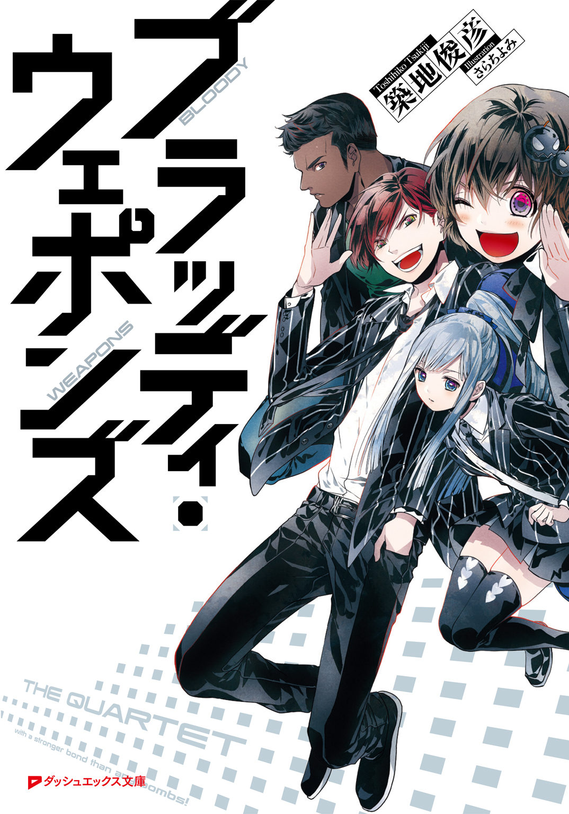
この本は縦書きでレイアウトされています。
また、ご覧になる機種により、表示の差が認められることがあります。
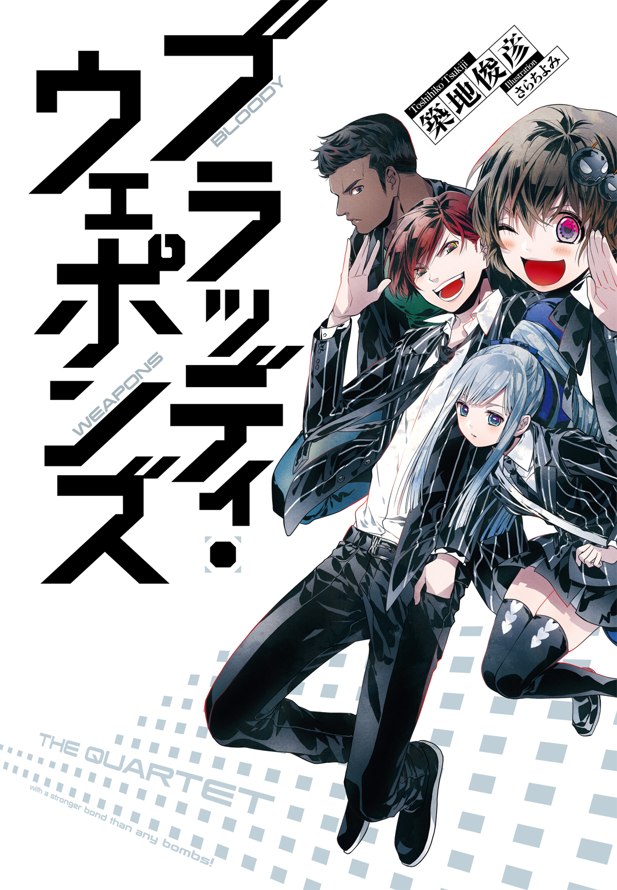
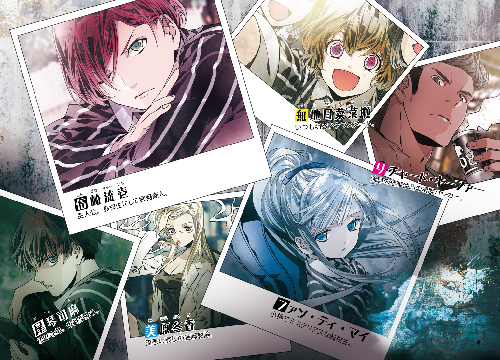
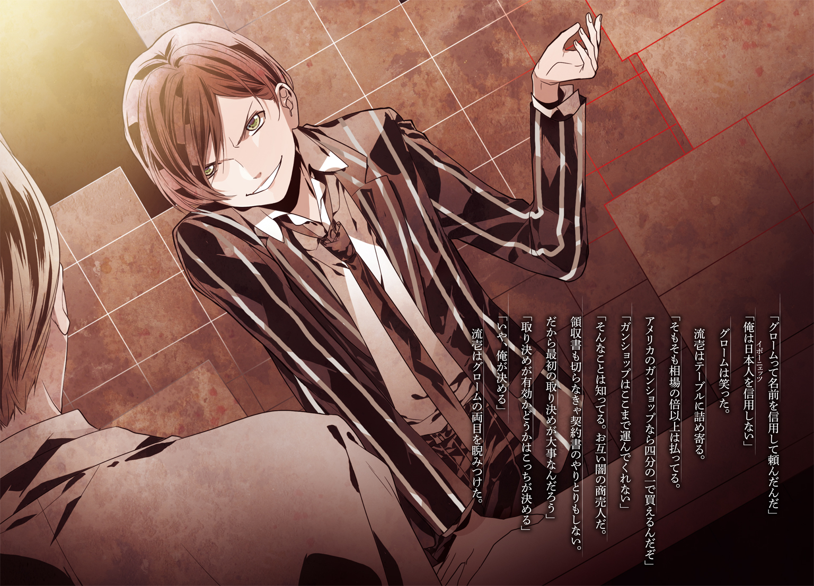
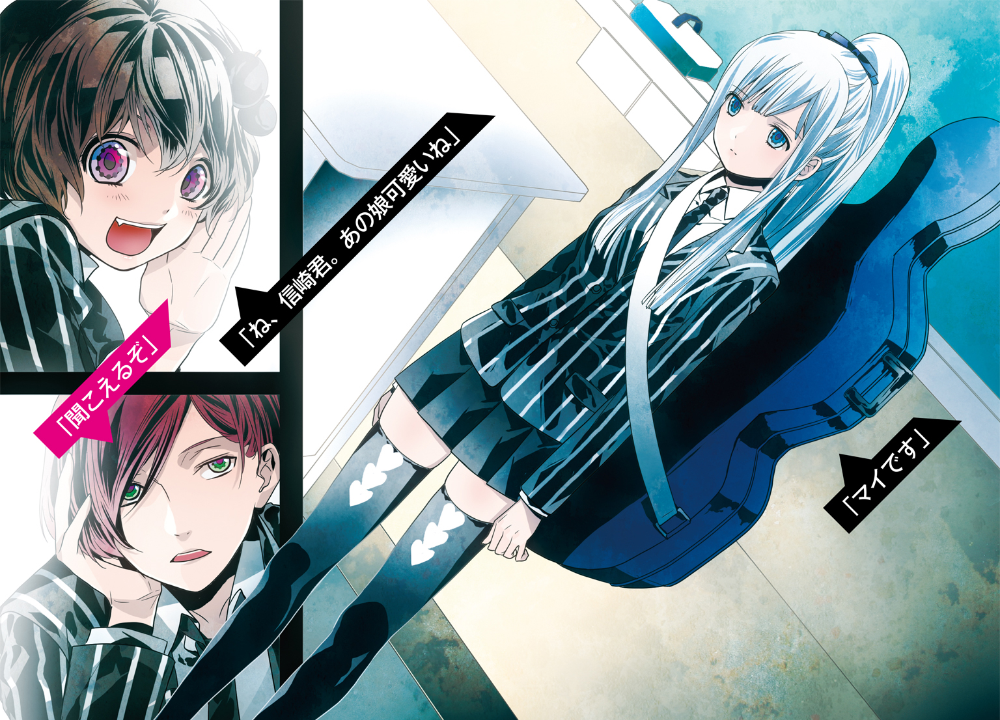
 ダッシュエックス文庫DIGITAL
ダッシュエックス文庫DIGITAL
ブラッディ・ウェポンズ
築地俊彦
第一章
梅雨時の北海道ほどすごしやすいところはなくて、内地が湿気と気温でひいひい言ってる中、からっとした空気とそこそこの気温で大変のんびりできる。天気がよくて食い物がうまいとくれば天国に決まっていた。それは北海道小樽市も同じで、人口減少による税収減とそれに伴う公共サービスの緩やかな低下さえ除けば、理想的なベッドタウンでもあった。
もっとも、十七歳の信崎流壱には、かつて栄えた小樽の風景も、現在の人口減少も実感している余裕はない。彼は深夜の小樽港二番埠頭で、ただひたすら立ったままだった。
「あー寒い。もっと厚着するんだった」
流壱は独り言のように文句を言う。潮風が絶え間なく吹きつけており、いくら六月とはいえさすがに身に染みた。
周囲に明かりはほとんどなく、埠頭にはコンテナ船が一隻接岸しているだけ。深夜の倉庫街は一種のホラーめいた静けさと恐ろしさが同居しているが、彼は怖いと思ったことがない。それよりも寒さだけはどうにかしたかった。
ぶつぶつ呟きながら海側を眺め、それから踵を返すと、小走りに倉庫の陰へと向かう。
そこに青く塗られた軽自動車が停められていた。助手席のドアを開けると身体を滑り込ませる。
流壱は両手を擦り合せながら嘆いた。
「うー、ひでえ目に遭った。誰だ、外で見張れって言った馬鹿は」
「自分だろう」
運転席の男が低い声で答える。指はハンドルにかけたままで、ときおりとんとんと叩いている。流壱の太腿ほどもありそうな太い両腕は、ひと目で鍛えられていることが分かった。
「車の中じゃ外がよく見えないと言った」
「言うんじゃなかった。視界なんてほとんど変わらない。口は禍いの門だ」
「もう一度挑戦したらどうだ」
「リック」
流壱はうんざりしたように言う。
「ここは北海道。外は寒い。車は温かい。外にいる理由がない。追い出すのは虐待だぞ」
「狭い車内よりマシかもしれない」
彼の名前はリチャード・キーファー。アフリカ系アメリカ人で二十五歳。もっとも当人は、国籍に対するこだわりがゼロに近く、「地球人」だと自称することもある。八か国語に精通しているのも、そのせいかもしれない。
人が二人乗ったので、車の窓が曇った。流壱は指で窓を擦る。
「......まだ姿は見えねえな」
「のんびりいこう」
リックがオーディオのボタンを操作する。車内に軽快なアイドルソングが流れ出した。
「好きだねこういうの」
流壱の呆れ半分の言葉に、リックは身体を左右に揺らしながら答える。
「女の子がグループを作って歌う。日本が誇るべき文化だ。興味のないお前の方がおかしい」
「興味あるアメリカ人にびっくりだよ。どこで知ったんだ」
「動画サイトという便利なものがある」
リックは上機嫌になりながら、歌詞の一節を口ずさんでいた。
流壱はポケットからスマートフォンを取り出した。
「......そういや昔さあ、電話かけると声が聞けるサービスあったんだって」
リックは怪訝な顔。
「なんだ、声って？」
疑問に流壱は答える。
「アイドルだよ、アイドルの音声。雑誌なんかに載ってる番号に電話すると、声が聞けたんだって」
「そりゃいいサービスだ」
「会話できるわけじゃないぞ。テープだかの声が流れてくるだけだから」
「テープってのも古い話だな」
「とっくになくなったらしいけどな。かけてみるか。０９０の△×■▽......」
流壱はスマートフォンのタッチパネルを押す。運転席のリックが慌てた。
「やめろ馬鹿」
「かかるかもしれねーぞ」
「なくなったんだろう。こんなところで止めろ」
流壱は電話を掛けるのを中止すると、スマートフォンをポケットにしまう。
「ま、握手会の方がよっぽど楽しいよな」
この言葉にはリックも深く頷いた。
「またＣＤ買わないと。次の握手会のチケットが手に入らない」
「十も二十も買う必要あるのか」
「桁が一つ少ないぞ」
とリックが言った。
さきほどから流れているアイドルグループは、頻繁に公演や握手会が開かれている。発売されているＣＤにチケットが同封されており、購入しないと握手することができない。リックは何人ものアイドルと何回も握手するために、大量にＣＤを買い込んでいるのであった。
流壱は呆れて首を振る。
「なんか違う世界の話みたいだ」
「お前もすぐにこっちの世界の住人になる」
「よせよ」
呟いてから車内の時計を確認する。午後十一時二十分。勤め人なら寝る時間だ。
「約束の時間を過ぎてるじゃねえか」
「あいつらに時間を守らせるのが間違っている」
「ロシア人ってこんなにルーズだったか？」
「人によるだろう」
リックが身体をもぞもぞさせる。大きな身体で軽自動車はさすがに窮屈そうだ。
「それか俺たちが侮られているかだな」
「くそ。儲け話を失っても知らねーぞ」
流壱は文句を言うと、後部座席から大きめのスポーツバッグを二つ引っ張った。
膝の上に載せる。
「結構重い」
リックが少し笑う。
「連中をその気にさせる大事なエサだ。少しくらい重いのも当然だろう」
「二つはやり過ぎたかな」
「俺は三つがいいと思った。そうしたら流壱が減らして二つにした」
「右手と左手に一つずつ。合計二つ。三つも持てねーよ」
「もっと鍛えろ」
「俺は貧弱なんだよ」
そう言いながら流壱は前方を見た。
人影が複数うごめいている。暗闇のため見えづらいが、倉庫の扉に集まり、鍵を開けているようだ。
やがて扉が開き、何人か中に入った。最後の一人が流壱たちのいる車に向くと、懐中電灯を三回明滅させる。
「来た」
リックは呟き、自動車のライトを一度だけ点滅させた。
「行ってくる」
流壱は言うと、助手席のドアを開けた。
両手にバッグを持つ。リックは下りず、運転席に座ったまま。
流壱は倉庫に近づく。立っている見張りらしき白人の男に、ちらりと目線だけをやった。
見張りは無言で通用口の扉を開ける。流壱が中に足を踏み入れると、見張りも後から入ってきて閉められた。
見張りはテニスラケットのようなものを持っていた。それを流壱の身体に近づける。
金属探知機だ。武装していないかどうか確かめているのだろう。
彼はぼんやり中を眺めた。倉庫内部は天井が高く、スペースの四分の一くらいが梱包された段ボールで占められていた。中央には折りたたみ式のテーブルが開かれており、パイプ椅子が数脚置かれている。
金属探知機は警告音を発さなかった。見張りが奥にうなずく。
そこには体格のいい男が二人、立っていた。
どちらもジャケットのボタンを外しており、腰の辺りが膨らんでいる。武装しているんだろうと流壱は見当をつけた。
だが彼の目当てはこいつらではない。
男二人の前には、年若い少年が座っていた。
年は流壱と同じくらいで、十六、七だろう。髪は濃い茶色で、顔立ちも日本人のそれとは異なっていた。瞳は暗がりでも分かるくらいぎらついており、耳が片方潰れている。顔立ちだけは幼さを残しているため、妙な威圧感があった。
流壱は近づくと、テーブルにスポーツバッグを置く。
すると少年は形の良い唇を開いた。
「日本人。ずいぶん若いな」
バリトンじみた声に、流壱は笑顔で応じる。
「こんばんは、ロシア人。若くても商売はできるぞ」
「ふっ」
少年は笑った。隣の手下を向く。
「俺たちの言葉が分かる。楽でいい」
ボスらしき少年は流壱に向き直った。
「シンザキ・リュウイチ。噂は聞いている。こんなに若かったんだな」
「若いのはお互い様だ」
「そうだな。何歳の人間がなにやろうと商売の神様は気にしない。そのあたりを分かってないやつがどうしても多すぎる。むしろ若いってことで警察が容疑者リストから外すから好都合だってのにな」
少年は引きつるように笑った。
流壱は追従笑いをしない。この手の人間にそのようなことをしたら、下に見られることを知っていた。
「あんたが雷だろ」
「学のないやつは雷って呼ぶが、雷だ」
その名が示すとおり、この男はロシアの血が半分、日本の血が半分だった。当人は普段雷と名乗っている。ロシア国籍だが日本名もあって、なんとか雷太という。北海道と沿海州を中心に武器と麻薬を売りさばいていた。
道警は北海道内に流入するそれらの禁制品の流入元を探ろうと必死になっているが、未だ発覚していなかった。
グロームの潰れた耳がひくひく動く。
「お前が荷を買うんだな。ここまで運ぶのは苦労した」
「ずいぶん時間がかかったな。最初に話つけてから三か月も経ったぞ。そもそも俺はあんたの兄弟に頼んだ」
「あいつは別の取り引きがあって東欧に出かけている。俺の方が話は早いぞ」
「ちゃんと運んでくれば文句はない」
「武器の密輸はどこの国でも禁止だが、日本は特に厳しい」
「海保と警察の上の方には鼻薬を効かせた。臨検なし、検疫も全部パスできるぞ」
「やるな。噂通りだ」
「商売には必須の技能なんだ」
「ふん。何百もの自動小銃に万を超える弾薬。いい子って評判の日本人がなにやらかす気だ。またどこかに売るのか？」
「お互い口出ししないのが流儀ってもんだろ」
「そうだが、なにせあの信崎の子供だ。なにをするのかと思ってな」
「跡を継いだんだよ」
と流壱は言った。
彼は高校生ながら世界を股に掛ける商売人、それも武器商人なのであった。
世界各国のメーカーから武器を買い付け、欲しがるところに売る。人類の半分からは必要とされ、もう半分からは毛嫌いされるビジネス。流壱は小さい頃からこの業界で生きてきた。
彼は眼前の少年から、小火器を購入しようとしていた。
グロームは鷹揚に訊いてきた。
「で、それが金か？」
流壱は答えずに訊き返した。
「荷物は？」
「外に留まっている船の中だ」
グロームの台詞に流壱は渋面を作った。
「おい。ここまで運ぶ約束だ」
「約束？」
男は笑顔を瞬時に消した。
「そいつはこっちで決める」
「俺に一人で運べってのか」
「こっちで決めると言った！」
未成年らしからぬドスの利いた声。バリトンが倉庫内に反響する。彼は自分の声質が脅しに活用できることを十分承知していた。
グロームは拳をテーブルに叩きつけた。同時に手下二人がゆっくりと手を懐に入れようとした。気配で察する限り、真後ろの男も同じことをしている。
流壱は両腕を広げた。
「分かったよ。自分で運ぶ」
「素直なのがこの世界で生き残るコツだ」
グロームの表情が戻る。手下二人も元の姿勢になった。
「金は約束の額だけあるんだろうな」
「ああ」
流壱は二つのスポーツバッグのジッパーを開けた。中が見えるようにする。
入っているのは、帯封された一万円札の束だった。
「こっちに一億、こっちに一億。合わせて二億」
「ふん」
グロームは無造作に札束を取ると、ぱらぱらとめくった。
「円はドルに替えるのが面倒だ」
「あんたと懇ろのモナコの銀行に任せればいいだろ」
「最近じゃ追跡が厳しいんだ。あれだけの武器を日本でどうするつもりだ」
「お互い武器屋だ。融通利かすのはよくある話だろう」
「話すつもりはないってことかよ」
「もうひとつ」
流壱は懐に手を入れる。百万円の束を二つ取り出し、テーブルの上に置く。
「やつのことを教えろ」
その言葉に、グロームはわずかに肩を反応させた。
ちらちらと、テーブル上の札束に目をやっている。金と天秤に掛けている様相だ。
「シマのことか」
流壱はうなずく。
「お前と取り引きするのは、武器だけじゃない。あいつのネタを持っていると言ったからだ。どこにいる？」
「なんでそんなことを知りたがる」
「お前には関係ない」
「はっ、お前の考えてることは分からん。とりあえず、こっちの取り引きを先に片付けようじゃないか」
グロームがうなずく。後ろに立っていた手下が、スポーツバッグのジッパーを閉めて手に持った。
「金はもらった。ただし荷物は半分だ」
「おい！」
思わず流壱は声を上げた。
「Ｍ４Ａ１が五百丁に弾薬が十万発。約束したはずだ！」
「中東からアルメニア経由でウラジオストックまで運ぶのに手間がかかった。それに金をドルに替える手数料がいる。だから半分にする」
「グロームって名前を信用して頼んだんだ」
「俺は日本人を信用しない」
グロームは笑った。
流壱はテーブルに詰め寄る。
「そもそも相場の倍以上は払ってる。アメリカのガンショップなら四分の一で買えるんだぞ」
「ガンショップはここまで運んでくれない」
「そんなことは知ってる。お互い闇の商売人だ。領収書も切らなきゃ契約書のやりとりもしない。だから最初の取り決めが大事なんだろう」
「取り決めが有効かどうかはこっちが決める」
「いや、俺が決める」
流壱はグロームの両目を睨みつけた。
同い年の少年二人、しかも裏社会の住人。彼らの言葉がぶつかった。
グロームは恐らく武装しており、両脇の手下も真後ろの見張りも強面だ。流壱はどちらかと言えば華奢な部類に入る。しかも一人。
だが彼は怯える様子を見せなかった。視線をまったく外さない。
身体が震えるようなこともない。その意思は、この場の誰よりも強固であった。
灰色で濁ったような目をしたロシア人は、しばらくするときょろきょろした。そして首を縦に深く動かした。
「よし......いいだろう」
「結構」
「お前には売らない」
「なんだと!?」
流壱が叫ぶ。グロームは不揃いの歯を見せて笑った。
「同い年の日本人に商売されるのは気に入らん。取り決めは破棄だ」
「てめえ！」
彼がテーブルを乗り越えようとした瞬間、手下二人が懐から自動拳銃を抜いた。
Ｈ＆Ｋ社製ＵＳＰの銃口が、頭にポイントされる。
流壱はまたグロームを睨む。
「最初からこういうつもりだったのか」
「面白い噂を聞いたもんでな」
グロームはポケットからキューバ産の葉巻を取り出すと、火を点けた。幼さすらある少年と葉巻という、奇妙な取り合わせ。
「ちょっと前から話題になってる日本人がいる。そいつの父親は武器商人で、この世界じゃ名の通った男だった。父親は数年前に死んで、そいつが跡を継いだ」
「............」
「ところがそいつは武器を売るよりも買い戻している。しかも父親が売った武器を、かなりの高値をつけて買い取る。今船に積んであるＭ４Ａ１もそうだ。三年前に俺が仕入れたもんだからよく覚えている」
流壱は無言。グロームは紫煙を吐きながら笑った。
「まさか信崎の子供とも取り引きすることになるとはな」
「............」
流壱はまだなにも言わない。ただ、手を握ったり開いたりを繰り返していた。
グロームの態度は不遜なものだった。部下が拳銃を流壱に突きつけているのだから、当然だろう。
「一つ聞かせろ。どうしてあいつの売った武器を買い戻しているんだ？」
流壱は呟く。
「......あんたには関係ない」
「はっ、まさか贖罪って言うつもりじゃねえだろうな。信心か？ それとも偽善か？ どっちにせよ、あいつの息子には一番似合わねえ言葉だ」
「どうだっていいだろう。親父の武器は俺が買う。それだけだ」
「それだけなわけあるまい。......ま、どっちでもいい」
吸いかけの葉巻を放り投げる。
「たとえ信崎の子供でも、俺の縄張りで商売をしてるのは気に入らん。この金は貰っておく。勉強だと思ってさっさと帰るんだな」
グロームは目をぎらぎらさせながらそう言った。
流壱は口をつぐむ。相手の言葉は脅しではなく本気だ。口調と、部下の態度を見れば誰にでも分かる。どんな些細なことでも引き金を引くのに躊躇はせず、この場に死体を遺棄して立ち去るはずだ。
そうなったら全てが終わる。流壱の計画も、今までしたことも、これからすることも、なにもかも。
だが彼は、それでもテーブル越しに詰め寄った。
「さっさと親父の武器をよこせ」
グロームが一瞬ぎょっとした。流壱は続ける。
「そうしたらお前の態度は許してやる」
「はっ、ふざけやがって！」
グロームは叫んだ。
「生かしてやろうと情けをかけたが止める。殺せ！」
手下が引き金を引こうとする。その刹那。
流壱はテーブルの下に手を入れた。
そこにあるものを摑むとそのまま横に転がった。
手にしたものは拳銃。あらかじめ仕込んでおいたグロック25。安全装置を外し、薬室《チャンバー》に初弾を送り込む。引き金を引いて撃ちまくった。
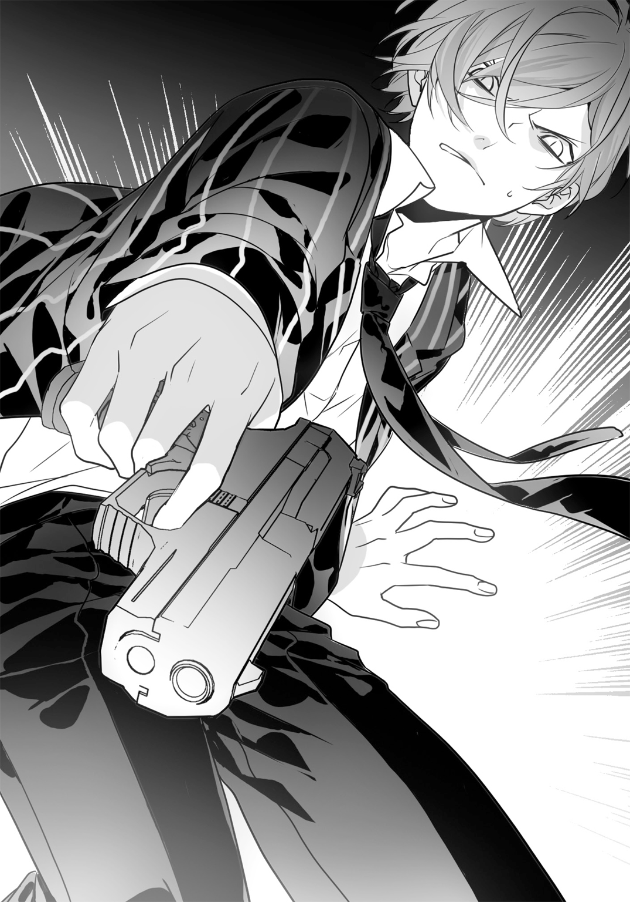
右側の手下の腕に命中。その男は自分の武器を落とす。
もう一人を狙う余裕はない。真後ろにも敵はいる。流壱は転がり続け、積まれた段ボール箱の奥の方へ身を隠した。
息を軽く吐く。激昂したグロームの声だけが聞こえてきた。
「くそっ、隠してたな！」
「最近の日本人は取り引き前に下見するんだよ！」
「銃なんか使うんじゃねえ！」
「商売が商売だ、使い方くらい知っておかねえとな！」
段ボール箱の陰から一瞬だけ顔を出し、発砲する。手下の一人が撃ち返し、盾代わりにしている段ボール箱に命中。中のミネラルウォーターが派手な漏水をした。
グロームがロシア語で指示を飛ばす。
「撃て、撃て！」
負傷していない手下二人がしきりと撃ってくる。コンクリートの床に命中、あるいは鉄の柱に命中して弾丸が潰れる。発砲音が倉庫内で大きく反響した。
グロームがまたロシア語で叫んだ。
「おいシンザキ・リュウイチ！ これで今後一生取り引きはなしだ！」
「黙れ、親父の武器を返せ！」
流壱は頭を一瞬出して引っ込める。グロームの手下はこちらには接近してこず、立ったまま撃ちまくっていた。
「やれ、やるんだ！」
敵の銃声がひときわ大きく響く。銃撃戦に、倉庫内の空気が振動した。
流壱は身体を低くして段ボール箱の山から山へと移動した。積まれた段ボール箱はまるで迷路のようだ。音も反響し、正確な位置を把握するのが困難。
それでも彼は巧みに敵の居場所を確認すると、射撃を続けた。
ほんの少しだけ頭を出してから位置を確認し、引き金を引く。弾は弾倉に入っている分しかないから派手な射撃はできない。
反対にグロームとその部下たちはこれでもかと撃ち続けていた。
絶え間なく弾丸は発射され、まるでパチンコ店の店内だ。弾丸が鉄骨や床に当たっては跳ね返り、段ボール箱に穴を開ける。そこからミネラルウォーターや炭酸飲料が吹き出していく。
「あいつを殺せ！」
グロームの低い声。手下二人が駆け出すのが分かった。
段ボールの山を乱暴に崩しながら向かってくる。それら騒音から遠ざかるように流壱は動く。
背後でひときわ大きい音。とっさに段ボール箱の山と、その横に置かれた鉄製コンテナの後ろに飛び込んだ。
ロシア語の叫び。流壱は陰から半身だけ出して撃つ。悲鳴もなにもないから当たってはいない。
敵も反撃する。射撃音が激しいのは仲間も来たからだろう。二人がかりで流壱を攻撃している。コンテナに弾がいくつも当たって跳ねる。
流壱は顔を出して素早く引っ込めた。手下の場所を覚えると、床に這いつくばりながらグロック25を突き出す。二度引き金を引いた。
倒れる音が聞こえる。手下の一人に命中。悲鳴を上げ続けているから生きている。そうでなければ狙ったかいがない。
「もう一人！」
さらに撃つ。弾丸は大男の肩に当たり、床に転倒させた。
残弾を頭の中でカウントする。三発は残っているはずだ。今敵の二人を負傷させ、一人はその前にやった。あとはボスのグロームのみ。
流壱は立ち上がって駆け出す。段ボール箱の間から抜け出た。
テーブルのある場所まで行く。だがそこにはなにもなかった。
倉庫の中は、テーブルと倒れたパイプ椅子、穴だらけになった段ボール箱に負傷した外国人だけだ。
グロームも金の入ったスポーツバッグもない。いち早く逃走していた。
「くそ」
奥からロシア語の嘲笑が響く。
「残念だったな！」
物音がしている。奥の扉が開けられているのだ。
「商売は速さが第一だ。のろのろしてるから金を逃す！」
流壱は叫び返した。
「部下を置き去りにするのか！」
「どうせ金で雇った連中だ！」
グロームは笑っていた。
「そいつらを煮ようが焼こうが好きにしな！ だけどお前は医者に連れて行くんだろ？ そういう甘ちゃんだってな」
「......くそ」
扉から出ていく音。もう一度流壱は怒鳴る。
「逃げられると思ってんのか！ 海保がウラジオまで追いかけるぞ！」
「お前の鼻薬が効いてるから問題なしだ！」
グロームは最後に笑った。
「いい勉強になったな。最後に教えてやる、お前の噂も、とんだ甘ちゃんだってことも、教えてくれたのはあのシマだよ！ やつはなあ、探さなくたっていずれ会いに来るぜ！ お前にそう伝えてくれとさ！」
グロームの声が遠ざかる。流壱は走って奥の扉を開けた。
潮風が吹きつけてくる。真夜中の埠頭は雲が上空を覆っていて、海と空の境目が分からない。人影はなく、コンテナ船だけが横付けされており、ブリッジには明かりが灯っていた。
海へ逃げる気だと流壱は直感。近づこうとしたが、乗船するためのラッタルはすでに引き上げられていた。
機関の音が轟き、岸壁からコンテナ船が離れていく。ブリッジに小さな人影が見え、流壱を見下ろしていた。
嘲笑しているのかもしれない。彼は船に近づこうとして思いとどまった。飛び込んだところ船腹をよじ登れるか分からないし、へたをしたらスクリューに巻き込まれる。
貨物船はどんどん埠頭から遠ざかっていった。
流壱はそのシルエットをじっと見つめる。その隣に、大きな影が近づいてきた。
「行ったか」
「まあね」
流壱は返事をする。
影の主、リックは流壱の隣まで来る。彼はダイビング用のスーツを着ており、髪の毛も濡れていた。
「こっちは終わった」
「ご苦労さん」
流壱はスマートフォンを取り出した。
通話のアイコンをタップし、電話番号を押そうとする。するとリックが取り上げた。
「これは俺がやる」
「おい」
「こういうのは、本当は俺の仕事だ。こういうときのためにお前と一緒にいる」
リックは小声で呟きながら電話番号を押す。
「０９０△×■▽......」
突然、コンテナ船の船腹に炎が上がった。一瞬遅れてから派手な爆発音。
黒い煙がコンテナ船を包む。天を焦がすような火炎が埠頭と二人を照らした。コンテナ船は揺れると、左側を下にしてゆっくりと傾いていく。
リックの仕掛けた大量の爆薬は正確に炸裂した。コンテナ船は数百丁の自動小銃と数万発の弾薬を積んだまま沈没しようとしていた。
「ざまーみろ」
流壱が呟く。
「沈むまではまだ時間がある。乗員は脱出できるだろ。逮捕はされるだろうけどな」
「海保もこれは見逃さない。ただ武器は押収だ」
「それでもいいさ」
リックが背後を見る。海上保安庁の建物が慌しくなっていることが、ひと目で分かった。
「流壱、金も沈めたんだろ」
「いーや。グロームに見せるだけでよかったから、バッグの上にしか現金は入れてない」
「じゃあ、あとはなんだ」
「アイドルのＣＤ。お前がたくさん持ってたやつ」
流壱はさらりと言う。リックは呆れ、それから笑った。
「この野郎。なんて罰当たりなやつだ」
「あとで俺も買うよ。海に沈めた詫びだ」
流壱は沈みかかったコンテナ船から背を向ける。
「売る方も買う方も損が多いな、この商売は」
「因果なもんだ」
リックの台詞に軽くうなずくと、流壱は独り言のように呟いた。
「グロームは司麻に俺の噂を聞いたんだそうだ」
「......そうか」
「向こうから会いに来るらしいぜ」
「空港と港に網を張った方がいいな。俺に任せろ」
流壱は寒そうに身体を震わせた。
「早く離れよう。明日はちゃんと登校したい」
「妙なところで真面目だな。なんかあったか？」
リックの質問に、流壱はにやっとする。
「転校生に会うんだ」
彼は巨漢の黒人をうながした。二人はぶらぶらと、停車したままの軽自動車の元へと向かった。
第二章
流壱の父親はその筋では有名な武器商人だった。頼めばカッターナイフから化学兵器まで、およそ調達できないものはないとまで言われるほど。そのため独裁国家に反旗を翻すゲリラや経済封鎖を受けている小国などからの注文が殺到し、多大な利益を上げた。
死亡してからは流壱が跡を継いだ。ただ彼は武器を売ってはいない。
彼は父親の撃った武器がどこでどんな風に使われたのか、つぶさに見てきた。それらは見ず知らずの人間だけでなく、知り合い、友人をこの世から消していく。あげく、回り回って両親すら吹き飛ばしてしまった。
それらのできごとは彼の心に深く刻み込まれた。そして一つの決意をさせた。
売られた武器の回収。武器を全て買い戻すのだ。
両親への鎮魂ではない。贖罪のためでもない。世間に対して父親の行為を詫びているのでもない。ただ、両親の乗ったメルセデス・ベンツＧＬが大量のＴＮＴ爆薬で四散するのを見たときから、そう決意したのだ。それが矛盾に満ちたことだとしても。
父親の残した現金と債券、土地などは世界中に点在している。それらは富が富を生むがごとく勝手に利益を上げていた。流壱はそれらを元手として武器を買い続けているのだった。
彼が父親を失ったのは中学生のころ。今は高校生。商売の合間を見ては学校に通っている。
通学する私立荷堂学院は都内によくある中堅の私立高校だ。一応キリスト教系。歴史は古いが現在の場所に移転したのは数年前のこと。学生の数に比して敷地面積はやや大きく、偏差値はそこそこ、風紀も普通。授業料は平均的なサラリーマン家庭が払える額で、気風は穏やか。問題を起こしたことも起こされたこともない。
学校の所在地は沿岸部。以前は都内の一等地にあったが、大手不動産が「開発のための土地がどうしても必要なので」と高値で買い取り、同等の値段で数倍の敷地を購入した。なので中はやたらと広い。
他の一般的な高校と違い、沿岸部どころか敷地内には港がある。創業者の祖先は江戸時代に回航船を何隻も所有していたそうで、荷堂学院の「荷」にはそんな意味もある。
港と直結しているのは便利で、たまにＲＯ‐ＲＯ船が横付けされて学校の備品を荷下ろしすることもある。そして修学旅行は船を使うことになっていた。
流壱はここの二年生である。彼は商売上学校を休むことが多いのだが、成績はかなり高い。その気になればもっと偏差値の高い高校へも行けるが、あえて荷堂学院に通っていた。
理由は二つあって、一つはまさにこの気風が気に入っているため。もう一つはちょっと表には出せない。
その日、流壱は朝のホームルームに間に合うよう、きちんと登校した。クラスは二年四組。朝から出るのはかなり久しぶりである。
「おはよー」
扉を開けて教室に入る流壱に、半分ほど埋まった席から視線が飛ぶ。そしてクラスメートたちは口々に言った。
「あれ、信崎が来たぞ。珍しい」
「また休むんだと思った」
「雪でも降るんじゃない？」
驚き半分、歓迎半分の言葉だと彼も知っている。ひと月の半分は教室にいないクラスメートでも遠ざけたりしないのが、この学校のいいところでもあった。
流壱は「俺がいなくて寂しかっただろ」などいいながら自分の席に着く。場所は窓側の一番後ろ。
さっそく前の席の女子が話しかけてきた。
「信崎君、久しぶり」
彼女の名は無地目菜菜瀬。ちょっと珍しい姓と名前だ。髪は短めで人当たりがよく、笑顔を絶やしたことはない。両親は現在南米で駐在員をしていると聞いた。
「先週ずっとこなかったね。風邪？」
「似たようなもん。寒かった。北海道にいるみたいだった」
流壱の言葉に菜菜瀬は「あはは」と笑う。冗談だと思ったようだ。
彼はバッグを机に引っかけながら訊く。
「俺がいないうちに、なんかあった？」
「ええとね、数学の先生が入院したんで新しい先生が来るかもって。あとは楽蘭高校からお客さんが来てるみたい。それと山中君が階段で滑って膝をすりむいたって言ってたけど......」
菜菜瀬は指を折りながら思い出していたが、じきに顔を上げた。
「そうだ、今日、うちのクラスに転校生来るって」
「ふーん」
「あれ、興味ない？」
「あるけど」
菜菜瀬は不思議そうな顔をしていたが、流壱はそれ以上説明せずに、礼だけ言って着席した。
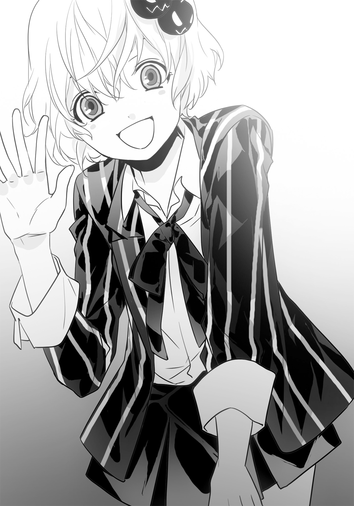
やがて登校した生徒たちが続々と教室にやってくる。皆、流壱を見て一様に「わっ、来てる」と驚いていた。
席が全部埋まると同時に予鈴が鳴った。
担任教師が入ってくる。その後ろに、制服を着た少女が一人ついてきていた。
長めの髪の毛で口を真一文字に結んでおり、顔立ちはどことなくエキゾチック。そして無機質な表情だ。クールというよりは感情が見えない印象。
そしてなにより、大きめのギターケースを背負っていた。
一通り起立と着席を繰り返した後、教師が説明した。
「えー、うちのクラスに転校生が来ました。自己紹介を」
教師にうながされ、女子生徒は口を開く。
「マイです」
それだけ言うと、また口をつぐむ。教師はチョークを渡そうとしたが少女がそれきり動かないので、仕方なく自分で黒板に書いた。
カタカナで「ファン・ティ・マイ」と書かれると、教室から「へえ」と声が上がった。
教師が言う。
「マイはベトナム生まれだ。日本に来てからは二年になるから、会話は心配しなくていいぞ。事情があって今日から荷堂学院に転校してきた。仲よくするように」
転校生はほんのわずかだけ頭を下げた。
教師は彼女の座席を指示する。転校生は無言で歩いて行った。
周囲の視線が集中する。外国人の転校生自体が珍しい上に、小柄でミステリアスな容貌。そしてギターケースを背負っているとくれば、注目を集めて当然だった。
マイは窓側から二列目の一番後ろ、流壱の隣に着席した。ギターケースは後ろの壁に立てかける。
菜菜瀬が振り返った。
「ね、信崎君。あの娘可愛いね」
「聞こえるぞ」
流壱がたしなめたためか、菜菜瀬は声を小さくした。
「ギター好きなのかな」
「カバンの代わりなんじゃね」
「カバン持ってるじゃん」
マイは机の端に布製のカバンを引っかけていた。流壱はどうでもいいと言わんばかりに肩をすくめる。
「じゃあギター好きなんだろ」
「やっぱり。軽音部誘ってみようかな」
「無地目は軽音部だったか？」
「違うけど誘ってみる」
菜菜瀬は意味があまり通っていないことを言った。
授業中のマイは、黙って黒板を眺めていた。が、手はしきりとノートを取っている。ラテン文字だったので、クオック・グー（ベトナム国語）で板書しているのだろうと流壱は見当をつけた。
休み時間、マイはクラスの女子に囲まれていた。
皆口々に、コミュニケーションを取ろうとしている。どこで生まれたのかとか、ベトナムにはどれだけいたのかとか、日本ではどこで暮らしていたのかとか。
マイはそれらの質問を嫌がっているようではなかったが、あまり多くは語っていなかった。
「おとなしー娘だよね」
菜菜瀬が自分の席に戻りながら言う。
「喋るの苦手なのかな。あまり教えてもらえなかった」
「高校に慣れてないんだろ」
流壱は言う。それからギターケースに目を向けた。
「あれのことは訊いた？」
「うん。ギターなのかベースなのかは内緒みたい。軽音部にも入らないって」
菜菜瀬は残念がりながら着席した。
だからお前は軽音部じゃないだろうと思いつつ、流壱はマイに目線をやる。
机の周りからは女子がいなくなり、彼女一人だけだ。特に退屈をしたりせず、静かに座っている。
ちらりと流壱の方を向いた。
一瞬だけ視線が交錯。すぐに離れる。
もうこっちを見ない。どうして向いたのかは不明だが、なんにせよ興味を失ったようであった。
流壱は肩をすくめた。
そろそろ休み時間が終わる。次の授業は数学だ。
と、ポケットの中が振動した。
スマートフォンに着信があった。流壱は発信者の名前を見て、渋い顔をしながら立ち上がる。菜菜瀬が驚いた。
「ちょっと、もう授業はじまる」
「はじめててくれ」
それってあんたが決めることなのとの文句を背にしながら、彼は廊下に出た。
小走りに階段を下ると校舎の裏に回る。中庭のようになっており、昼休みには弁当を広げている生徒も多い。
そこからはなだらかな斜面となっており、校庭へと繋がっている。その向こうは港と、東京湾。
流壱は斜面を下って校庭を横切る。港へと向かった。
生徒の港への出入りは、基本的に自由となっている。「港」だがたいして大きくないので危険性は低いと判断してのこと。ただ倉庫がいくつか建っていて、そこへは入れない。
にも拘わらず、流壱は堂々と倉庫に近づいた。財布からＩＣカードを取り出し、扉に近づくと、電子ロックにかざす。
ライトが赤から緑に変わり、ロックが解除される。重い扉なので体重をかけて開けた。
それからようやく、スマートフォンの通話アイコンを押した。
「もしもし。なんだよ」
（なんだよとはご挨拶だな）
かすかなアメリカ訛りの日本語が聞こえてくる。電話の相手はリックであった。
（久しぶりのスクールライフはどうだ？）
「楽しいぞ。みんな俺がいなくて寂しかったと大泣きしていた」
（どうせ珍しいやつが学校に来たとか言われたんだろう）
事実だったので、流壱は無視した。
「で、真面目な学生に電話とはなんの用だ」
（転校生の具合はどうだ）
「普通。なに考えているのかはまだ分からねえ」
（どのみちやつの狙いは決まってるだろ）
「まあな。もう切っていいか」
（待て。次の取り引きが決まったぞ）
一拍おいてからリックは言った。
（荷物はＣ４、千キロ）
「売り主は？」
（野潟だ）
「あいつかよ」
流壱は顔をしかめる。リックには表情が見えないはずだが、なだめるように言ってきた。
（嫌っているのは分かるがしょうがない。向こうもお前のことは好きじゃないからお互い様だ）
「ボラれそうだ」
（親父さんの武器なら、いくらでも払うだろ）
流壱は武器に大量の札束を積むことを厭わない。自分の父親が売りさばいたものならなおさらだ。
彼は喉の奥で唸った。
「しかし爆薬かよ。親父も処分が面倒なのを売りやがって」
（他にもある）
「なんだ」
（２Ｋ22ツングースカが四輌ついてくる。というか、こっちがメインだな）
「ロシア製の自走対空砲が四輌!? なんだそりゃ！」
（親父さんがロシア軍で使われていたものを、書類をいじって破棄予定のものとすり替えたらしい。それからタジキスタンのスクラップ業者に売ったと見せかけてキプロスに流した。その後コンゴの反政府組織に売ろうとしたんだが、政府軍に鎮圧されて買い手がいなくなり、仲介したギリシア人が処分に困ってイオス島の倉庫に保管していたのを、野潟が買い、俺が見つけた）
「親父め、見境ねえんだよ」
流壱は口の中で罵る。
「いつ来るんだ」
（一週間後に到着）
「現地で買ってスクラップにしよう」
（こっちの持ってるミラン２との交換だ。そうもいかんよ）
「向こうはミランあるってなんで知ってんだ」
（なんだか知らんが知ってた。あるんだろう）
流壱は答えずに、扉近くにある電気のスイッチを入れる。蛍光灯が点いて倉庫の中が照らされた。
そこにラテン文字やキリル文字で書かれた木箱がずらり。そして一番上に、フランスとドイツが開発した対戦車ミサイル、ミラン２が鎮座していた。
流壱は数を確認しながら答える。
「あるよ」
リックは返事をしなかったが、納得した雰囲気であった。
この倉庫は流壱の持ち物である。それだけではない。荷堂学院自体が彼の持ち物だった。ちょっと明かせない理由というのがこれである。
死亡した両親の持つわずかな銀行預金と、膨大な隠し財産を手に入れた彼は、経営危機に瀕していた荷堂学院を購入することにした。もちろん代理人を通してなので、表面上は一生徒。旧経営陣からは苦情も出たが、寄付金をたっぷりはずむことで黙らせた。
なので授業中にいなくなろうがどれだけ休もうが、流壱が退学になることはない。もっとも、成績がいいので問題になること自体が少ないが。
彼は学院を購入するや湾岸部へ移転させ、施設も一新した。その時に武器その他諸々を保管する施設も校内に作りあげたのである。
学校の内部で武器保管はいかにも「なさそう」なことであり、大学と違って過激派の拠点と目されることもない。無論一般の生徒は立ち入らせないようにし、念のために警察関係にも大金を撒いた。学校そのものが流壱の所有物であることも合わせ、見事な隠し場所となったのである。
流壱は見せ金ならぬ「見せ武器」として多数の武器を保有する必要があった。武器商人は現金ではなく武器同士の交換を望むことがあるため、父親が調達したものをいくつか手元に置きっ放しにしている。荷堂学院はそのための拠点として完璧に機能しているのであった。
スマートフォンからリックの声が流れる。
（もしもし？）
「聞いてるよ」
彼は武器を確認してから電気を消した。
「いっそ船ごと太平洋に沈めるか。到着前に」
（やめとけ）
「入港した途端に、臨検させるって手もあるよな」
（二度と業界で取り引きできなくなる。受けとけ）
「分かったよ」
日本、しかも東京に武器を積んだ船を入港させること自体が危険な行為だが、流壱は父親から受け継いだコネクションと賄賂でそれらを可能にしていた。
リックの声がスピーカーから流れる。
（俺もサポートに入ろう。どのみち顔を出すつもりだった）
「分かったよ。学校終わったら行く」
（いや、その必要はない）
流壱は頭の上に疑問符を浮かべた。リックは続けて言う。
（こっちから行く）
「俺はまだ学校なんだよ」
と彼は喋ったが、スマートフォンに反応はない。すでに通話は切られていた。
流壱は口をへの字にするとスマートフォンをポケットにしまう。それから教室に戻ろうと駆け出した。
とっくに授業ははじまっていた。静まりかえった廊下を歩く。
自分の教室から声がしている。「新しい数学教師......」と聞こえてきた。そういえば先生が替わったんだったなと流壱は思い至る。
遅れたが、堂々と教室の扉を開けた。
クラスの担任教師が説明していた。その隣に新任の数学教師。
流壱はぽかんと口を開ける。
リックがにやりとした。同時にクラス担任の「新任のリチャード・キーファー先生だ」との声がした。
「こっちから行くって言っただろ」
リックのウインクに、流壱は頭を抱えたくなった。
次の時間はいきなり数学。リックの授業だった。
クラスの視線は当然ながら新任の教師に釘付けだ。特に女子が興味津々。アフリカ系のアメリカ人でしかもいい男ときては、女子生徒の注目を集めるのも当然だろう。
しかもリックは「日本のアイドルが好き」と自己紹介をしていた。ＣＤを買いあさっていることまで喋っており、生徒の心を早くも摑んでいる。
この調子では他のクラスでも噂になるはずだ。いくらもしないうちに、全校生徒にも知られる。
「つまりィ、このｙに代入するわけですねェ」
リックは語尾を若干巻き舌気味に喋っていた。もっとちゃんと発音できるはずだが、日本でのステレオタイプに従おうとしている。芸人精神が旺盛なのだろう。なにしろアイドルの大ファンだ。日本のカルチャーをいろんな意味で知っている。
「それでは、この問題を誰かにやってもらいまショウ」
リックが教科書片手に、にこにこしながら名簿をめくっている。
「そうですねェ......漢字難しいですねェ。おや、花島さんはフラワーですか、とてもいい名前デス」
教室が沸き、おだてられた女子が照れたような表情を浮かべる。流壱は「馬鹿言ってんじゃねえや」と思いながら窓の外を眺めた。
目ざとくリックが視線を向ける。
「では、この人にやってもらいまショウ。信崎クン」
流壱はぎょっとして振り返った。リックは笑っている。
「なんだか自信がありそうに見えまシタ。さあ前へ」
クラスの視線が集まっている。
流壱はむすっとしながら黒板へと歩いた。途中で女子生徒が「いいなあ。当てられて」なんてことを呟いている。彼としては変わりたい気分で一杯である。
指定された問題がまたややこしい。彼は半分うんざりしながらチョークを手に取った。
それから小声で言う。
（おい）
「どうしまシタ？」
（馬鹿な喋り方は止めろよ。なんでお前がうちの学校に赴任するんだ!?）
（数学を教える人手が足りないって話だから、手伝いにな）
リックはにこやかな表情を作り、小声で返事をした。流壱は憮然とする。
（日本で教師なんかできんのか？ うちの担任、お前のことマサチューセッツ工科大学を優秀な成績で卒業したとか言ってたけど、大学行ってたか？）
（大学じゃ俺の才能は計れん）
（首にタトゥー入れた教師なんかいるか！ ......どうやって入り込んだんだよ）
（ちょっとデータをこう、な）
リックはかすかに、指でキーボードを叩く仕草をした。
流壱は眩暈を起こしそうになった。リックは天才的なハッカーでもある。中でもクラッキングは得意中の得意で、欧州大手銀行のサーバに遊び半分で侵入し、プログラムを書き換えたこともあった。それは全従業員のデスクトップに頭取のＳＭ写真が映し出されるという他愛のないものであったが、銀行はそう思わなかったらしく、株価が信じられない上下動をしたあげく頭取と役員の首がまとめて飛んだ。
きっと今回も、適当な経歴をでっち上げて理事会承認済みにしたのだろう。
渋い顔をする流壱。イライラしていたせいか、式を一段飛ばして書いた。
「おや、間違いましたネ」
（黙れ。俺の学校のサーバをいじるな）
（サーバに侵入するのがとても楽だったぞ）
「安息の場所を返せよ！」
つい声が出た。
クラスメートたちがぎょっとする。続けて笑い出した。
「怪奇、いきなり奇声を上げる高校生」
「欲求不満なんじゃない？」
流壱は急いで口をつぐむと、背後を見ないようにした。
（くそ。最悪だ）
（突然おかしくなったように見えただろうな）
（誰のせいだと思ってやがる）
他の生徒に聞こえないよう罵った。その間も手は動かしていたが、なにを書いているのか自分でもよく分からない。
後ろの席から「信崎君の文字が読めませーん」と声が上がる。菜菜瀬だった。
改めて黒板を見ると、文字が変な方向に歪んでいる。ミミズが酔っ払ったみたいだ。
菜菜瀬はけらけら笑っていた。
「信崎くーん。手伝ってあげようか」
「うるせえ、今書き直すから待ってろ！」
彼女に叫ぶと、黒板消しで半分ほど消した。そこにもっとまともな字で書き直す。
（また間違った）
とリック。
（やかましい！ ただでさえ俺の学校の平和が揺らいでいるってのに）
（そういえば楽蘭から客が来ていたな。ちらっと聞いたが生徒会長だ）
（あの野郎か）
クラスメートに見えないようため息をつく。その仕草は運命を嘆くというより、面倒くさいと言いたげであった。
（リックはうちの教師にならずに、外から支援してくれりゃよかったんだ。どうせ出入りは自由なんだから。ゲストパスは渡してあるだろ）
（そう簡単にはいかんよ。あそこにあるあれ）
リックが視線だけで教室の後ろを指し示す。流壱もそこを見る。
「信崎君がよそ見した」
「だからうるせえ！」
また笑いながら注意した菜菜瀬に文句を言うと、声を潜める。
（......ギターケースか）
（ああ。つまり、そういうことだ）
リックは暗に、騒々しいことが起こると匂わせていた。それに対応するため、自分は身分を偽ってやってきたと。
流壱は舌打ちをする。そのことは彼自身も分かっていたことであった。
単に転校生だけなら対処は簡単にすむと思っていた。だがギターケースまで持ち込んできたのは、明らかになにかの目的があるのだ。
（穏便にすむと思っていたんだよ）
（武器商人の人生なんてそんなもんだ。前からそうだろ。おかげで身体は生傷だらけ。彼女ゼロ）
「なんの関係が！」
自分が大声を出したことに気づき、急いで声を小さくする。
（なんの関係があるんだよ！）
（余裕のない生活はよくない）
（生まれたときから余裕なんかねえよ。うちの母親、バルカン半島で取り引き中に、ＡＫの射撃音で産気づいたって言ってたぞ）
（終わってるな）
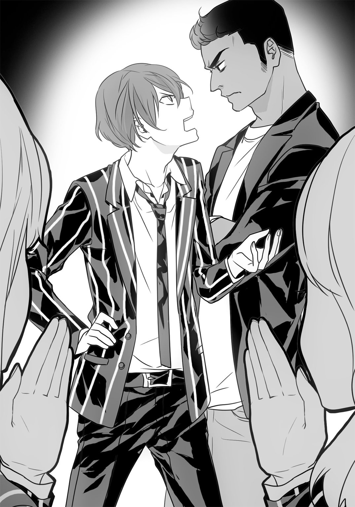
会話をするため、流壱とリックは身体を近づけていた。身長差があるので、流壱が見上げる感じで顔を接近する恰好になっている。
女子たちがひそひそと、あるいはあからさまに話をし出した。
「やだー、あの二人デキてるっぽい」
「付き合ってんじゃない？」
リックが振り返り、にやっとした。
「偏見はいけまセーン。同性愛は正当な権利デース」
女子はまたきゃーきゃー言い出す。流壱はますます口をへの字にした。
（なあ、もう式解くの止めていいか）
（最後まで解かないと勉強にならん。あともう一つ。あいつ、日本に入国したぞ）
「なんだって!?」
流壱は我知らず大声を出していた。教室がまた沸いたが、それにも気づかないほど。
頭の中でリックの台詞を反芻する。あえてなにも喋らず、気を落ち着け、呼吸を整えることに集中する。
チョークを動かす指を止める。リックも急かさずに待ってくれた。
ようやく流壱は言った。
（......いつ？）
（朝だ。顔認識装置が探知したのを俺が確認した。成田を出て新空港自動車道に乗り、東関東自動車道に入ったあたりでロスト。以後は不明）
（目的は......いや、言わなくていい）
リックもその言葉を予想していたのか、口を挟まなかった。
流壱は小声で漏らす。
（グロームの言った通りか。意味もなく日本に来たわけじゃねえよなあ）
リックもうなずく。
（こっちの想定よりずいぶん早い。今度の取り引きに関わるかもしれない）
（くそ、転校生だけならまだマシだった。居場所を摑めるか）
（時間がかかる。美原に頼んだ方が早いだろう）
（借りは作りたくねえなあ）
彼はぼやいた。
リックは黒板を眺めていた。
「オーウ。信崎クンは二行ごとにミスをする癖がありますねエ」
（もっとミスしなくなるような、気分のよくなる情報くれ）
（転校生はどうする。確保してもいいぞ）
（彼女は......）
続けて言おうとして、流壱は口を閉じた。
首筋がぞわぞわする。今まで父親と世界中を回らされて、否応なしに鍛えられた感覚。これらが一瞬のうちに駆け抜ける。
リックを見る。彼も同じだったらしく、直前までのにやけた表情は微塵もない。
（......伏せろ！）
二人は即座に身を投げ出す。直後、大きな音がした。
教室のガラスが割れた。女子生徒のきゃーきゃー言う悲鳴が重なる。
流壱とリックは教卓の後ろに身を隠した。流壱はともかく、リックは身体を隠しきれていない。
（狭い。これだから日本の家屋は）
（アメリカだって似たようなもんだろ！）
流壱は顔を出して素早く引っ込めた。リックが囁く。
（スナイパーか？）
（さあな。俺のとこからじゃなにも見えない。そっちは？）
リックも反対側から顔を出す。
（逆光でよく見えんが......ちょうどお前の席のところのガラスだな。完全に割れている。射撃音はしない。距離は離れていて、しかもサイレンサーつけてるな）
（外から狙われたのか。俺の学校に無断で侵入しやがって）
（......もう攻撃はないな）
確かにあの一回だけで、他のガラスが割れることも、銃弾が撃ち込まれることもなかった。
教室内は早くも落ち着きを取り戻しており、くすくすと笑い声がしている。
「せんせー、ガラスくらいで慌てすぎー」
「信崎君ってこんなに臆病だったの？」
流壱は憮然としながら、リックは笑いながら立ち上がった。
「いやー、驚きましたネ。いいですか、アメリカではこうやって危険に対処するのデース」
おどけた感じでダイブする仕草。
「信崎クンはそのへんまだまだデース」
教室がどっと沸いた。
流壱はガラスが割れたところを見ていた。細かい破片が自分の机に散らばっている。掃除しないと怪我をしそうだ。
彼はチョークを置くと、小走りに自分の席まで戻る。菜菜瀬に訊いた。
「なんでこの窓割れたんだ？」
「分かんないよ」
彼女は肩をすくめている。
「いきなり割れたんだもん」
割れたガラスの向こうにはやや盛り上がった芝生が見える。何本かの立木もあり、休み時間に生徒がくつろげるようになっていた。
目を凝らしてみたが、そこにスナイパーがいるかどうかはうかがい知れない。いたとしても、いつまでも同じ場所に留まっているほど間抜けではないだろう。
背後を振り返る。反対側の壁に穴が開いていた。そこも貫通して弾は廊下に出たようだ。すぐ近くに座っているクラスメートが首を傾げながら穴を触っていた。ライフル弾が貫通した跡だとは夢にも思わないだろう。
ふと視線をずらす。マイがこちらをじっと見つめていた。流壱と、菜菜瀬のことを。
その視線は冷たく、優しさというものが見受けられない。
菜菜瀬が流壱をつつく。
「信崎君見られてるよ。転校生に気に入られてるんじゃない？」
「なに言ってやがる」
黒板ではリックが「ここもここも間違ってますネー」と容赦なく×をつけている。流壱は無視すると、教室後ろにある掃除用具入れに近づいた。
ほうきとちりとりを取り出そうとする。と、その手が押さえられた。
「......私が」
マイだった。さきほどと同じく温かみのない目つきだったが、悪意は感じられない。
「なんで」
流壱の質問にマイは。
「いいから」
とだけ答える。ほうきを手に取ると、黙々とガラスの破片を片付けた。
また菜菜瀬が言ってくる。
「ほら。気に入られている」
「かもな」
実は掃除している間、マイの視線は流壱と菜菜瀬の間を常に往復していた。二人はそのことに気づいていなかった。
○
授業が終わり、リックは「バイバーイ、また」と出ていった。女子生徒が何人かついていく。きっとなにか理由をつけて、話をするつもりなのだろう。
割れた窓ガラスにはとりあえずの補修としてボール紙が貼られた。この作業までマイがやってくれた。流壱はぼんやりと、「ガラス代くらいの予算は出していたよな」と考えていた。
休み時間になっても、リックの人気は終わらなかった。ずっと女子生徒に囲まれており、リックも語尾のおかしな日本語で応じていて、笑い声が上がっている。早くも荷堂学院の人気教師になりそうだ。
俺の学校なのにと呟きながら、外に出る。
休み時間なので、外の芝生やベンチに生徒たちが座り、談笑していた。じゃれ合って転がり回っているのもいる。
少しだけその光景を見つめると、離れた場所に歩いて行く。
時間を確認。今はまだ休み時間内だが、次の授業は自主的に休むことになりそうだ。恐らく時間がかかる。
敷地の外れに来た。三角屋根のあまり大きくない建物があった。レンガを積み上げているように見えるがコンクリート製で、くすんだ色合いのためか周囲に溶けこんでいる。
両開きの扉を開けて中に入る。
天井は非常に高く、声がよく反響しそうだ。室内は長椅子がいくつかならんでいた。奥は祭壇のようになっており、壁に掛かっているのは十字架。
外観といい内装といい、壁際には懺悔室みたいな小部屋まであって、ここは教会そのものだった。
ただし、室内の真ん真ん中で、仰向けになって寝ている女性を除けばの話。
長椅子をベッド代わりにしている女性は二十代半ばくらいで、茶色く染めた髪は長く、垂れている。寝顔を見るだけでも綺麗だと分かり、胸のあたりも信じられないくらい盛り上がっていた。
その女性は白衣を着ていた。その恰好で寝ているのだ。流壱は近づくと、身体を揺さぶった。
女性は身動きもしない。何度か同じことをして、ようやく寝返りをうった。
「先生、起きてくれ」
「んにゃ......？」
口をもごもごさせると、女性はうっすらと目を開ける。
「だあれ、先生の昼寝を邪魔する悪い子はー」
とろんとした目つきだった。声もなにやら甘ったるい。男子生徒には存在そのものが毒だ。
彼女は身体を起こすと大きく伸びをする。そして目を擦った。
にっこりとする。垂れ目気味で、抱擁感のある色香を放っていた。
「あら流壱君。おはよう」
「いつまで寝ているつもりなんだ」
「先生に会いに来たの？ 寝てる先生になにかするつもりだった？ いやらしいこと？ いくら若いからって、そういうことばかり考えてちゃ駄目よ」
女性は喋りながら身体をくねらせる。大きな胸がゆさゆさ揺れた。
流壱は極めて無表情に言った。
「こんなところで寝るなよ。罰が当たるぞ」
彼女は口を尖らせた。
「つまんなーい。先生の性的アピールって足らない？」
「神様が見てるんじゃねえの」
「あら。ここは教会じゃないわよ。あのバッテンはただのオブジェなの。もし信仰心を試したければ、いやらしいことをした方がいいわよ。きっと神様だって覗きに来るから」
「せめて養護教諭らしくしろよ」
「養護教諭の寝顔が見られるわよ」
「なんで俺はあんたに給料払ってんだろうな」
彼は憮然として答えた。
この建物は教会ではなかった。十字架がかけられているが、カトリックでもプロテスタントでも正教会でもない。
初期の荷堂学院はキリスト教系のため、礼拝のための施設が併設されていた。だがその風習も、教育現場に特定宗教を持ち込むのはいかがなものかという意見と共に廃れ、今は「一応」キリスト教系となっているにすぎない。
この建物自体は湾岸部に移転したときに、教会として使うときのために建てられた。だが結局使われることなく、むしろ保健室兼カウンセリングのための施設として使用されるようになっていた。
この女性は養護教諭兼カウンセラーである。名を美原冬香という。
冬香は裸足のままテーブルから下りた。
「相談事なの？ 有料よ。先生のことをもっともっと大事にしてくれたら割引するわ」
「学校から給料払ってるだろ」
「だって最近は男子生徒も女子生徒も来てくれないんだもの。こないだ一年の男の子にちょっと谷間を見せたらね、彼女だって女子生徒が飛んできて、ビッチだの淫乱だのって罵ったわ。先生はいつだって生徒のことだけを考えているのに、とっても悲しい」
目頭を押さえている。わざとらしい手つきだと流壱は考えていた。
「その女子はどうしたんだ？」
「ビッチって噂を流されたら大変だから、お薬入れたコーヒー飲ませて桟橋に寝かせたの。数時間分の記憶が飛んだはずだから、大丈夫よ」
「そういや桟橋で風邪ひいて肺炎になりかけた生徒がいたって聞いたが、あんたの仕業か」
「その子の治療も先生がしたのよ。我ながら生徒想いね」
まったく悪びれることなく、冬香は喋っていた。
この女性は養護教諭だが医師の資格も持っている。履歴書では二十代半ばだが、実はもっと上という噂もある。
だが流壱が彼女をここに置いているのは、医者だからではない。
彼は長椅子に腰かけた。
「肝心の仕事だ。転校生の情報は？」
冬香は直接答えたりせず、壁際、十字架の下あたりをごそごそやると、紙製のファイルを取り出した。流壱に渡す。
「はい、これ」
彼はファイルを開く。そこには少女の顔写真と氏名、身体的特徴、各地の目撃情報などが載っていた。
用紙をめくり、ざっと目を通す。冬香はにこにこしていた。
「ちょっとしたものでしょ」
「大口叩くだけのことはあるな」
「あん。もっと褒めて褒めて」
冬香は身体をくねらせていた。彼女の本職は医者でもカウンセラーでもない。情報屋なのだ。ふわふわした喋り方とは裏腹に、腕前はかなりのもの。
かつては大手商社の調査部にいたが、ささいな事件をきっかけに退社。フリーの情報屋となった。中東と東南アジアでの紛争などに関わったあとは日本に戻り、流壱と契約を結んで働いている。
あくまでフリーであるが、荷堂学院内に居を構えていることもあって、実質流壱の専属同然になっていた。
彼女には転校生の詳しい情報を調査させていた。簡単なことならリックでも分かるが、短時間である程度の量となると、やはり冬香の右に出るものはいない。
ひと目見て、彼は思わず言った。
「あいつ、やっぱり殺し屋だったか」
「そうねー。でも信崎君なら雰囲気で分かったんじゃない？」
「確証はなかったんだ」
流壱は資料の経歴の部分をじっくり読んでいた。
「あいつ、南米チリ生まれか......東南アジアじゃなかったんだな。四歳の時にアル中の父親を刺して家出。父親の親戚に国家憲兵がいたためボリビアに逃亡。現地のコカインマフィアに捕まって殺し屋としての訓練を受ける。チキトス市で敵対マフィアのボスを愛人ごと爆薬で吹っ飛ばしたのがはじめての起こした事件。その後は幹部の護衛兼殺し屋として東南アジアに派遣、銀行と警察署合計四か所を爆破した容疑が掛けられている......」
「発覚してない犯行も結構あるわよ。本業は発破屋。爆発物が専門よ。マフィアが失職した軍人を雇っていたみたいで、教え込まれたのねー」
「だろうな」
書面をめくる。続けて読んだ。
「以後の足取りは不確定だが、半年前にショッピングモールを半壊させた爆発事件の容疑者として国際指名手配されている......」
写真と名前を見比べ、流壱はファイルから顔を上げた。
「結構前の写真じゃないか。あとあだ名がヤク中ってなんだこりゃ。薬やってんのか」
「戦闘になると見境なく破壊しようとするから、ヤク中なのねー」
「なんでそんな物騒なのがうちの学校に転校してくるんだ」
「それは流壱君があちこちで恨みを買ってるから」
と冬香は笑みを崩さずに言った。
「善良な生徒の俺が？」
「まあ、武器を扱ってる高校生が善良だなんて」
先生は悲しいわと冬香は目頭を押さえる。流壱は無視して、またファイルに目を落とした。
最近の項目をじっと眺める。
「半年前から足取りが摑みづらいってのは、地下に潜っていたんだろうな」
「そうでもないみたいよー」
冬香は別の、今度はもっと薄いファイルを取り出して渡した。
流壱はちらりと見る。
「これ、ボリビア特別治安部の報告書じゃねえか」
「そうよ」
「原本に見えるんだが」
「お友達にもらったのー」
彼女はにこにこしながら答えるが、「お友達」からどうやって入手したかは答えなかった。
流壱はさきほどより集中して報告書を読む。コカインマフィアに潜入させた捜査官の報告のようだ。書面はスペイン語で記載されており、読むのに時間がかかった。
「......なるほどね」
「どうして転校してきたか、分かるでしょう」
「納得したよ」
「どうする？ 先生が処理を請け負ってもいいけど、特別料金もらうわよー」
「こっちでやる。からかわれたんだから、礼をしてやらねえと」
彼はファイルを閉じる。
「あと、俺は授業中に狙撃された」
「まあ狙撃なんて。大丈夫？ 先生が治療したほうがいい？」
「いらない。俺の席の窓ガラスが割れた。座っていたら頭が吹っ飛んでいたところだ」
「でもこの娘じゃなさそうね」
「授業中だったからな。別の誰かだ」
「大変ねー」
あまり大変ではなさそうな口調で言う。もっとも流壱自身もたいしたことだとは思っていない。
「学校のセキュリティは先生の管轄じゃないから、なにもしないわよ」
「金がもったいないから、そこまで頼まない」
「それだけ落ち着いているのは、犯人は分かってるし、たいしたことじゃないって考えているのねー」
「まあな」
彼は認めた。ガラスの破片を見たときからおおよその見当はついている。
「それより訊きたいことがあるんだ」
「なあに」
「あいつが日本に入国した」
流壱の真剣な口調に、冬香ははじめて驚いたような顔になった。
「あらー。念のために聞くけど、司麻のことー？」
「ああ」
彼は首肯する。
「弟だ」
司麻。その人物こそが流壱が追い、あるいは追われている人物。そして生涯の敵だった。
フルネームは尾琴司麻。流壱より若干背は低く、顔立ちはずっと幼く、透明感を思わせる美形だ。話術が巧みで、百戦錬磨の弁護士すらころりと騙されてしまう少年。神出鬼没であり、流壱の行く先々に現れては消える。
なにより司麻は、流壱と同じ商売をしていた。
弟であり武器商人。兄と違うところは目的が回収ではなく、あちこちに売りさばく正真正銘死の商人ということだった。
父親がはじめた商売を流壱は終わらそうとしているが、司麻は違った。もっと拡大して、世界中に販路を広げるつもりなのだ。全ての流通を牛耳り、武器を自分がコントロールする。そのため民間軍事会社すら所有していた。
邪魔するものなら、それが道に落ちた小石だろうと司麻は排除する。小石ならどかすだけだが人間なら殺す。外見はなんの罪もなさそうな少年なだけに、行為とのギャップが強烈だった。
ある意味父親の正当な後継者だ。流壱と衝突するのは当然でもある。
流壱は固い口調を崩さずに言う。
「成田から高速に乗るまではリックが補捉した。あとが分からん」
「だから先生のところに来たのねー」
彼女は相変わらずふわふわした表情だが、多少眉根を寄せて思案している。若干愁いの帯びた顔になった。
「そうねー。都内全部と関東地方の主要な監視カメラ映像を入手して顔認識にかける必要があるから、費用と時間がそれなりに......」
「おい」
流壱が手を振って台詞を遮る。
「いくら使う気だ」
「金に糸目をつけるのー？」
「いや」
「じゃ、色んな伝手を使って、たくさん調べちゃうわ。でもね」
冬香はためらいがちに言った。
「相手はあの司麻よ。姿を消すことなんか誰よりも得意。先生の網にも引っかからないかもねえ」
この情報社会で、流壱の弟は自らの存在を消している。必要なときに限って姿を見せていた。
入国したということは、日本国内に用があるのだろう。
「目的は俺だろうな」
「兄想いの弟ね」
「よしてくれ。あれだけ衝突したんだ。憎んでくれた方がずっとましだ」
「先生は憎んでも憎みきれない兄弟愛って好きよ」
「俺は好きじゃない」
流壱は憮然として答える。
彼と弟の間には埋められないほどの溝がある。単なる確執というには大きく、性格の違いというにはあまりに深い。
二人は世界中で衝突を繰り返していた。中米。北アフリカ。寒いところ暑いところ。都会から田舎まで。兄弟喧嘩の枠を遙かに超えていた。
その相手、司麻が日本上陸している。流壱が狙いなのは明らかだった。
冬香は「じゃあ調査に入るわね」と言うと、鼻唄を歌いながら奥へ引っ込んでいった。そこには彼女が決して他人を入れないデータルームがある。
流壱は十字架を一瞥すると黙って建物を出た。
そろそろ授業が終わるころ教室へと戻る。教師を含めた全員が、彼がいないことに慣れきっていて、文句はどこからも出なかった。
残り少ない授業の間、彼はずっと転校生のことを考えていた。
爆弾のスペシャリストでマフィアの手先。最後の犯行から時がたっているが、荷堂学院に現れた。狙いはまあ分かっている。
だとしたら問題は対処だ。さっさと確保し、それこそ「処理」を冬香に任せてもいいが、どうせならもっと効果的にやりたい。
問題は数学の授業中に発生した狙撃である。転校生も銃を使うだろうが、発破屋がわざわざ狙撃をするとも思えないし、その時間は同じ教室にいた。冬香にも言ったが、別の誰かである。
司麻のことが思い浮かんだ。
弟の仕業なのだろうか。
考えているうちに授業は終了した。
次の休み時間、また菜菜瀬が話しかけてきた。
「転校生にお客さんに新しい先生だってさ。今日は凄いねえ」
「窓も割れたよ」
「楽しくない？」
「悪夢なんじゃねえの。最悪もいいところだ。俺の学校はこれからどうなる」
「あは。信崎君って経営者みたい」
流壱は答えない。ただの軽口なので、菜菜瀬も答えをうながさなかった。
隣の席にマイはいない。用事なのか席を外していた。ぽつんとギターケースだけが置かれている。
菜菜瀬がそれに目をやった。
「なに入ってるんだろうね」
「生理用品だろ」
「信崎君最低。開けてみよっか」
「やめとけよ」
「いいじゃん。ギターじゃないかもしれない」
「ギブソンだかギブアンドテイクだかの高いやつだったらどうするんだよ。傷つけたら怒られるぞ」
「可愛い女の子の怒った顔って見たーい」
菜菜瀬はギターケースに近寄ると、蓋の留め金を外した。
「さてさてなにが......」
突然、ばたんと音がして蓋が閉まった。
いつの間にかマイが立っていた。彼女はギターケースの蓋を手で押さえていた。
「......なにをしてる」
冷たさの入り交じった声音で、菜菜瀬に言う。怒鳴ってはいないが、それだけに冷酷な恐ろしさがあった。
菜菜瀬はたじろいでいた。
「え......えと、どんなギターなのかなって」
「勝手に見るな」
「ご、ごめんなさい......興味があっただけだから......」
マイは菜菜瀬を見つめながら言う。
「ただのギター。弦は六本。ベースじゃない。中古で買った安物。これでいい？」
「うん......」
マイはギターケースを立てかけてから椅子に座る。
「黙って開けるな」
それから続けた。
「訊かれれば、教える」
そう告げると、彼女は無言になった。
菜菜瀬はほっと胸を撫で下ろして、自分の席についた。
「あー怖かった」
「だからやめとけって言ったじゃねえか」
と流壱。菜菜瀬は口を尖らせた。
「なによー。少しは助けてくれてもいいじゃん」
「あの娘が正しいよ」
彼は言ってから、声を小さくした。
「ギターの中、見えたか？」
「うーん......ちょっとだけ」
菜菜瀬も同じように声を潜める。
「なんか黒っぽいものが入ってたよ。ギターじゃないと思うんだけど......」
「ふーん」
流壱はそう言ってから、窓越しに外を見た。
校庭の端でリックが女子生徒たちに囲まれている。そろそろ授業がはじまるというのに、楽しそうだ。
急に思い出したように、菜菜瀬は喋った。
「そうそう、楽蘭高校からお客さんが来てるって話だけど」
「聞いた。関西の学校だろ。わざわざうちに来ることはねえのに」
「よく知ってるね。なんか視察みたいだよ。ほら、うちの高校って敷地広いし海に面してるじゃん。なかなかないから、見学したいんじゃないかな」
水産関係の学校でもないのに港を所有しているのは確かに珍しい。しかも敷地内だ。
「生徒会長が見に来てるんだって。先生はいないみたいだけど」
「一人で来たのか」
相槌を打ちながら、流壱は割れた窓ガラスの跡を見て、視線を戻す。
スピーカーが呼び出し音を奏でた。
「二年四組の信崎流壱君、二年四組の信崎流壱君。お客様です。会議室まで来てください。繰り返します......」
「俺かよ」
流壱の呟きに、何故か嬉しそうに菜菜瀬が応じた。
「おー、呼び出しだ。きっと楽蘭高校の会長だよ」
「そんなわけないだろう」
「その方が面白いじゃん」
馬鹿馬鹿しいと言いながら、彼は教室を出た。
実のところ、菜菜瀬の台詞は当たっていた。そして流壱自身も、馬鹿馬鹿しいとは思っていなかった。この呼び出しは、まさに楽蘭高校生徒会長からのものだったのである。
会議室は校舎の一番上の階にある。この学校は生徒数に比べて校舎が大きいため、使われていない部屋がいくつもあった。そのうちの一つを「会議室」と称しているのである。
扉を開ける。室内の奥に見慣れない制服を着た女子生徒がいた。
椅子に座って、数名の荷堂学院の女子と楽しそうに談笑していた。
荷堂学院の生徒たちは生徒会所属だ。案内を頼まれたのだろう。よほど話が面白いのか、しきりと笑っている。中にはうっすらと頰を染めているものもいた。
確かに見慣れない女子生徒は話し上手で、喋り方もそつがない。お笑い芸人になっても成功しそうな雰囲気であった。
その女子生徒は慌てて立ち上がった。
「あ、すみません。呼び出しに応じていただいて、恐縮です」
申し訳なさそうな表情で、女子生徒は頭を下げた。
「楽蘭高校生徒会長の野潟水希といいます。お邪魔しています。信崎流壱さんですよね」
「ああ」
と流壱は返事をする。
「座ってもいいかな」
「ええ、もちろん。ここはそちらの学校です」
水希は椅子を勧める仕草をした。
流壱が座ると女子生徒たちは立ち上がった。
「じゃ、あたしたちはこれで。またねー、水希さん」
「楽しかったです」
「あたしたちも」
女子生徒たちは手を振りながら会議室を出て行った。
扉が閉められる。同時に、水希は机の上に足を乗せた。いかにもだるそうに肩を揉む。
直前までとは態度が豹変していた。それだけではなく、雰囲気まで一変していた。
「......ったく、生徒会長ってのは肩が凝っていけんわ。品行方正じゃなきゃ会長になれないってのは、誰が決めたんよ」
「いい年して高校生のふりか」
「なにかと便利なんよ。決まってるやろ」
彼女は制服の内側に手をやると、マールボロを取り出した。髑髏が彫られたオイルライターで火を点ける。
部屋の中心に向けて紫煙を吐き出す。
流壱は煙を払わず、流れるに任せつつ言った。
「高校生が学校で吸うな」
「ああ？ なんでうちがあんたに指図されなあかんの」
水希がぎろりと睨む。直前までの品があって人当たりのいい高校生の姿は微塵もなく、粗暴で荒っぽい姿が剝き出しになっていた。
「うちがわざわざ東京まで出向いてきたんよ。タバコくらい好きに吸わせんのが当然やないの。ドアホ」
今度はわざとらしく、遠くまで届くよう吐き出す。
視界が紫色になり、流壱は顔をしかめた。
流壱は楽蘭高校の野潟水希が好きではない。その「好きではない」というのも控えめな表現で、嫌っていると言ってよかった。
彼女は中国地方を根城にした組織のドンである。銀行家の父親が愛人に産ませた子供で、幼い頃から「勉強さえ出来ればあとはなにをしてもいい」と言い聞かせてきた結果、本当に勉強以外は最低の人格になった。家は呆れるくらいの金持ちだったのでやりたい放題した結果、姿形は女子高生でも中身はコルシカマフィアみたいな人間ができあがったのである。
水希は非合法な社会との繫がりが強く、ヤクザの組長にも取り入った。幼女趣味の組長は彼女と関係を持ってから数か月後に薬物中毒で寝たきりとなり、組は水希が取り仕切ることになった。
流壱との出会いは、武器調達のため父親と接触してきたときが最初。父親はためらわずに武器を大量に売った。父親が死んでからは距離をなるべく置くようにしている。
それでもこうして付き合わなければならないのは、彼女が最近、武器の仲介もはじめたからだ。リックから連絡をもらったＣ４爆薬と対空戦車の取り引き相手も、水希なのである。
流壱は表情を変えずに言った。
「いきなりやってきて、なんの用だ」
「なにもクソも、うちはあんたの取り引き先やで。顔を見に来てなにが悪いの」
「電話で済む話だ」
「他にも聞きたいことがあったんよ。小樽でグロームをバラしたりせんかった？」
「殺しちゃいない。あいつが警察に捕まっただけだ」
「おかげでこっちは大損害。ウラジオからメスが入ってこなくなった」
水希は両手を大きく広げた。メスとはメタンフェタミン系覚醒剤の俗称である。この女のメインの商売は薬である。むろん、麻薬関係。
「どこのアホが商売の邪魔しおったと調べたら、ここに行き着きよった」
「取り引きを裏切ったグロームが悪い」
「おかげでうちは大損こいたんよ！」
いきなり叫び出した。瞳が時々よどみ、ぎらつく。こいつ薬をやってるなと流壱は感じた。
「グロームの後釜にはあいつの兄弟が座った。そして値を倍に吊り上げた！ うちに馬鹿高いブツを買わせよって！ そんなアホらしい取り引きやっとれるか！」
机を叩いた水希の力で、天板が空気ごと振動した。
「どうしてくれんの？」
「心を入れ替えて薬から手を引いたらどうだ」
「あん？ 死の商人の子供に偉そうなこと言われとうないわ。あんたの父親の武器で、どれだけの人が死んでると思うとんの」
「............」
流壱は反論しない。
「うちの言いたいことはこう。損した分を補塡してもらう。クスリは金になる分、安くはすまん」
「俺は麻薬は扱わない。知ってるだろう。そういうのを心の底から嫌ってるのが一人いるんでね」
「うちになんの関係がある」
水希の唇が歪んだ。
「なにもクスリそのものを渡せと言ってるんやない。代わりに、ミラン２とあんたの販売ルートを半分渡してもらうわ」
「なんだと？」
思わず流壱は聞き返した。
「どうしてそんなことをする必要がある。だいたい俺のルートは販売用じゃねえ。回収用だ」
「あんたの父親がやってたときは販売ルートだったはず。うちが元に戻したるわ」
「馬鹿言え。断る」
「おや、そんなこと言ってええの？ あんたに売る予定のＣ４とツングースカな、司麻に売ってもええんよ？」
流壱の顔が硬直する。
「おい。そいつは......」
「司麻なら喜んで買うし、クスリも出す。先にあんたに持ちかけたのは、ただの気まぐれや。うちの気が変わってもええんか？」
水希はゲラゲラと笑った。
流壱は押し黙る。この女なら本当に司麻へ売るだろう。司麻はどこかへ転売するか部下に渡す。そして世界のある国で使用される。
武器商人としては正しい。だが、流壱の主義ではなかった。
彼女はなおも笑っていた。
「うちは決めた。あんたに拒否はできん。うちと、うちの組織のために、販売ルートを渡してもらう」
「それでも拒否したら？」
「ブツは司麻のもの。それとな、さっきの授業中、あんたの席の窓ガラスが割れたやろ。ああいう事故がいつ起こるか分からん」
流壱は目を細める。
「お前がやったのか」
「器用やろ」
「俺は座っていなかった」
「わざと外したんよ。金をもらう前に死んだら困るやないの」
と水希は言った。
こいつの仕業だったかと流壱は思った。水希は頻繁にアメリカに行っていて、銃の扱いも習熟している。暇な時はネバダ砂漠で延々サソリ相手に遠距離射撃を繰り返していたらしい。
「ま、ここで死んでもらう手もあるんやけどな」
流壱の腕がぴくりと動く。水希が手を振る。
「やめとき。あんたが学校で銃を携帯しないのは調べがついとる。だけどうちはそうやない。この制服、結構隠す場所に困らないんよ」
彼女はちらっと制服の前を開ける。ホルスターと自動拳銃が見えた。
「あんたは逃げ道もないんよ」
リックか誰か呼ぶか、と流壱は考えた。だが水希はそんなことくらい考慮しているだろう。会議室に来る前に引き金を引けばいいのだから。このシーンをモニターしていないかとも思ったが、ここに監視カメラはない。
「答えがないのはイエスでええんやな」
水希は勝ち誇っていた。
「信崎の子供もたいしたことないな。販売ルートの残り半分も、うちが引き取ってもええんよ」
「............」
「怖い顔せんといて」
水希は身体を乗り出すと顔を近づけてきた。
「うちがここに来た時点で、あんたはもう終わっとるんよ」
「......Ｃ４とツングースカは？」
「販売ルートをくれたら引き渡すわ。それまで大事に保管しとく」
「一応言っておくぞ」
流壱は彼女を真正面から見据えて言った。
「司麻とまともに取り引きしようなんてことは止めろ。お前がやけどをするだけだ」
「はん。そんなことあるわけないやん」
水希はにやにやしながら告げると、立ち上がる。そして勝ち誇ったかのように会議室から出て行った。
流壱はしばらく座ったままだったが、スマートフォンを取り出して、リックに電話をかける。
前置き抜きで言った。
「リック、だから俺はあの女が嫌いなんだ。いきなり脅迫してきやがった」
彼女が出した条件を早口で説明する。
電話口でリックは笑っていた。
（よくやるな。あいつはこっちの財布に手を突っ込もうって腹か）
「だからあいつは小者なんだ」
（俺のボスを脅すとはまったくいい度胸だ。彼女に露見したらただじゃすまないぞ）
「知らせないでくれ。野潟との取り引きはまだ終わっちゃいない」
（分かったよ）
流壱は電話を切った。
○
水希は荷堂学院の敷地内を悠々と闊歩していた。
外見は清楚で礼儀正しいお嬢様だ。だから声をかけられるたびに「ごきげんよう」だの「失礼いたします」だと返事をしている。しかも立ち止まって腰を折る慇懃さ。
だが胸の内はそうではない。
これが機嫌の悪いときなら、話しかけられただけで物陰に引きずり込んでシメる。あるいは手下の強面に伝えてどこかへとさらう。そうやって憂さを晴らしてきた。
しかし今は上機嫌だ。なので荷堂学院の生徒たちも気にならなかった。
正門近く。水希はようやく一人きりになり、薄笑いを浮かべた。
「うふ......うふふふふ。あっはっはっは」
水希はいかにも楽しそうに笑っていた。
「ひーっひ、信崎流壱もたいしたことない男やな。うちの脅しに手も足も出んか」
彼女は関東への進出を考えている。そのために目をつけたのが流壱だ。彼の財力と荷堂学院という場所は、隠れ蓑とするのにうってつけだ。今回を足がかりに手下を転校させ、いずれは自分も居を移す。そうすれば勢力の拡大も時間の問題。程なくして、熟れた果実のように転がり落ちてくるであろう。
「グロームがパクられて損した分、たっぷり払ってもらわんと」
未来を思い描くだけで、自然と笑みがこみ上げてくる。
外には車が止めてある。運転手は手なずけたチンピラで、待てと言えば何日でもその場にいる男だ。見てくれもよく、水希の性癖の相手ともなっている。
今晩のことを想像し、彼女はまた笑みを浮かべた。
と、足下が鳴った。
「......？」
なにかが弾けていた。木の実でも落ちたのかと思ったが、周囲にそんな樹木はない。
また弾ける。とどこか金属っぽい音色だった。
「なんや......？」
次の瞬間、空気が震えた。
耳元をなにかがかすめたのだ。音速を超える物体が通過をし、舗装された地面にぶつかっている。先ほどからの音の正体がこれだ。
彼女は即座に思い当たった。
「う、撃たれている!?」
ライフル弾による狙撃。彼女自身が銃を使うため、遠くからの射撃だと分かった。
振り返る。遠くに校舎があるが、人影はない。どこかに隠れているのだろうか。判明しているのは、こっちからは見えないが相手からは見えているということだ。
「うちを舐める気か！」
服の内側から自動拳銃を抜いた。ロシア製のＭＰ４４３。女性に似あわぬごつい銃。だが相手が見えなければどうしようもない。
「どこや、出てこい！」
再び足下が鳴った。相手がわざと外していることを、彼女は理解した。
「ひっ......この卑怯者......！」
罵り声に反応するかのように弾が撃ち込まれる。二発、三発。決して姿を現さない狙撃者は、恐怖のみを煽っていく。
四発目が着弾したときに、緊張の糸が切れた。
「く、くそがっ......！」
水希は駆け出した。転がるように、大急ぎで正門を抜ける。道路脇に止めてあるベントレー・ミュルザンヌまで走った。
後部座席のドアを開けようとするが、手汗で滑る。なんとか開け、中に置いてあるコルト・ファイアアームズ社製Ｍ４Ａ１カービンを鷲づかみにした。
慌しく構える。血走った目で周囲を見回した。
「どこや！ どこにおるんや！」
返事はない。代わりに道路脇の鉄柵が金属音を奏でる。
「卑怯者め......！」
水希は見つけるのを諦め、後部座席に乗り込んだ。運転手が叫ぶ。
「ボス......！」
「アホ！ さっさと走らせんか！」
黒塗りのベントレー・ミュルザンヌは、タイヤをきしませながら急発進した。
「止まるんやない！」
荷堂学院を遠ざかり羽田空港を目指す。いくつかあった信号は赤だろうと通過した。
運転手はしばしばアクセルを踏み、頻繁に他の車を追い抜いていた。追い越されたドライバーは腹立たしくクラクションを鳴らそうとするも、全速で飛ばしている車体はそんな暇を与えなかった。
スモークガラスの内側、水希は後部座席に座って震えていた。
「くそ、くそ。うちを舐めくさりよって......」
流壱の部下の仕業だろうか。だが学校の、しかも昼間に銃を持ち出すことは滅多にないはずだ。他の人間の仕業だろうか。
ふと、彼女の頭に流壱の言葉が甦ってきた。司麻のこと。
「......そんなわけはない。うちと手を組むことはあっても、敵には回らん！」
水希はわざわざ口に出して否定した。
「尾琴司麻がなんぼのもんよ。信崎流壱と同じひょろい間抜けやないの。こんな派手なことできるわけはない」
そう言いながらも、どこかで否定しきれない感情が、寒気と共にこみ上げてきた。
彼女は急いで頭を振ると、運転席のシートを蹴飛ばした。
「もっと飛ばすんや！」
運転手は急いでアクセルを踏もうとする。と、その時。
ベントレーの右側に、白塗りの国産車が並んだ。ベントレーがスピードをアップするも、ぴったりと並んで離れない。
水希が目を向ける。白い車の窓が下りた。
「なんや......？」
彼女が見たのは、突き出されたサブマシンガンの銃口だった。
なにかを叫ぶ間もない。
サブマシンガンは９ミリ弾を間断なく吐き出す。ベントレーの窓を粉々にし、運転手を驚倒させる。
銃弾は窓を破壊しただけで、運転手まで殺害をしなかった。そのほとんどが空砲だったらしく、数発が窓を砕いたのみだ。だが驚かすには十分で、運転手はハンドル操作を誤った。
ベントレーは、スピードを出したまま蛇行する。
「きゃーっ!!」
水希はこの時だけ少女にふさわしい悲鳴を上げる。
パニックになり、銃の安全装置を外す。手当たり次第に発砲した。銃弾は車内を飛び交い、愛人兼運転手の頭をトマトみたいに砕いた。
運転する人間のいなくなったベントレーは、縁石に乗り上げた。植え込みを突っ切り、安売り店の立て看板に激突する。また縁石に接触し、ついにひっくり返る。
車は裏返ったまま滑り、街灯にぶつかってようやく止まった。
「う、うう......」
水希はかろうじて意識を保っていた。今や床となった屋根に手をつき、なんとか目を開ける。
「なんなん......なんなんよ！」
這いずって窓から外に脱出しようとする。窓ガラスの破片であちこち傷つけながら、ようやく上半身だけが出た。
じゃりっとガラスを踏みしめる音。
水希は顔を上げる。自分を襲撃した人物がそこにいた。逆光で判別がつかないが、手に持っているＨ＆Ｋ製ＭＰ５Ａ５サブマシンガンだけははっきりと理解できた。
「あんた......なに......」
水希はそれ以上口にすることができない。首筋に薬を打たれて、意識を失った。
第三章
水希との愉快ではないやりとりを終え、流壱は自分のクラスに戻った。
すでに休み時間となっていた。またサボることになったと彼は嘆き、次こそはきちんと出ようと心に決めた。
さすがに次の授業中はなにも起こらなかった。そして授業が終わった直後の休み時間。
トイレから戻ってきた流壱は、首をかしげた。
自分の席がなにやらなんだか不思議な感じがした。トイレに行く前と、どこか違う気がする。はっきりこうだと分かることではないのだが、どこか違和感があるのだ。
流壱はこの手の違和感を何度も覚えたことがある。それはたとえばアフリカや南米の奥地、あるいは戦火が止まないころのバルカン半島で経験したことだ。両親に連れられ、否応なしに経験したあらゆるできごと。
自分の居ない間になにかが起こったのでは......。
彼は静かに呼吸した。それから自らの座席周辺を確認する。
椅子に不自然なところはない。窓ガラスは割れたときに応急措置をしたまま。張られたボール紙とテープも異常なし。
そして机。これがおかしい。わずかだが、斜めになっている。
「なあ、無地目。誰か俺の机をいじったか？」
自分のカバンを漁っていた菜菜瀬が顔を上げた。
「知らない。あたしもちょっと出てたから。信崎君ってそういうの気にするタイプだった？」
「場合による」
爆発物が仕掛けられていたら大変だ。彼は慎重に机の中を覗く。
常に空にしているので、なにも入っていない。はずなのだが、封筒が一通だけ入っていた。
怪訝に思って取り出す。手紙爆弾ではないことは厚みと重さで確認できた。ピンク色で小さめの封筒。
表に「信崎流壱様」と書かれているだけで、ひっくり返しても差出人の名はない。
どん、と背中を叩かれた。
「やったじゃない。ラブレターだね」
にやにやしているのは菜菜瀬だ。いかにも楽しそうだった。
流壱は椅子に座ると、胡散臭そうに封筒を眺める。
「そうか？」
「そうだよ。それ、絶対女の子の字」
「綺麗だけど機械が書いたみたいだ」
「読んでよ」
彼は封筒を開ける。菜菜瀬に見られないよう、注意して目を通した。
「............」
「なに書いてあんの。やっぱ告白？ 信崎君ついに彼女できる？」
「......別に」
流壱は手紙を畳んでポケットにしまった。
菜菜瀬が制服の袖を引っ張った。
「ねえねえ、なんだったの」
「たいしたことない」
「ケチ。教えてよ」
「内緒」
流壱は立ち上がると、教室から出ようとした。
「あっ、ラブレターくれた女の子のとこに行くんだ」
「ちげーよ」
出入り口でマイとすれ違う。マイとは一瞬目が合った。
廊下に出た流壱は、走り出した。
休み時間が終わり、授業開始のチャイムが鳴る。彼は教室に戻ろうとしなかった。むしろこの方が都合がいい。
走りながらスマートフォンを取り出した。
（こちらはガールズアイドル出張所です）
「リック」
（なんだ？ 俺はこれから重要な仕事がある。武道館コンサートのＤＶＤを観て振り付けを覚えるんだ）
「誰かが俺の机に手紙を入れた」
（ラブレターか？）
「無地目にも言われた。次の理科実験室、何年生が使うか知ってるか？」
（一年生だな）
「中止にしてくれ。吹っ飛ばされる」
（なんだと？）
「手紙は爆破予告だった。俺が一人で来なかったら、生徒がばらばらになるとさ。無差別テロだ」
（やめろ。俺か他の奴を連れて行け）
「俺だけで行く。周囲を警戒して、誰もいなかったら来てくれ」
彼は階段を下る。一階の端を目指した。
そこは理科実験室となっている。いわゆる移動教室のためのもので、放課後には部室ともなる。
引き戸を力一杯開けて飛び込んだ。
床に固定された大きめの机が並んでいる。実験に使うガスの栓や電源のソケットが据えられていた。椅子は木製で背もたれのないもの。
ざっと見ても変わったところはない。椅子を片端からひっくり返して裏を見るが、爆発物が仕掛けられてはいなかった。
「流壱！」
突然、大柄な身体が飛び込んでくる。リックだった。
「よし、まだ生きてるな」
「今はな。一年生はどうなってる」
「来させないようにした。言い訳が思いつかなかったから、生物の教師を薬で眠らせたよ。生徒たちは今ごろは自習で喜んでるだろ。爆破予告時間は？」
「書いてなかったが、十年後ってわけじゃあるまい」
手分けをして探す。教卓をひっくり返し、黒板の裏まで見たが仕掛けられていない。
流壱の心に焦りが生じた。狂言という可能性もあるが、彼の勘が否定していた。ここに間違いなくある。様々な経験をした武器商人としての勘だ。
「わざわざ爆破予告とはふざけた野郎だ」
リックが言う。
「以前は予告抜きで爆破していたらしいから、親切になったみたいだぞ」
そう流壱は答えながら、また理科実験室内を見回した。
壁際の棚で目が止まる。
「あっちは？」
「まだだ。全部確認したわけじゃない」
「確認しよう」
壁際には標本棚があって、鉱石や化石などが置かれている。その隣には人体模型もあり、さらに隣は掃除用具入れとなっていた。
標本をチェックしても爆発物らしきものはやはりない。そもそも埃が積もっていて、少しでも動かしたら跡がつくはずだった。
流壱が舌打ちする。
「くそ、ねえぞ」
「流壱、俺はこの学校内のことをよく知らん。なにか変わったことはないか」
「そうだな......」
彼は自分の記憶と照らし合わせた。この場所は授業で使用する。だからどこになにがあるか、かなり覚えていた。今までと違うところはどこだ。
「地球儀がないな」
「なんだって？」
「大きめの地球儀。国のところに穴が空いていて、ピンを刺すと国名を喋り出す」
「それじゃないのか」
地球儀は掃除用具入れのすぐ横に置かれていた。床に直置きで、いかにも最近動かしたような不自然さだった。
流壱は地球儀に飛びついた。手で迂闊に持ち上げないようにしてから確認する。
「コードが......あるな」
スピーカーに繫がっているものか、爆弾のものなのか分からない。
よく観察すると、そのコードは地球儀の台からも伸びていた。たどっていくと、なんと掃除用具入れに続いている。
「なんだこりゃ」
「理由は簡単だぞ」
リックが掃除用具入れを開ける。中から大きなものが転がり出てきた。
人間だった。それも楽蘭高校の制服を着た女子生徒。水希だった。
水希は生きているようだが、目はうつろで、手足を縛られている。そして身体の周囲にはプラスチック爆薬がくくりつけられていた。
「触るなよ。下手なことをすると俺たちもこいつもまとめてドカンだ」
リックはそう言うと、彼女の瞼を指で開いて確認した。
「薬を打たれたか......そろそろ起きそうだな」
水希の瞳は濁っていたが、徐々にはっきりしてきた。やがて目を左右に動かす。
「ここは......し......信崎！」
水希が起き上がろうとする。が、両手足を縛られたままなので、うまくいかなかった。
「よくもやりよったな！ ブチ殺したる！」
「落ち着けよ。俺の仕業じゃねえ。つーかお前の身体に爆弾ついてるんだぞ」
水希の罵声がぴたりと止まった。見る見るうちに顔が青くなる。
「まっ、まさか......」
「よく見ろ。お前も扱ったことあるだろ。下手したらあの行きだぞ」
彼女はきょろきょろしていたが、やがて置かれた立場を自覚する。目尻に涙を浮かべつつあった。
「たっ、助けて......助けて！」
「情けねえ女だ。俺が知ってる女は地雷の上でタップダンスするようなのばっかだぞ」
聞いていたリックが含み笑いをする。流壱は続けた。
「お前を助ける義理はねえが、こっちだってここで爆破させようなんて思ってねえよ。リック、起爆装置はどこか分かるか」
水希の身体にはあるのは爆薬のみだ。他には見あたらない。
リックが答える。
「地球儀だな。コードの先にあるはずだ」
「なんで地球儀に繫がってんだ？」
「爆弾魔のユーモアは理解できない」
流壱は地球儀を観察した。赤道あたりにうっすらと隙間が空いている。
「確かにな。おい水希。お前なんで捕まった？」
水希は涙目で返事をした。
「知らんわ......」
「さっさと答えろ」
「ほんまに知らんのよ！ か、帰る途中で車が襲われたんよ。逃げようとしたら首筋になんか打たれて」
「相手の顔は見たか」
「見とらんよ。逆光やったし、帽子をかぶっとった。あんたの手下やないんか......？」
「こんな面倒くさいことするか」
顔を見せていないのなら、水希に正体を明かすつもりはなかったのだろう。とはいえ、爆弾を使うのだから多分転校生の仕業だ。
問題は、どうして水希をこんな目に遭わせたのかだが、今は考えてもしょうがない。
「リック、バラすもの持ってるか」
「ナイフとペンチくらいだな」
リックが差し出した道具を二つとも受け取る。流壱は地球儀の隙間に、ナイフをゆっくり差し込んだ。
隙間を広げる。どこかでスイッチが入ったのか、「ブラジル連邦共和国です。カナダです。コンゴ民主共和国です......」と地球儀が喋り出した。
「ばっ、爆発する、爆発する！」
「うるせえ、少し黙ってろ」
流壱は水希に言った。
地球儀を覗き込むと、白い粘土のようなものが見えた。
「危ねえ、ここにも仕掛けてやがる。プラスチック爆弾だ」
流壱は喉の奥で唸る。
「下手にバラしたら爆発するんだろうが、ここでやるしかない」
「やったことあるのか」
「イラク帰りの民間軍事会社コントラクターが、解体しているところを見た」
「見ただけか。なんてこった、俺を殺すなよ」
「死んでも謝らねえよ」
リックに窓を全部開けるように言うと、彼は差し込んだナイフをねじった。慎重に地球儀を割っていく。スピーカーから「南アフリカ共和国です。シエラレオネ共和国です。赤道ギニア共和国です......」と流れてくる。
赤道に沿って、二つに割った。コードが千切れないように、そっと置く。
下の半球にプラスチック爆弾が仕掛けられている。上の半球には基板にタイマーと一体化された電源らしき装置。一部が赤く光っているのは、動作確認用のＬＥＤランプだろう。
「いつ爆発するんだ」
リックの質問に爆弾から目を離さず返答する。
「分からん。受信装置はないから遠隔じゃないだろうが、タイマーの液晶ぶっ壊してやがる」
「これだけの量でも教室一つ破壊するのは充分だ。持ち出すか」
「途中で爆発したらもっとたまんねえよ。解体するぞ」
爆薬が爆発するには、信管に電気を流して起爆させる必要がある。タイマーからは色分けされたコードが伸びており、プラスチック爆弾に繫がっていた。信管は地球儀の内側と爆薬に挟まれているようで確認できない。
無理に引っこ抜いたら起爆する可能性がある。コードの切断しかなかった。
「その女と繫がっているコードを切りたくなるが......」
水希を見ながら流壱は呟く。リックもうなずいて言い返した。
「ただじゃすまんな。あんなあからさまにコードが伸びているんだ。まとめて吹き飛ぶのが関の山だ」
「つまり、こっちの地球儀の中を始末するしかないってことか」
二人のやりとりを聞いていた水希が、涙を浮かべながら叫ぶ。
「お願い、助けて！ あんたのルートを寄越せなんてもう言わんから！」
「だから黙ってろ」
流壱は慎重に起爆装置を引っ張る。緑色のコードにペンチを差し込んだ。
「これ、切っても大丈夫だと思うか？」
「さあな」
「よいしょ」
パチン。流壱はあっさりとコードを切断する。
リックが目を丸くしていた。
「おい！ ......止める間もなかったぞ」
「こんなのなに切ったって同じだ」
「あっちのコードは切らないくせにこれかよ。......タイマーは止まったか？」
流壱は注意深く観察する。なにか変化があったようには見えない。赤ランプも光ったままだ。
「まだ動いてるみたいだ」
「もっと切るのか」
ペンチを使おうとした流壱に、リックが釘を刺した。
「頼むからもっと慎重になってくれ」
分かってはいるが、専門家ではないのでこのあたりが限界だ。爆弾処理のやり方を知識として知ってはいても、おこなうのははじめて。
それでも他の人間に任せることはできない。
「リック。外に出てていいぞ」
「逃げるタイミングを逸しましたネ」
「それ、誰の真似なんだよ」
「死ぬかどうかは俺が自分で決めるんだ。悪かったな」
おどけた口調にも少しの真剣さを混ぜて、リックは喋っていた。
流壱は少し笑うと、ペンチでコードを挟む。今度は青。後ろに声をかける。
「やるぞ」
「いけ」
切断。ペンチの音が理科実験室に響く。
なにも起こらない。赤いＬＥＤの光も消えていた。
「危ねえ......成功した」
流壱は床に座り込んだ。リックもほっとしている。
「無茶をするなよ」
「成功したからいいだろ」
彼は水希の身体に巻かれたプラスチック爆薬を外しながら、なんとなく呟く。
「それにしても簡単だったな」
「ああ。爆弾魔が作ったにしちゃあ楽だったな」
とリックが答えた瞬間。
地球儀のスピーカーが音を立てた。
「爆発します。爆発します。15、14、13」
いきなりカウントダウンがはじまった。二人は仰天する。
「流壱、解体したんじゃないのか!?」
「したよ！ なんでいきなり......」
地球儀は「12、11」と数字を減らしていく。流壱はなんとかしようとするが止まる気配がない。
「んな馬鹿な！ どうやって爆発......」
見ると、音声を発しているのは地球儀だが、ＬＥＤが光ってはいない。むしろ壁際にある人体模型の目が点滅していた。
流壱は頭部を指さした。
「あれだ！」
「止められるか!?」
10秒以内に止められればなんとかなるが、可能だろうか。しかも廊下から生徒たちの話し声と足音が伝わってくる。
「中止にしたんじゃないのか!?」
「話が伝わらなかったみてえだぞ！」
生徒たちに近づくなと言わなければならないが、解体にかからなければならない。同時は無理だ。
「野潟、警告して......」
だが水希は立ち上がると、転がりながら廊下に出て反対方向へ走ってしまった。
「あてにならねえな！」
「もう時間がないぞ！」
リックが叫ぶ。
解体している余裕はない。二人は顔を見合わすと同時に駆け出す。理科実験室から廊下に出た。
リックが生徒たちに叫ぶ。
「来るな、伏せろ！」
理科実験室内から声。
「３、２、１、０」
流壱とリックは床にダイブ。口を開けて耳を塞ぐ。爆発を覚悟する。
だが、轟音も爆風もなかった。
「......？」
恐る恐る顔を上げる。変化はなにもなかった。
生徒たちが不思議そうな顔をして「なにかあったんですか？」と訊いている。流壱は「今日の理科は中止だ。やったな」と告げて追い払った。
リックと二人で理科実験室を覗き込む。
人体模型の頭部が砕けていた。吹き飛んだのではなく、単にバラバラになったというだけ。花火ほどの爆発すらなかった。
「不発だったのか......？」
「いや、違うみたいだな」
リックが骸骨を取り上げる。
「砕けたのは床に落としたからだ。起爆装置は動いている。どうも外から信号を送って、起爆を中止したらしい」
「なんでだ？」
「馬鹿にしてるのかもしれない。わざわざ呼び出してこれだ」
リックが渋面を作る。が、流壱は別の考えを抱いていた。
一つめの爆弾を処理させて油断させ、二つめで仕留めるというのはよくある手口だが、結局は爆発させていない。つまり最初の解体は予想の範囲内で、つぎになにかトラブルがあったのだ。
「......一年生がやって来たからか？」
「来ないはずの生徒が来たから爆発させなかったのか。それじゃ無差別テロじゃないだろう」
「なにか理由があるのかもしれねえな」
「なんだと思う」
「さあな。人殺しをためらう爆弾魔なんて、聞いたことねえよ」
流壱はそう言うと、首を振った。
○
理科実験室の騒動は「ガス漏れの疑いあり」と説明し、立ち入り禁止にした。実際に細工をされた恐れがあるため、ガスの栓を点検する必要もあった。電気をつける際、発生するわずかな静電気の火花も危ないということで、校舎の半分ほどは蛍光灯もつけられなくなった。
残された爆弾の処理はリックに任せた。彼は「東京湾の底に捨ててくる」と言って出かけた。入れ替わるようにトラックがやってきて敷地内を慌しく走り回り、理科実験室をブルーシートで覆った。
その後の授業中、流壱はぼんやりマイのことを眺めていた。
授業態度は静かで自ら意見を発するようなことはない。ただし例のギターケースだけは必ず持ち歩いていた。
一度だけ教師が「どうしてそんな大きいものを持っているんだ」と質問したが、
「必要だから」
とマイは返事をし、あとはなにを訊こうとうんともすんとも言わない。やがて教師は匙を投げ、ギターケース持ち歩きは黙認状態になった。
そして昼食の時間。
荷堂学院の敷地はむやみに広いだけあって、弁当を広げる場所には事欠かない。学生たちは友人と連れ添い、外のベンチや持ち込み可能の学食で、思い思いに昼食を摂っていた。
学食には信頼できる業者を入れているが、味はあまりよくない。生徒の苦情にもいっこうに改善されず、かくして荷堂学院は学食派よりも弁当派が多数を占めている。
流壱自身は弁当派ではなく、学食派である。さすがに自分で作るのは面倒なためだが、おかげでうんざりしながら食事をする羽目になっている。
券売機でかやくご飯とうどんのセットを買うと、トレーに器を受け取って空いているテーブルに座る。今日は晴天のためだろう、学食内に生徒はまばらにしかいなかった。
「およ、信崎君。今日もここ？」
菜菜瀬がやってきた。彼女は弁当派で、手に弁当袋を持っている。
彼の正面に座る。
「今日はよく会うねえ」
「同じクラスで席も近いんだから、会うの当たり前だろ」
「お昼ご飯まで一緒なんてはじめてじゃん」
菜菜瀬は弁当箱を出した。女の子にしては珍しく、白一色で味も素っ気もない。
「信崎君うどん？」
「まあな。いい感じにおいしくない」
「お弁当がいいよ。この学食綺麗だから、ランチ食べなきゃ最高」
彼女は笑った。
生徒が集団で学食に入ってくる。集団のてっぺんから、少しだけギターケースの頭が突き出ていた。
小柄な身体が生徒たちの中から抜け出る。
「マイだね」
と菜菜瀬。あれは間違いようがない。食事時ですら、ギターケースを手放していないようだ。
「こっちに呼ぼう」
流壱が止める間もなく、菜菜瀬は手を振った。
「ねー、マイ。こっち」
マイは菜菜瀬のオーバーなアクションに気づくと、近づいてくる。
「......なに？」
「お昼ご飯でしょう。一緒にどう？」
断るかと思ったが、マイはなにも言わず同じテーブルについた。
「ランチあそこで買えるよ。まずいけど」
菜菜瀬の遠慮のない台詞に、厨房の中年女性が渋い顔をしている。
マイはテーブルに卵とハムのサンドイッチを置いた。
「もう買った」
「それだけ？ 足りるの？」
「足りる」
そう答えてビニールを破がしていく。
サンドイッチ以外には水だけだった。マイの前だけテーブルが殺風景だった。
「よくあたしたちとご飯食べる気になったね」
「誘われたから」
「お昼食べるのになにかメリットが、とか言うのかと思った」
「昼食にメリットもなにもない」
マイは当たり前のことを素っ気なく口にする。とはいえサンドイッチを食べる動きはどこか機械的で、菜菜瀬の質問も分からないではない。
ギターケースはテーブルに立てかけていた。倒れないよう彼女自身に向けて傾けている。
菜菜瀬は興味深げにマイを眺めていた。
「小食なの？」
「その日による。食べないこともある」
「もしかしたら、信崎君がいるからとか？」
「じゃあそれでいい」
あまり会話を続けるつもりがないのか、本気で答えているようには感じられない。それでも菜菜瀬はどんどん食いついていく。
「信崎君ってさ、欠席多いし連絡つかなくなることもあるから、彼氏にするにはちょっと物足りないと思うよ」
「おい」
流壱は割り箸を割りながら抗議をする。菜菜瀬はにやにやしていた。
「お弁当じゃなくて、こんなまずいランチ食べるんだもん」
「作るのが面倒なんだ」
「お母さんに作ってもらえば」
「......いない」
「そうだっけ？」
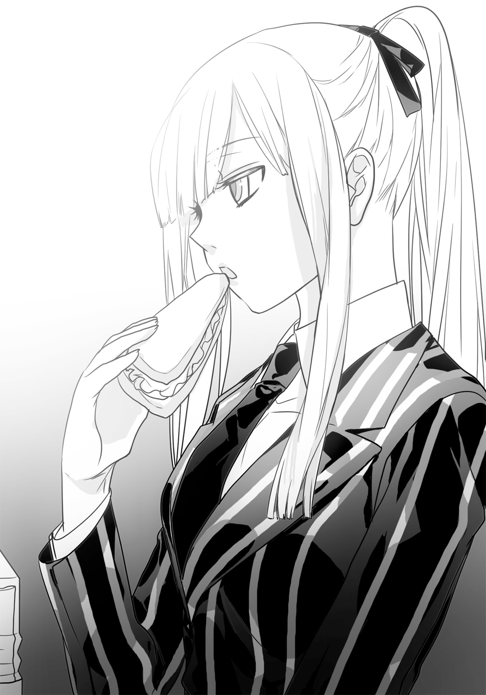
「まあな。いたときも、食事なんか作る人じゃなかったよ」
母親も父親と共に武器を売り買いしており、家庭のことはほとんど顧みなかった。子供を産んだこと自体、奇跡かなにかだと流壱は思っている。
流壱が珍しく、自分のことを話すので、菜菜瀬はきょとんとしていた。彼はクラスメートに自分のことをほとんど話していないし、話せることは少ない。
入り口付近から声がした。
「おや、お揃いですネ」
リックがやってきた。何人かの女子生徒があとからついてきている。早くも固定ファンができたようだ。
こちらに歩いてくる。女の子たちはもっと広いところに行こうとしたが、リックが「ここがいいデス」と言い、流壱たちの隣のテーブルに座った。
「マズいと噂を聞きまして、どんなものか食べに来まシタ」
取り巻きの女子生徒たちが、「うんうん、ここまずいよー」とか「食べたらお腹壊しちゃうよねー」などと言っている。
リックは女の子に囲まれているためか、にこにこしたままだ。
「おいしくない食事なんて、誰が用意したんでしょうネー。きっと経営者にセンスがないか、不当に搾取しているのデス。センスがない説を推しマス」
流壱はリックを無視してうどんを啜る。
「温かいのが取り柄だな」
「これで冷めていたら最悪だよ」
と菜菜瀬。流壱は言った。
「学食も我慢すればなかなかいけるぞ」
「目をつむって鼻をつまんで一気に食べればそうかもねえ」
「それって味分かるのか？」
「ランチって全部同じ味なんだもん。うどんもラーメンもカツ丼も味つけが似通っているって奇跡じゃない？」
「経営者に言っとくよ」
かやくご飯を食べて、またうどんを啜る。確かに味つけが似ていた。
横からリックが話しかけてきた。
「おや信崎クンは、ジャパニーズヌードルですか」
またケチをつけるつもりか、こいつは、と思いながら、流壱は返事をする。
「うどんって言うんだ。知らなかったろ」
もちろんリックは知っている。ただ相変らずエセ外国人っぷりを発揮しているのでつきあった。
「うどんの原産地は四国だ。畑で長いのが採れるから細く切るんだ」
「ほう、日本の作物は珍しいですネー。見たことないデス」
「食べれば？」
と流壱。
「日本に来たなら名物のうどんを食べないと」
リックがわずかにたじろぐ。
「いや......おいしくないのはチョット......」
「見たことないんだろ。ひょっとしたらいけるかもしれない。日本文化に触れたいならそこまでしないと。さすが先生、異国の料理もきちんと食べようとするなんて」
流壱は笑いながら後押しをする。
「あのですネ......」
「食券あそこ」
流壱は箸を持った手で、入り口近くの券売機を指した。
ぶつぶつ言いながら、リックは立ち上がる。女子たちはきょとんとしながら見送った。
実はリックはジャンクフードが一番好きだ。大変な偏食で、肉も魚も嫌っており、野菜も「草の味がする」と敬遠している。その割には体格がいいのが謎なのだが、ともあれここでも、本当ならコーヒーくらいしか飲みたくないのだろう。
渋々食券を購入する後ろ姿を見て、流壱はささやかな幸福を味わった。
その間にマイは食事を終えていた。菜菜瀬はまだ食べている。
「早いね」
「早く食べるようにしている」
マイは返事をした。
「へー、やっぱりギターの練習をいっぱいしたいから、早く食べるとか」
この質問には答えない。菜菜瀬は視線を横に動かした。
「ギター、見てもいい？」
「駄目」
「見ていいって言ったじゃん」
「噓をつくな」
菜菜瀬は口を尖らせた。
「えー、だってどんなギターが入っているか知りたいんだもん」
「安物」
「本当にギターなの？ なんか危ないもの入れてんじゃない。麻薬とか」
さすがに流壱が口を挟んだ。
「そんなことあるかよ。ここ学校だぞ」
「アメリカのドラマでよくあるじゃん。もしかしたら武器が入ってるとか」
その言葉に、マイの表情がわずかに変わった。
菜菜瀬にそれが分かったのかどうか。彼女は不思議そうにしていた。
「なにかおかしなこと言った？」
「......別に」
「日本に来る前もギターやってたの？」
「やってない」
「じゃあ趣味なんだったの？」
「特にない。楽しい想い出もない」
素っ気ない返事をマイはしている。
そこが逆に興味を引いたらしく、菜菜瀬は身体を乗り出していた。
「ねえねえ、どんなことがあったの」
この質問にはむしろ、流壱が緊張する。
マイは水を飲む手を止めて菜菜瀬を見た。
「......赤ん坊のころに母親が逃げ出した。父親もじきに死んだ。楽しくない家に引き取られて、楽しくない生活をして楽しくない育てられ方をした」
「なんか、ドラマでよくあるマフィアみたい」
菜菜瀬は冗談で言ったのかもしれないが、マイは笑ったりも受け流したりもしない。
「近い」
「へ？」
「幸せから程遠い生活だった。まともな神経では生きていけない。一度罪を犯すと心を痛めるが、二度目からは痛みも半分になって、三度目はさらに半分になる。四度目はほとんど痛まなくなって、五度目からはなにも感じなくなった。これで満足？ もう聞かないで」
マイは口を閉じる。
無言の迫力に、さすがに菜菜瀬も押し黙った。それでも、しばらくしてから独り言のように言う。
「そっかあ。でもこうして学校にいるってことは、そんな生活から抜けたか、抜けようとしてるんだよねえ」
「............」
「あたしなら、そんな生活から抜けるためになんでもするなあ。それこそ殺人をしても」
先ほどまでとは別の緊張感が、テーブルを支配した。
菜菜瀬もすでに食事は終わっており、弁当箱を片付けようとしている。そこをマイが睨んでいる。
どちらもなにも言わないので、冷たい空気だけが流れていた。
流壱も息を潜めた。授業中の転校生は自分の正体を隠しているが、今は殺気をちらちらと見せている。よく切れるナイフの先端がテーブル上を往復しているかのようだ。「素手で触らないでください」との注意書きを破り捨て、銀色を輝かせながら滑る刃物。
触ったら恐らく、血が吹き出る。
「あー、えー、オホン」
リックの声に、テーブルについている人間は我に返った。
「そろそろお昼の時間も終わりですネ」
流壱は時間を確認する。確かに、あと五分ほどで授業開始だった。
「戻るか」
「そだね」
菜菜瀬が賛成する。マイは無言のままだが、立ち上がろうとしていた。
リックは女子たちと話しながら学食を出て行く。彼らもあとからついていこうとした。
と、流壱のポケットの中が振動した。
スマートフォンが震えている。どこからか着信の合図だ。ただし非通知。
「先行っててくれ。電話だ」
「待ってるからいいよ」
菜菜瀬が言うので流壱は通話ボタンをオンにする。スピーカー部分を耳につけた。
「はい......え、なに？」
菜菜瀬とマイが隣にいるにも拘わらず、思わず声を出す。
「......取り引きを早める？ なんだそりゃ？」
彼は急いで学食を出た。
「あんな目にあったから、さっさと取り引きをすませるって？ 受け入れの用意を整えるにも時間がかかる......今夜だと？ 冗談だろう。おい、切るんじゃねえ、おい」
学食を出てから足を止める。周囲を見回してからスマートフォンの通話を切った。
壁際にはリックがいた。流壱はそこに近づく。
取り巻きの女子生徒たちの姿はない。先に帰したのだろう。彼ら二人以外に人影はなかった。
リックはちらりと学食に目をやった。
「引っかかったか？」
「どうだろう」
同じように学食の入り口を見る。人が出てくる気配はない。
念のために声を潜めた。
「雇い主にいちいち連絡取ったりしないはずだから、これだけの情報でも行動を起こすはずだ」
「念を入れるタイプならなおさらだな」
「そういうこと」
流壱はスマートフォンをポケットにしまう。
「リックは念のため、電算室でサポートしててくれ」
「お前はどうする」
「一人で待ってるさ」
その台詞に、リックはほんの少しだけ渋い顔。
「俺は構わんが、あいつは側にいるって言い出すぞ」
「待機させておいてくれ」
「今度は吹っ飛ぶなよ」
「まだ死ぬつもりはねえよ」
そう返事をする。二人は会話を切り上げると校舎へと戻った。
○
その後はなにごともなく全ての授業が終わり、生徒たちは三々五々下校していく。爆発があった影響で、部活動も早めに切り上げられた。
クラスメートが帰った後も、流壱は教室に残っていた。なにをしてるわけでもなく、ただ座って外を見ている。
そろそろ夜になる。先ほどまで赤かった空も、急速に暗くなっていた。
「信崎君、帰らないの？」
菜菜瀬が不思議そうに訊く。
「俺は学校が好きなんだ」
「こないだ休んでなかった？」
「忘れてくれ。ちょっと用事があるんだ」
彼は都内に複数のマンションを所有している。マンションの一室ではなく、建物そのもの。寝る場所に不自由しないどころか賃貸料だけで十分生きていけるし、最上階に自らの部屋を確保していた。
しかし今日は遅くまで学校にいるつもりだった。
彼は横の席を見る。ギターケースをもった少女の姿はない。
「転校生、いないな」
「さっき下の方にいたよ。キーファー先生と話してた。珍しい組み合わせだよね」
と菜菜瀬。
「あんな無口の転校生でも話をさせるんだから、キーファー先生ってたいしたもんだねえ」
「そんなにいいもんじゃねえと思うぞ。大学首席卒業で数学の天才みたいに吹聴してるけど、正体はハッキング好きなパソコンオタクだ」
「あー、キーファー先生って女子に人気あるんだから、そんなこと言うといじめられるよ」
それから菜菜瀬は含み笑いをする。
「ひょっとしたら、転校生をとられそうだから、やきもち？」
「そうじゃねえ」
流壱のポケットが震える。スマートフォンを取り出す。耳に当てた。
「はいよ......今夜だな。分かった」
それだけ言うと通話を切る。菜菜瀬の方を向いた。
「無地目はまだいるのか？」
「ううん。帰る。信崎君は？」
「まだ残るかも。やることがあるんだ」
菜菜瀬は「じゃあお先に」と告げて出ていった。
流壱はしばらく教室内でぼんやりしていた。
彼はこの学校を気に入っていた。幼い頃から父親に連れ回され、犯罪者すれすれの大人や、犯罪者そのものの大人たちとばかり交わっていたため、少年らしい生活はしたことがない。
なので、ごく一般的な人生を少しでも取り戻そうと考えて、荷堂学院を買収したのだ。
とはいうものの、結局その割りには武器の回収のため欠席が多くなっている。これも運命というものだろうか。
太陽はすっかり沈み、夕方から夜へ変わっている。
敷地内は暗がりとなっていた。照明はいくつかついているが、グラウンドのあたりは真っ暗でなにも分からない。
時間を確認する。またスマートフォンが震えた。今度の相手はリックだった。
「はいよ」
（そっちは大丈夫か？）
「ああ。とっくに作業は終わっている。あとは待つだけだ」
（それほど待たなくていいぞ。姿が監視カメラに映った。じきにそっちに戻ってくる）
流壱は「分かった」とだけ言ってスマートフォンの通話を終了した。
しばらくすると、廊下を歩く足音が伝わってきた。流壱は窓から外の暗闇を眺めたまま。
足音が教室の前で止まる。扉が開いた。
彼は振り向いた。
「よう、無地目」
快活なスポーツ少女、菜菜瀬はぎょっとしたように立ち止まった。
すぐにほっと胸を撫で下ろす。
「なんだ、びっくりしたよ」
「驚くなんて珍しいな」
「だって誰もいないって思ってたんだもん。信崎君、なにしてるの？」
「無地目こそこんな夜にどうしたんだ。忘れ物か？」
「そんなとこ」
菜菜瀬はゆっくり教室に入ってくる。
流壱は座ったままだ。背もたれに身体を預けて軽く腕組みをした。
「忘れ物なら一緒に探そうか？」
「ううん、いいよ。そんなに大切な物じゃないから」
「そうだろうな。本当は忘れ物じゃないもんな」
流壱は言う。菜菜瀬はきょとんとした。
「なんのこと？」
「とぼけなくたっていい。倉庫に爆薬仕掛けて、武器ごと俺を吹っ飛ばすとか考えたんだろ」
「変なこと言わないでよ」
菜菜瀬は手を振って否定するが、流壱は話すのを止めない。
「入港が早まったんで慌てて倉庫を確認しに行ったんだろうが、残念だったな。あそこはとっくに空っぽになっている。驚いたろ」
「だから、なんのこと」
「取り引きは中止だ。午後いっぱい使って空にしておいた。トラックが出入りしていたのは武器を運び入れたんだじゃない。運び出したんだ。念のために教室に戻ったら俺がいたんで、また驚いたんだよな」
菜菜瀬はむっとした表情を作った。
「なに言ってんの。いい加減にしないと怒るから」
「無地目菜菜瀬。麻薬カルテルに拉致されて訓練を受けた殺し屋。得意な武器は爆発物。わざわざ俺を殺すために転校してきたのはいいが、時間をかけすぎたな。理科実験室のあれはやりすぎだ。自分を誇示する必要なんかどこにもなかったんだ」
流壱はファイルを取り出すと、机の上に放り投げた。
ファイルが半開きになって、挟んでいた書類が飛び出す。そこには菜菜瀬の名前と写真が記載されていた。
それを見た瞬間、菜菜瀬の顔つきが変わる。
表情にわずかな変化。まなじりが少しだけ上がり、口の端が引きつる。目の色まで変わったかのように感じた。
最大の違いは全身から発せられる雰囲気だった。それまでの、陽気で馴れ馴れしいくらいだったクラスメートは、多くの人間を葬ってきた殺し屋のものとなっていた。近寄るだけで怪我をしそうな、刃物のようなオーラ。
彼女は薄笑いを浮かべた。
「なあんだ、バレてたの」
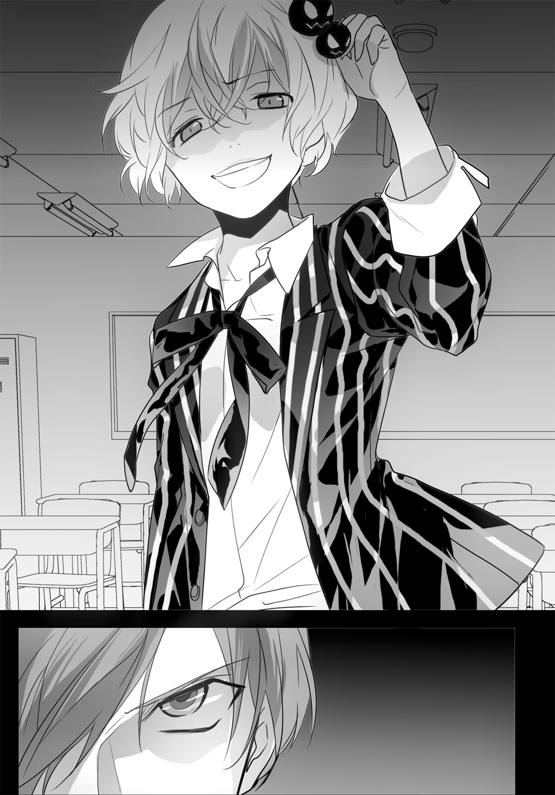
「途中まで確証はなかった。半月前に転校してきたってのが、どうも中途半端で引っかかったんだ」
「勘のいい信崎君の懐に、上手く潜り込めたって思ったんだけどねえ」
菜菜瀬は近寄らずに距離を取っていた。流壱は立ち上がる。
「雇ったのは司麻だな」
菜菜瀬がにやりとする。
「だったらどうする？」
「入国する前に、息の掛かった人間を潜り込ませることはよくやる手口だ」
「教える必要はないわね」
「答えなくたって分かるさ」
流壱と菜菜瀬は正面から対峙していた。二人の間にはいくつもの机と椅子があり、容易には飛びかかれないようになっている。
菜菜瀬が訊いた。
「じゃああたしから質問。どうしてここで待ってたの？」
「他の生徒がいる中で追及はできねえだろ」
「優しいね。でも甘い。二人きりならあたしに分がある」
「爆薬をここで使ったら無地目もただじゃすまねえぞ」
「あたしの道具が爆薬だけだと思ってんの？」
菜菜瀬の身体がふわりと動く。流壱は視認した瞬間、机を蹴飛ばして身をかがめた。
拳銃の発射音。弾は机の脚に当たり、明後日の方向へ跳ねていった。
流壱は身を低くしたまま、円を描きながら教室内を走る。その後方を菜菜瀬が手にしたシグ・ザウアー社製Ｐ２５０自動拳銃が追う。
「一対一でカッコつけようってのが間違いよ」
「俺の勝手だ！」
「信崎君、あんた学校じゃ銃を身につけないんでしょう!? それだけじゃなくて使わない。そんな主義、穴だらけになるのがオチよ！」
「試してみるか？」
「もちろん！」
菜菜瀬が発砲する。９ミリパラベラム弾が飛び、黒板と床に穴を開ける。燃焼した火薬の臭いがわずかに漂う。
流壱は伏せながら叫んだ。
「なあ無地目！ いくらで雇われたんだか知らねえけど、倍だすぞ！」
「なんでも金で決着つけようとするのが、武器商人の悪い習慣よ」
「金は人類の共通言語だ」
「こちらにも事情があるから」
発砲。銃弾から逃れるように、流壱は移動した。教室前方の扉に近づく。
菜菜瀬が笑った。
「廊下に出ても無駄よ？」
「やってみなきゃ分からねえだろ！」
転がるようにして廊下へ走り出た。
廊下の蛍光灯は消えている。ただ外からの明かりが窓ガラス越しに差し込んでおり、視界を遮られたりはしない。
流壱はもう身体を低くしたりせず、起き上がって走った。後を追って菜菜瀬が廊下に出る。
また発砲。流壱は銃弾が至近距離を通過する音を聞いた。
「逃げたって無駄」
菜菜瀬は追いかけずに、両手でＰ２５０を構えて膝をついた。
教室内と違い、廊下に障害物らしい障害物はない。拳銃は少しでも離れてしまうと命中率が著しく低下してしまうが、これだけ視界がよければじっくりと狙いをつけられる。彼女が流壱をあえて廊下に逃がした理由もこれ。
彼は背中に銃口がポイントされるのを感じた。
（まだ......もうちょっと！）
右手側に階段が見えてくる。飛び込めば一息つけるし、外まで逃げられる。しかしその前に発砲されたらどうなる。ギリギリ間に合うか撃たれるかの瀬戸際。
菜菜瀬は流壱の死を確信していた。
「死んで」
彼女の声が耳に届く直前。
階段からなにものかが駆け上がってきた。
その人物は流壱に駆け寄ると、素早く床に引き倒した。そして背中のギターケースを前方に回し、彼の前に立ち塞がる。
菜菜瀬が撃つ。弾は正確に直進しギターケースに命中。しかし貫通しない。
小柄な人物は振り返った。
「......平気？」
「遅えぞ」
「ごめん」
二人目の転校生、マイは無表情のままわびた。
マイはギターケースを盾にしていた。銃弾が何発か食い込むが、セラミックとパラ系アラミド繊維の防弾部分は９ミリ弾の貫通を完全に防いでいた。
「転校生！」
菜菜瀬が大声を出す。
「あんたやっぱり護衛だったのね！」
マイは返事をしない。代わって流壱が叫んだ。
「お前のことが怪しかったから呼んだんだよ！」
「生意気そうな顔をしてたから、そうだと思った！」
菜菜瀬が立て続けに引き金を引いた。
マイはギターケースを盾にしたままだ。放たれる９ミリ弾が食い込んでいく。
「なるほど、そうやって使うんだ！」
菜菜瀬が叫ぶ。
「信崎君をあたしから守ろうとしてたってわけね！ どこに行ってもついていて、犬かと思った！ ご主人様に尻尾を振るワンちゃん！」
マイは無言のままギターケースと共に前進する。弾は彼女の身体にかすりもしない。のぞき穴はないが一直線の廊下、見失う恐れはなかった。
菜菜瀬の発砲が止まった。急いで弾倉を交換している。
その刹那、マイはギターケースを開けた。中から出てきたのは六本弦のエレキギター。
武器かと身構えた菜菜瀬は、ただの楽器と知ってぎょっとする。次の瞬間、マイはギブソン・レスポールモデルのコピー品を力一杯投げた。
回転しながら菜菜瀬に飛んでいく。彼女は慌てて横にかわした。
ギターが床にぶつかりネックからぽっきり折れる。菜菜瀬は思わず目線を切る。
マイにはその程度の隙だけで十分だった。ギターケースを捨ててダッシュすると、太腿に挟んであったフィクストナイフを抜く。
スライディングの要領で菜菜瀬の足を跳ね上げた。バランスを崩した菜菜瀬は踏ん張ろうとしたが失敗し、そのまま転倒する。
マイは右手を蹴飛ばす。Ｐ２５０が廊下の床を転がる。のしかかると刃を菜菜瀬の首に押し当てた。
ベンチメイド社製のつや消しされたナイフが、喉元に食い込んでいく。
「終わりだ」
低く感情の欠落した声を、菜菜瀬がせせら笑う。
「女の子にのしかかられるなんて背徳的。女の子じゃなくて護衛の雌犬だけど」
「死ね」
マイがナイフを真横に動かそうとする。
「待て、待て」
流壱は駆け寄った。マイは菜菜瀬の上からどかず、目線も外さない。
「始末する」
「だから待てって」
彼は菜菜瀬の横にしゃがんだ。
「無地目、さっき俺の言ったことを覚えているか」
「内容によるわね」
「雇い主の二割増しだ」
「......倍じゃなかった？」
「さっき受けてくれりゃ倍だった」
菜菜瀬が目だけを動かして流壱を見た。
「目的は？」
「取り引きの時の安全装置になって欲しい。無地目がいなくなったら新しい殺し屋を雇われちまうからな」
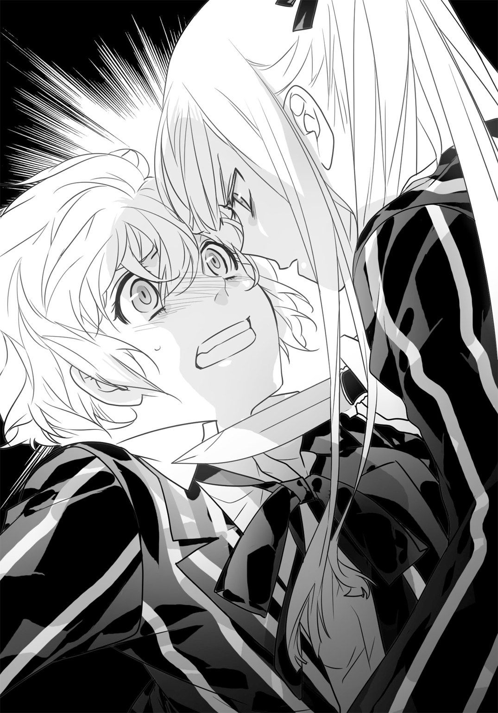
「取り引きは中止になったんじゃないの」
「ありゃ噓だ」
流壱の言葉に菜菜瀬は笑う。
「騙したのね。負けたわ」
「どうする」
「取り引きのときに、味方になればいいんでしょう。タルナードのそばにいても命令は聞かない」
「そうだ」
ナイフの刃は菜菜瀬の首筋に食い込んだままだ。彼女は余計なことをせず、口だけを動かしている。
「私を信じられるの？ 命狙ったんだけど」
「信じるさ」
「断ったら殺す？」
「マイに任せるしかない」
「......オーケー。受けましょう」
と菜菜瀬は言ったが、まだ起きあがれない。マイが動こうとしなかった。
「信崎君、このワンちゃんどかしてくれる？」
流壱は「マイ」と声をかけるが、彼女は浅く息をしているだけで、上からどこうとしない。
「流壱......こいつは危険」
「取り引きはしたぞ」
「信用できない」
「あのな」
「ここで始末すべき」
今にも喉を切り裂きそうな目をしていた。流壱は彼女の手をそっと押さえる。
「俺は金を払うといって、彼女は受けた」
「............」
組み敷かれたままの菜菜瀬は「さっさとどいてよ」と言っている。その後もマイは黙って睨んでいたが、やがてゆっくりと立ち上がった。
目は菜菜瀬から離さず、手のナイフもしまわない。菜菜瀬は肩をすくめた。
「ちょっと、怖いわねえ。もっと笑ってよ」
「............」
菜菜瀬は流壱を向く。
「金で寝返るのは信用できないって、信崎君もそう考えてる？」
「無地目の承諾を信用している」
「そうでなくっちゃ。聞いてた、ワンちゃん」
菜菜瀬はマイに向かって喋った。言われた側はくすりともしていない。
「その言い方、止めろ」
「だっていかにも信崎君に忠誠を誓っているって感じじゃない。犬そっくり」
彼女は手で制服についた埃を払った。
「ま、忠誠心って嫌いじゃないわよ。今日から仲間ってことね。よろしく、ワンちゃん」
菜菜瀬はにこにこしながら手を伸ばすが、マイは露骨に無視をした。
第四章
荷堂学院には電算室という名のパソコンルームがあって、学生がプログラムの勉強をするようになっている。部屋は最近できたばかりで内装はぴかぴか、設備も新品である。
だが肝心の授業内容にプログラムはない。これは意図的なもので、実はリックのために用意された部屋なのである。
リックが自分の得意な作業をおこなえるように流壱が作らせた。教師として赴任する時、偽装したトラック内に発電機とパソコンを持ち込んでいたが、これで駐車違反を気にすることもなくなった。もっとも流壱としてはゲストパスで出入りして欲しかったので、痛し痒しと言ったところ。
電算室は広く、ここから敷地内に設置された監視カメラを全て操作できる。無論外部へも接続されており、政府機関への侵入から迷子犬の体内に埋め込んだチップの検索まで、必要なことは全てできる。
大型のコンピュータは隣接したサーバルームにあるため、室内の風景はむしろ素っ気ないくらいだ。広めのテーブルと複数の椅子も用意されており、会議もできるようになっていた。
今はその部屋に四人の男女がいる。流壱、リック、マイ、菜菜瀬だった。
菜菜瀬はここが初めてなので、じろじろと見回している。
「意外と綺麗なのね。パソコンオタクってこういうところに住み着いて、ドーナッツやクラッカーを食べ散らかして椅子で寝るんじゃないの？」
「そいつは偏見だな。ドーナッツじゃなくてピザだ」
リックが言う。壁面にいくつも設置されているモニターには、敷地内の映像がリアルタイムで映っていた。
再び菜菜瀬が訊く。
「あたしのことも全部監視してたのね。トイレとか見てたりしてないよね」
「トイレの出入りはチェックできるが、中までは設置してない」
「よかった。見られていたら速攻裏切ってた」
裏切りという言葉に、マイがぴくっと反応する。
「いやねー、冗談よ。ワンちゃんってほんと怖いんだから」
菜菜瀬は笑いながら手を振った。
流壱が言う。
「話を始めるぞ。爆薬とツングースカを積んだ船は、あと二日で入港するはずだ」
「え？ 野潟とまだ取り引きやるつもりなの？」
直前まで笑っていた菜菜瀬が、意外な口調となる。
「あたしが散々びびらせたのに。普通逃げ出さない？」
その疑問に流壱が答えた。
「あのあと連絡が来た。面子が潰れるのが嫌なんだろ。ここで反古にしたらあの女は一生浮上できねえから、やりたくなくてもやるさ。取り引き時間は予定通り。こっちのルートを渡す云々は当然なし」
「怪しいなあ」
「学校まで武器を運んでくれりゃいい。なにごともなければ、相手にこっちの武器と金を払って終わり」
「なにごともないわけはないな。絶対に横槍が入る」
リックの言葉に、流壱は深くうなずいた。
「俺もそう思っている。あいつが見逃すはずはない」
彼の言葉を聞いて、皆の頭には一人の人間のことが思い浮かんだ。
「......司麻」
マイが呟く。流壱は首肯した。
「間違いない。日本にいるんだ。そこらを観光して帰るわけはないだろう。俺たちの取り引きに介入するはずなんだ」
菜菜瀬が不思議そうに訊く。
「だったら延期すれば？ そうすれば司麻も帰るでしょ」
「しない。俺はむしろ、これをチャンスととらえている。取り引きを利用して、司麻を捕まえるつもりだ」
菜菜瀬を除いた二人がぎょっとした。
反射的にリックが口を出していた。
「本気か？」
「そうだ。司麻が見逃すはずはない。逆手に取る」
彼は荷堂学院の敷地の地図を広げた。
「取り引き当日に、移動させておいたミラン２を持ち込む。運ぶのはトラックだ。まずこれを地下駐車場から出す」
彼は全員の顔を見渡した。
「トラックが正門に到着したら運転はリックに代わり、そのまま倉庫に入れる。積んであるミラン２はそのままだ。貨物船が来たら船ごとＣ４とツングースカを受け取り、トラックと交換。うまくいけばそれで終わり」
「うまくいかないんだろ」
とリック。流壱は言う。
「ああ。司麻の妨害が入るに決まっている。あいつのことだ、親父の武器を手に入れるか、俺を殺そうとするはずだ。あるいは両方。なんにせよ取り引き現場に姿を現すだろう。手下を連れていても妨害はせずに、倉庫に入れてしまう。武器を欲しがったら全部渡す」
菜菜瀬が意外な表情を作った。
「もったいなくない？」
「構わない。トラックにはミラン２だけじゃなくて爆薬を積んでおく。司麻がやってきたらこいつを起爆して、倉庫ごと吹っ飛ばす」
流壱は拳でテーブルを叩いた。
全員、驚きの顔をしていた。倉庫ごと爆破して殺害しようというのである。いくら夜で生徒がいないとはいえ、派手なことこの上ない。常に無表情のマイですら、さすがに感情を表していた。
彼はもう一度全員を見回した。なるべく穏やかに聞こえるよう喋る。
「安心してくれ。最後の手段だ」
「巻き込まれるの嫌なんだけど!?」
菜菜瀬の抗議に、流壱は返答する。
「俺もだよ。司麻はなるべく殺さず捕まえたい。爆破を脅しの材料にする。あいつが言うことを聞かなかったら、吹っ飛ばすしかないけどな。皆はなるべく離れていてくれ」
「なるべくって、どれくらい」
「そいつは無地目の役目だ。トラックに積む爆薬を製造して欲しい。そうすりゃ加減が出来るから、離れる距離も分かるだろ」
彼女は文句を言おうとしたが、諦めて肩をすくめた。
「やるわよ......。ドラム缶に肥料爆弾が手っ取り早いわね。調達してくれる？」
「リックと協力してくれ。マイは俺と一緒に、当日の配置のチェックだ」
マイは小さくうなずく。
それを見て菜菜瀬はにやっとした。
「おお、ワンちゃん信崎君と二人でいられて、嬉しそうだねえ」
マイが、露骨に物騒な視線を飛ばす。菜菜瀬は「だから睨まないでよ」と言っていた。
これで当面の話は終わり、全員電算室を出た。
流壱はさっさと歩いて行く。マイはその後ろをぴたりとついていた。
菜菜瀬はその光景を眺めていた。しばらくしてから大柄な黒人に声をかける。
「ねえリック」
「キーファー先生と呼ぶと俺が喜ぶ」
「リックでいいじゃん。ちょっと訊いていい？」
「材料の調達なら、あとで教える」
「そうじゃなくてさあ、あのワンちゃん、なんで信崎君の護衛やってんの」
菜菜瀬の視線の先では、マイのギターケースが徐々に小さくなっていた。
リックも同じように目を向けてから戻す。
「......マイは腕のいい狙撃屋だった。祖父がベトコンの英雄で、父親は特工（特殊部隊）出身で母親は日本人。理由は知らんが孤児になって東南アジア中をさまよった」
「へー、あたしみたい」
「お前はマフィアに仕込まれたんだろ。マイは違う、あいつは自分から学んだんだ」
菜菜瀬が怪訝な顔をする。
「どういうこと？」
「マイは育ててくれる人がいなくなり、貧困の貧困のさらに下の貧困まで落ちていった。抜け出すことすら諦めた彼女の前には二つの選択肢があった。人を殺して自分も死ぬか、人を殺して自分は生きるかだ」
「なんだ。結局誰かに選べって言われたんでしょ」
「俺も最初はそう思ってたが、違う。マイは自分の意思でこの選択肢にたどり着いた。幼い少女が誰にも教えられずに思いついたんだ。当然のように後者を選び、人を殺して自分も生きた。幸い、殺しはマイの天職だった。それから流壱に拾われて、行動を共にするようになったんだ」
「二人ってどこで知り合ったの」
リックは首を振る。
「親父さんがなくなった直後だな。マイはフィリピンのダバオの奥地で薬漬けになって死にかかっていた」
「それから？」
リックは口を開きかけたが、話を続けずに首を振った。
「俺が教えられるのはここまでだ。もっと知りたきゃ本人に聞くんだな」
口を尖らせる菜菜瀬。
「あのワンちゃんが、あたしに教えてくれるわけないじゃん」
「かもな。だったらずっと秘密のままだ」
「好かれなきゃ駄目かなあ」
菜菜瀬は「ちぇ」などと言いつつ、床を軽く蹴った。歩き出そうとして、思いついたように振り返る。
「じゃあリックは、なんで信崎君と一緒にいんのよ」
「聞きたがりだな」
「教えてよ」
「......俺の場合は親父さんのときからの付き合いだ。元はアメリカ中央軍で電子戦を担当していた。ハッキングが趣味でな、『グレイズ・アナトミー』を見るかたわら政府機関に侵入していたら国家安全保障局に露見して追い回された。当たり前だが中央軍に切られて金もなし。食うに困って裏で仕事を請け負っているときにあいつの親父さんに出会った」
「息子を守ってくれって父親に頼まれたの」
「いいや。もっと違う理由だ。それに俺は、流壱の親父さんが好きじゃない」
好きじゃないという台詞に、菜菜瀬は一瞬だけ不思議そうにした。
リックはさらに言う。
「好きじゃなかったというべきだな。あいつの親父さんはもう死んでるんだから」
「嫌いになる理由ってなによ」
「......人を人と思っていなかったってところだな」
リックは記憶を探るように語っていた。
「親父さんは人間をチェスの駒というか、意思のないものとして扱うことがあった」
「非情な人間なら、この商売やってるといくらだって会えるわよ」
「ちょっと違う。非情というより、はじめから情がない感じなんだ。人間を必要に応じて出したりしまえたりする道具扱いするってのが、一番ぴったりくる」
その説明に首を傾げる菜菜瀬。
「分かりづらいわね」
「だろうな。たとえば、親父さんの部下が武装ゲリラに包囲されたとする。親父さん自身は無事だ。こういうときは絶対助けに行かない。自分の身を危険に晒すのが馬鹿らしいからだ。部下がどうなろうと、もういなくなったものとして扱う」
「ありがちな話ね」
「さていくつかの偶然が重なって部下は脱出できた。親父さんは別の国に行ってもういない。部下は苦労して出国し、様々なことを後悔しながら身体を休めようとする。そこに連絡が来るわけだ。次の仕事があると」
菜菜瀬はきょとんとし、ついで妙な表情を作った。
「なにそれ。見殺しにしといて他になにもなし？」
「そうだ。親父さんは見殺しにしたことなんかまったく意に介さないんだ。部下に次の仕事をやらせることにも疑問はないし、部下が断るなんて考えもしない。もう自分のために働かないってことも想像しない。だから非情っていうより、情がないんだよ」
説明の最後になると、リックはどこか苦しそうな顔をしていた。菜菜瀬は、この男性の中のある感情を刺激したことを悟ったが、あえて触れないでいた。
リックは軽く息を吐く。
「......ま、自分の売った武器で人が死んでいくんだから、親父さんなりの割り切り方なんだろう。それでも好きにはなれん」
「その人の息子と、なんで一緒にいんの」
「親父さんと正反対だからだ。流壱のやつは人間が大好きなんだよ」
「それはそれで極端ねえ」
「だろうな。流壱は、武器は人間が扱ってはじめて武器になると考えている。父親のような人間に任せるのが一番まずいとも。だから自分の手でコントロールしたいんだ。全部の武器に手が届かなくても、せめて親父さんの武器くらいは取り戻したいし、全てをかけている」
リックの言葉は真剣そのものだ。だが菜菜瀬は呆れたように言う。
「武器屋のくせに矛盾してるのね」
「あいつは矛盾に満ちてる。意味がないことはあいつが一番よく知っている。それでもこの道を選んだ。親父さんの仕事を見ていてそうなったんだろうし、俺にはよく分かる。だから付き合うのさ」
この台詞には、どこか力がこもっていた。
菜菜瀬はさらに疑問をぶつけようとしたが、リックの顔つきを見て止めた。なにかを伝えようというよりは、決意表明のようにも感じられたからだ。
代わりに茶化すことにした。
「やっぱりあんたたちってデキてるみたい」
「なに言いやがる」
リックは苦笑した。
「ゲイは否定しないが、俺たちはそんなのじゃない。だいたい年が離れすぎているだろ」
「司麻はどうなの」
「あいつは親父さんに似ている」
リックは断言した。
「ただ親父さんは情がなかったが、司麻は必要に応じて情を出す。ある局面では情を使った方が効果的だからだな」
「それってプログラムされた機械みたいね」
「司麻はもっと感情的だ。ただそのあたりの、論理と感情の切替えがとても極端で早い。驚くくらいだな。だから親父さんよりもずっと不気味だ。流壱が司麻と対立しているのは、それだけが理由じゃあないが......」
「どんなこと」
と菜菜瀬は訊くが、今度こそ本当にリックは説明を止めた。
「喋りすぎた」
「ケチ」
「もっと知りたきゃ流壱自身に訊くんだな」
「教えてくれなかったらどーするのよ」
「マイも教えないんだ。バランスが取れてるじゃないか」
「なによ」
菜菜瀬は文句を言う。リックは笑いながら廊下を歩き去って行った。
○
暗がりが荷堂学院を包む。
夜は取り引きを世間の目から隠す絶好の時間帯だ。無論、場合によっては白昼堂々荷物の受け渡しをすることもある。たとえばコンビニや宅配便のトラックに偽装して路上でやりとりするとか。それでもやはり、夜間におこなう方が、都合がいい。
流壱は倉庫の前で待機していた。ときおり頭上を眺めて時間を潰す。雲が厚く星と月を隠しており、非合法の取り引きにはますます都合が良かった。
（そろそろだ）
耳に装着した小型ヘッドセットからリックの声が流れる。スマートフォンと Bluetooth で接続された音声は、非常にクリアだった。
（こっちのトラックが正門を通過する。船は？）
流壱はわずかに背伸びして東京湾を眺める。暗くてよく分からない。スマートフォンを操作して、対水上レーダーの転送画面を確認。貨物船が一隻、接近しているのが分かった。
「もうすぐ到着だ」
レーダーは校舎の近くに設置してあり、生徒には衛星通信用の大型設備と説明している。電波を出しっ放しにしていると目を付けられるため、ここぞという時に使用していた。
流壱はマイクに話しかける。
「無地目」
（なにー？）
「用意はどうだ？」
（問題なし。あたしよりワンちゃん気にしたら？）
いつもの明るい声だ。これだけだと元マフィアの殺し屋だとはとても思えない。彼女は校舎の中で待機している。武器が到着したら、品物の確認をするのが役目。
「マイ」
（......異常なし）
マイは校舎の屋上に陣取り、暗視スコープ付きの狙撃銃を構えているはずだ。流壱に危害を加えようとする人物を狙撃するのが役目。
「間違って俺のことは撃たないでくれよ」
（冗談でもそういうことは言わないで。私を信用していないの）
「......いいや」
彼は送話口を指で塞ぎ「あいつは時々怖いな」と嘆いた。
（もう目視できるはずだ）
リックの声。もう一度湾内を見つめる。
うっすらと航行標識灯が確認できた。徐々に明るくなってくる。
貨物船の姿が見えた。外観はカーフェリーそっくりだった。偽装のためか本当に乗用車を積んでおり、奥にツングースカ対空車輌を隠してある。
「来た。予定時間よりちょっと早い」
（野潟は来るのか？）
「貨物船に乗っているとさ。取り引きがきちんと終わるかチェックしたいらしい」
続けて流壱は、「誰も信じてないけどな」と呟く。乗っているのが本当でも、きちんと終わることはまずあり得ない。
周囲を確認。不審な姿はない。
彼はぎゅっと手を握った。どこかに司麻はいるはずだ。いざとなったらその弟を吹き飛ばさなければならない。兄弟間の確執を終わらせるのだ。
そのための準備はした。が、もう一つくらい保険を掛けておいた方がいいかもしれない。
考えているとリックから連絡があった。
（トラックを移動させる）
彼はいったん通話を切った。
貨物船がゆっくりと港の岸壁に接近してくる。
流壱は倉庫に入らず、岸壁へと向かう。
（マイ。少しの間通信を切るけど心配するな）
（心配させないようにして）
彼は苦笑いすると、連絡を切って、さきほど思いついたばかりの作業をするべく、倉庫の裏へと回った。
○
リックは校舎地下の駐車場に移動した。
ここは現在生徒の使用は不可で、教職員や来客専用である。ただ平面駐車場の方が使い勝手がいいため、利用者数は少ない。
にも拘わらず造られたのは、まさにこういう時のために使うのだ。もっぱら非合法なあれやこれやの一時保管場所。緊急時の避難場所との理屈も一応ついている。
地下にはエレベーターが一基と階段で繫がっている。わりと広く、何本もの太い柱で校舎を支えていた。
柱と柱の間は、火災などのトラブルがあった場合に備えてシャッターがついている。非常ベルが鳴ったら自動で降りてくるのだ。一度だけ地下で花火を点けた生徒がいて、全てが作動してしまい結構な騒ぎとなった。
リックはエレベーターを降りるとトラックの位置を確認する。奥にちゃんと停めてあった。
「ねえ、リック」
いきなり話しかけられ、彼は不審に思いながら振り返る。
そこにいたのは菜菜瀬だった。リックはますます驚いた。
「持ち場はどうした。なんでここにいるんだ？」
「信崎君が運転代われって」
「俺の役目だろ」
「全部のカメラ使って監視できるのが、他にいないんでしょ」
「運転できるのか」
「割と得意なの」
菜菜瀬はトラックの運転席に向かおうとした。リックは納得しかかったが、思い直して制止する。
「待て。流壱に確認する」
スマートフォンから電話をかけようと目を離す。それがいけなかった。
後頭部に衝撃を受け、彼はエレベーターのすぐ側で昏倒した。
○
流壱は倉庫に戻った。中に入ってから、今の作業で濡れてしまった頭を拭く。
しばらく待ってると、倉庫脇の扉が開いた。
「入りな」
と流壱が言うまえに、人影はやってくる。
一人だった。小柄な影。流壱は電気を点けた。
蛍光灯の明かりに照らされたのは、楽蘭高校の制服を着た水希であった。
流壱は一人で彼女と対峙していた。水希はどこかやつれているような顔をしている。ただ目だけはぎらぎらしていた。
水希は喉から絞り出すように声を発していた。
「来たわよ。武器は積んだままにしてある」
流壱は軽くうなずく。
「その方が手間が省けていい」
「そっちのミラン２は？」
「すぐに来る」
やがて、低いエンジン音がする。倉庫の外から短いクラクションが聞こえてきた。
流壱は倉庫のシャッターを開ける。トラックがライトを消した状態で入ってきた。エンジンを切って停止。
「この中に目当てのものを積んである」
流壱はトラックの荷台を拳で叩いた。
「うちが貰っていく」
「もちろん野潟のものだが、一つ条件がある」
「なんや」
「司麻を呼べ」
流壱は言った。
その言葉に水希は動揺していた。隠そうとしているが、心の動きは明らかだ。彼はさらに言い放つ。
「爆弾騒ぎのあと、司麻から連絡があっただろう」
「なんのこと......」
「お前の電話の盗聴くらいすぐだ。俺との取り引きを続けるよう言われたな」
「う......うちが言うことを聞くと思っとんのか......」
「司麻相手にお前程度の強がりは通用しない。俺になにをするよう命じられたんだ」
水希はせわしなく眼球を動かす。やがて顔を歪め、咳き込むように喋り出した。
「......ここで取り引きをしろってことだけや......」
「それでどうする」
「知らんのよ！ あいつ、うちの頭に銃突きつけよって、あんたに電話かけさせたんや」
「貨物船に荷物はあんのか」
「全部ある。あんたがチェックしたときになかったら困るやん。積むには積んだ、でも司麻はそれももってくつもりや......。あいつ、ここに来る必要あらへんのに」
「やっぱり近くにいるな。呼んでもらおう」
ごく自然に、それでいて断れない重みを載せて流壱は言った。
水希は渋々スマートフォンを取り出した。フリック入力をしようとして、指を止める。
「その前に、ブツを見せてもらわんと」
「あ？」
「ミラン２。裏に司麻がいようがいまいが、交換のはずや」
やけにこだわっていた。流壱はしょうがないなと思うと、トラックの荷台に回る。
ロックを外して開けた。
「ほら、ここにミランが......」
ない。荷台は空っぽだった。
「馬鹿な......」
さすがに驚いた。ミラン２は爆薬をカムフラージュするため、手前に置いてあるはず。だが爆薬ごと消えていた。積み荷はどこにいったのだ。
水希は中を確認して、言った。
「これ、司麻が予測してたわ。あんたが荷台を開けたら伝えるようにって」
「なんだと？」
「武器のことより、学校の心配をしたほうがええよ」
「どういうことだ!?」
「こういうこと」
背中にこつんとした感触。ゆっくり振り返ると、Ｐ２５０自動拳銃の銃口と目があった。
菜菜瀬が銃を突きつけていた。
流壱は一瞬口をつぐむ。そしてゆっくりと両手を上げた。
「どういうことだ、無地目」
「見ての通り。信崎君を脅迫してんの。こっち向かないで、元に戻ってくれる？」
菜菜瀬はにこにこしている。
「トラックはあたしが運転してたんだよね。気づかなかった？」
流壱はまた水希に向き直りながら訊く。
「リックはどうした」
「おねんねしてる。殺してないから大丈夫。信崎君はちょっと油断しすぎだなあ」
「俺は他人を信じるのが好きなんだよ」
「いくら倍出しても、三倍出すって言われたら、そっちにつくに決まってるじゃん」
いかにも当然のような口ぶりだった。
流壱はその場で動けなかったが、水希は肩の荷が下りたかのようにほっとしていた。そして見る見るうちに目が吊り上がる。
「よくもうちをコケにしたわね......。ええこと教えたるわ、あんたが北海道で取り引きしたグロームはクスリの仕入れ先だけやない。うちの従弟なんよ。司麻はね、グロームの仇をとるチャンスをくれたんよ」
「お前の従弟はクズだ。北海道のヘロインとメスのルートが壊滅して警察は大喜びだぞ」
「やかましい！ ただ普通に殺したらつまらん。苦しんで死んでもらうわ！」
水希は震えながらナイフを取り出した。カッターナイフなんて可愛いものではなく、Ｍ９ベイヨネットと呼ばれる大きなナイフだった。
「うちが刻んだる......」
恐怖を煽るように、水希はじりじりと流壱に近づく。
「泣いても叫んでも遅いわ。あんたもここに人気がないから選んだんやろ......。悲鳴だってどこにも届かん......」
近づかれる側は、それでもまだ冷静だった。
「おい、もうちょい右にずれた方がいいぞ」
「アホ。うちがそんなトリックに引っかかるか」
「親切で言ってるんだけどな。ま、どっちでも同じか」
流壱はつけっぱなしになっているスマートフォンに向かって叫んだ。
「マイ！」
水希の背中、開きっぱなしになっている扉のさらに向こう側。ずっと行った先にある校舎。
その屋上にレミントンＭ24とスコープを覗き込んでいる少女の姿。
マイは躊躇せずに引き金を引いた。
７・６２ミリＮＡＴＯ弾が空気を切り裂く。一直線に開け放した扉に飛び込み、水希のナイフを右手ごと弾き飛ばす。
「うああああっ！」
水希は手を押さえて絶叫した。
「手が！ うちの手が！」
流壱はもうその場にいない。コンテナの陰に飛び込んでいた。
同時に振り返る。菜菜瀬はどこだ。見あたらない。とっくに姿を隠していた。
「マイ。水希は倒したが、無地目はまだいる。狙えるか」
（見えない。すぐにそっちへ行く）
小型ヘッドセットからの音声はそれだけを告げた。直後に、菜菜瀬の叫び声。
「信崎君！ 外に逃げるなら今のうちよ」
「へえ、俺を逃がしてくれるのか」
「ううん。後ろから撃つ」
流壱は「噓つきめ」と小声で罵る。
「菜菜瀬、トラックに積んだ爆薬はどこ行った」
「さあどこでしょう。安心して、すぐに分かるはずだから」
「逃げられると思ってるのか。マイが来るぞ。袋のなんとやらだ」
菜菜瀬がくすくすと笑う。
「大丈夫。信崎君が先に外に出るはずだから。校舎の屋上にいるマイより、司麻の手下が到着する方が早いんじゃない？」
「......くそ」
流壱はコンテナから姿を現すと駆け出した。床でうめいている水希を飛び越えて外へ駆け抜ける。
背後から銃声が追いかけてくる。流壱は暗がりを走り続けた。
○
「う......くそっ」
リックは痛む頭を押さえながら目を覚ました。
後頭部に大きなコブができている。固いもので殴られていた。殴ったのはあの女か、それとも他の誰かか。なんにせよ状況を確認しなければ。
駐車場に目をやる。トラックがいない。しかも駐車してあった場所にはシャッターが下りて塞がれていた。
「やりやがった......」
菜菜瀬が奪ったのは明らかだった。
流壱と連絡をとらないとまずい。ポケットを探ったがスマートフォンは奪われていた。予備は電算室にある。
「まずい......！」
彼はエレベーターのボタンを押し、地下まで呼んで乗り込む。目的の階に到着すると、頭痛にも拘わらず走り出した。
○
流壱は夜の敷地内を走る。一度倉庫を振り返る。何人かの人影が見えた。
司麻の手下だろうか。確認している暇がない。今は大量の爆薬がどこに置かれたかが気になった。なにより司麻が告げたという「学校の心配をした方がいい」という言葉。
あの弟はこういうとき噓をつかない。わざわざ告げさせた以上、なにかあるのだ。
耳につけた小型のヘッドセットは調子がよくない。走りながら投げ捨て、スマートフォンを取り出した。とりあえず立木の陰に飛び込むと、息を整える暇もなく、電話のアプリケーションを作動させた。
出ない。別の電話番号にもう一度。
今度はコール数回で相手が出た。
「リック、どこだ!?」
（電算室だ。無地目に殴られて気絶していた。苦戦中か？）
流壱は一度だけ倉庫を確認してから送話口に言った。
「あいつ追ってきそうだ。マイと合流したい」
（こっちで補足する）
電算室の端末を操れば、敷地内の監視カメラを自由に操れる。リックのためにわざわざそろえたシステムだ。
電話に一瞬間があった。
（お前の姿を見つけたぞ。上着の肩が落ちてるな。みっともないやつだ）
「うるせえ」
流壱はジャケットをちゃんと着直すと、柱の上に設置された監視カメラに向かって手を振り上げた。
「無地目は来てるか」
（ちょっと待て......いたぞ、お前の左後方、二百メートルほど......おっ）
リックの舌打ちが聞こえる。
（監視カメラを撃ち抜きやがった。死角を作る気だ）
「手を抜く気がねえんだな」
（そこから動け。追われているぞ）
リックが言い終わる前に、流壱は走った。
学校内はすでに夜だ。広くて東京湾に面しているので、潮風は強く、顔に吹きつけてくる。
そして暗闇。街灯がいくつか設置されているから完全な暗黒ではないため、ぼんやりとしか明るくない。が、物陰に入ると外からは見えなくなる。
流壱はそれらを利用し、暗がりから暗がりへと移動する。ときおり後ろを確認するが、菜菜瀬の姿は確認できない。
見失ってくれたか、と思った瞬間に銃弾が足下に着弾した。
「危ねえっ」
反撃のために制服の腰に手を回そうとして、動きを止める。
「持ってきてねえんだよな......」
銃なしの丸腰なのだ。学校内で拳銃を携帯することはほとんどない。だから今は逃げ回るしかなかった。
また着弾。今度は二発。後ろかと思ったが嫌な気配がする。右横からぞくっとするような殺気。
「追いついたよ」
嬉しそうな声。かつてジャンキーと呼ばれた爆弾魔の本領を見た気がした。
流壱は声の主を確認せずに身体を低くして転がる。今までいたところの土が、弾丸によってえぐれていた。
流壱は転がり続ける。立ち上がって駆け出そうとした。
そこを菜菜瀬が突っ込んでくる。二人はもつれ合い、また転がった。
「観念してよ、信崎君！」
「はい分かりましたって言うこと聞けるかよ！」
「あたしのために犠牲になってくれる!?」
「だから断る！ 理由は!?」
「解放されたいからよ。自由になりたいの」
流壱は一瞬だが、彼女の瞳に哀しみを見た。運命や宿命に押し潰されそうになった人間の光。
「司麻の依頼を聞けば、あたしは自由になれる！」
「あいつは聞かねえよ！ 司麻を信じるんじゃねえ」
「それでもあたしは賭けた！」
二人は斜面を転がる。立木にぶつかって止まった。
流壱は痛みで一瞬目をつむる。こらえながら目を開けると、銃口があった。
菜菜瀬がのしかかる恰好で、Ｐ２５０自動拳銃を構えていた。
「これでおしまい。あたしは自由になる」
彼女は息を切らしながら言い放つ。
「解放される。ようやく、あたしの仕事は全部終わる。ごめんね、信崎君」
彼女が引き金を引こうとしたまさにその瞬間。
横から飛んできたギターケースによって、その身体は跳ね飛ばされた。
「......そうはさせない」
マイがそこにいた。振り回したギターケースを両手で持ち、仰向けに倒れた菜菜瀬を睨んでいる。
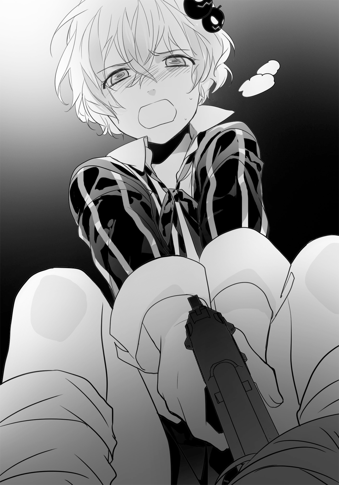
「流壱......」
彼は身体を起こした。
「すまない。助かった」
「礼はいい。リックが電算室で待っている。とりあえずそっちへ」
「マイは？」
「無地目を片付ける」
彼女はゆっくり起き上がる菜菜瀬と対峙していた。
流壱は承諾し、また走り出す。今の彼は武器を持っていない。この場にいるべきではなかった。
校舎に入る。地下駐車場の入り口はシャッターが閉まっていた。スマートフォンを手に取った。
「リック、聞こえるか？」
（聞こえている。すぐに来てくれ。なにかおかしい）
切羽詰まった声だ。流壱は足を速め、扉を全部開けっ放しにしたまま電算室に飛び込んだ。
リックは大きな背を丸めるようにしながら、キーボードに向かい合っていた。複数あるモニターはどれも多くのウィンドウが開かれていて、ソースコードが流れていた。
彼は振り返らずに言う。
「来たか。まずいことになった。カメラの映像が来なくなった。それだけじゃなくて、敷地内の管理システムに不具合がある。命令を受け付けない」
彼はいつもと違い、かなり緊迫した表情だった。
流壱も深刻さを理解した。
「マイが戦ってるし、爆薬の設置場所も分からないのか」
「映像がないからな。下手したら自力で探した方が早いぞ」
太い指が激しくキーを叩いている。だが画面に変化は見られない。
「誰かがシステムに侵入したのかもしれん。俺が気絶している間とかに......」
「どういうこった」
流壱も画面に近づく。プログラミングは専門外だが、予想に反したことが発生していることは理解できた。少なくとも、このような画面は今まで見たことがない。
「リック、復旧はさせられるか」
「時間がかかりそうだな。とりあえずコンピュータの半分を止める。流壱はサーバルームで、俺の指示通りに電源を切ってくれ」
「いいのかよ」
「手を加えられていて、こっちからじゃ操作できねえんだ」
流壱は隣室へ続く扉を開けた。
そこがいわゆるサーバルームとなっている。ひんやりとした空気が流れてきた。大学にあるようなスーパーコンピュータほどではないが、それでもかなり高性能のものが据えられている。
彼はざっと眺めてから訊いた。
「リック、どれを止めたらいい？」
「............」
「おいリック」
振り返り、流壱は息を止めた。
リックは椅子に座ったまま、両手を頭の後ろに回していた。
銃を突きつけられているのだ。背後にはスーツ姿の男が二人。
あいつらだと流壱は直感した。倉庫近くでうごめいていた連中。菜菜瀬と揉み合ったときから、後を追われていたのである。
こいつらは司麻の手下だ。
一人がこっちにこいと顎をしゃくる。流壱は従い、サーバルームから出た。
リックと共に電算室からも出され、そのまま歩かされた。
階段を下りる。男の一人はリックを銃で小突くと、一階から外に向かった。流壱はそのまま地下の駐車場へ。
駐車場内はあちこちシャッターが閉まっていた。その一番奥まで行くと、男は無線でなにごとか会話をした。
一部のシャッターが開く。流壱は後ろから押され、その中に押し込まれた。
「痛っ」
シャッターは半開きのままだ。だから内部がぼんやりと明るい。なにがあるのかよく分かった。
流壱は見上げる。そして息を吞んだ。
「冗談だろ......」
流壱は啞然とした。
彼の眼前には駐車場の一角を埋め尽くす大量のドラム缶と、その上にくくりつけられた爆薬があった。
「無地目のやつ、作りすぎだ。学校を吹っ飛ばすつもりなのか......」
ドラム缶の中身は恐らく肥料系の混合爆薬だろう。起爆用の爆薬は複数のドラム缶にくくりつけられている。起爆の系統は複数に分かれていて、ひとつが不発でも他がまとめて爆発する仕組みだ。
流壱は悟った。こんなのが爆発したら校舎は跡形もなく吹っ飛んでしまう。それこそが狙いなのだと。
「あいつ、これがしたかったのか......」
流壱は呟く。
「学校を粉々にするつもりか。俺の居場所を奪って、傷つけたいんだな......」
「そうだよ」
背後から声がする。
「それが僕の目的だ」
流壱は振り返った。
そこには一人の少年がいた。
背は流壱よりも低く、顔立ちは幼い。体つきも華奢。人混みに紛れたらすぐに見えなくなってしまうだろう。
一見弱々しくも感じられるが、そういう人物ではないことはひと目で分かる。一見男だか女だか分からないのに、あたりを睥睨するようなオーラ。物と人間を従え、自らの手足として躊躇なく動かす人間のものだった。
カリスマ性というのだろうか、一種の強烈な威圧感となって全身から滲み出ていた。
「司麻......」
流壱は呟く。少年はにこりとして返答した。
「兄さん」
流壱の弟、雄琴司麻は天使のような笑みを浮かべていた。
地下駐車場は、いまや危険な火薬庫と化していた。
ドラム缶の山からは起爆装置とコードによって繫がれ、いつでも爆発するようになっている。これだけの量があれば、この場所は跡形もなく破壊されるだろう。菜菜瀬は流壱が頼んだよりも、はるかに大量の爆薬を製造していた。
そしてその場で、兄弟が二人、向かい合っている。
「司麻......」
流壱は喉の奥から声を出した。
「ようやく会えたか」
「僕に会いたかったんだろう。わざわざおびき寄せる真似までして」
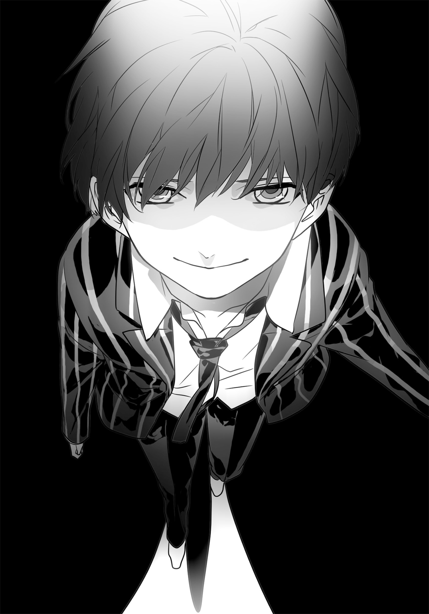
「ああ。とてもな」
流壱は視線を司麻から離さずに言う。
「俺のお前への態度は極端なんだ。あるときは顔も見たくないし、同じ空気も吸っていたくない。できる限り離れていたい。だけどあるときはなにがなんでも会いたくなる」
そして呟いた。
「今日は後者だ」
司麻はにこやかな表情を作る。
「僕はいつだって兄さんに会いたいよ。なかなかそうもいかないけど」
澄んだ声だ。合唱団のテノールでも通用しそうな声質。
「楽蘭高校の野潟は頭がよくないね。兄さんが買い取ろうとしたツングースカを僕にも持ちかけて値を吊り上げようとした。僕も兄さんに会いたかったから利用することにしたんだ。もちろん、悟られることを承知でね」
「子供のやり方じゃない」
「あはは。一歳しか違わないじゃないか」
正確には九か月だ。二人は父親が同じでも母親は別だった。
司麻の母親は医師で、ダイヤモンド鉱山の利権争いを先導した父親が流れ弾を受けたときに知り合った。場所はアフリカ。医療系ＮＧＯに所属していた母親とは立場も性格も違っていたが、いくらもしないうちにそういう関係になったという。
司麻が生まれた前後になって、父親と母親は別れた。紛争地帯を狙うように武器を売るやり方を、母親はとても容認できなかったからだ。だがそのまま自然解消するのではなく、流壱のことも引き取ろうとしたことが問題となった。
流壱の母親は司麻の母親の存在を知っていた。それでも気にしなかったというのだから、心が広いと言うほかない。だが自らの子供まで渡すつもりはなく、罵声と銃弾で対応した。司麻の母親は二人の赤ん坊に硝煙まみれではない生活を与えたかったのだが、しょせん立場が違ったのだ。
結局それぞれの母親がそれぞれの子供を育てることになり、兄弟は離ればなれの生活を送ることになった。
「お前の母親は......貴子さんはなにをしてる？」
流壱の質問に、司麻は肩をすくめる。
「さあ。もう何年も会ってないんだ」
「あれだけお前のことを気にかけていたのに？」
「僕の方から連絡を絶ってるからね。母さんとじゃ性格が合わない」
「自分の母親だぞ」
「兄さんの方が、僕の母さんのことを気にしてるよね。面白い話じゃないか、武器商人の子供が武器を嫌がって、ＮＧＯの医師の子供が、武器を扱いたがってる。うん、ドラマみたいだ」
流壱は吐き捨てるように言った。
「こんなドラマ、視聴率取れねえよ」
「そう言わないでよ。せっかく会えたんだからさ」
司麻はにこやかに笑う。
「それに僕は、ある意味兄さんの恩人なんだから。兄さんを父親の呪縛から解き放った」
「ああそうだな、両親を殺したのはお前だからな！」
流壱は叫んだ。
あの日、彼は同じ車に乗らず、ホテルに留まっていた。なにげなく眺めたバルコニーの外で、ドイツ製のＳＵＶは轟音と共に高々と空を舞っていた。
流壱は両親の乗った車だと直感した。そして吹き飛ばしたのは自分の弟だと。
司麻は少し残念そうになる。
「感謝してくれないの？」
「するか。だいたいお前は俺を救おうとしたんじゃない。自分の仕事のために爆殺したんだろう」
司麻はすでに独立して父親を上回る存在になろうと決めていたのだ。そのため一番の障害となる、父親を殺害したのである。
「あの爆発で全てが決まった。俺は武器の回収を決意して、お前は欲望のままに進んだ」
「でも父さんのコネや財産は兄さんが受け継いだ。そこは感謝して欲しいな」
流壱は睨む。司麻はにこやかなまま。
弟はゆっくりと近づいてきた。
「僕と兄さんは敵同士だ。でも兄弟だからね。兄さんが侮辱されるのは、それはそれで嫌なんだよ」
「だから野潟を脅したのか」
「そういうこと。だって兄さんを殺したり心を折っていいのは、僕だけなんだから」
彼は天井を仰ぐ。無機質なコンクリート。その上に校舎が建っている。
「僕らはろくに学校に行ってない。同世代の友人もいない。僕はそんなのどうだっていいけど、兄さんは違うよね。父さんに奪われたものを少しでも取り戻す。だからここがとっても大事だ」
視線を流壱に戻した。
「僕が無地目を送り込んだ理由が想像つくだろう。破壊したいんだよ、兄さんが大切にしてるものを」
「最初から狙い通りだったのか」
「兄さんが、僕のことも学校も捨てれば長生きできたんだけど、そうはしないよね」
すぐ近くまで司麻は来た。
流壱は動けない。真後ろから銃を突きつけられているのだ。もちろん司麻はそれを承知している。
「リックの才能は便利だから、僕が有効活用してあげるよ。マイは......すぐに死ぬさ」
「そう簡単にいくか？」
「いく。僕は兄さんの大事なものを壊したい。兄さんにはそれを自覚してから死んで貰うんだ」
「ろくな考えじゃねえな。本当に俺の弟なのかよ」
司麻は両腕を広げる。
「もちろん。父さんの息子だし兄さんの弟だ。だから、言うとおりにしてもらうよ」
背後になにかの気配。振り返る間もない。首筋に痛みを感じる。流壱はがくりと膝をつく。目の前に靄がかかったようになり、意識が混濁してくる。
薬を注射されたと感じたが、どうすることもできずに流壱は意識を失った。
○
マイと菜菜瀬はほぼ向かい合う状態となっていた。
一人の手にはギターケース。もう一人の手には自動拳銃。奇妙な取り合わせが深夜の学校で対決していた。
「私が相手をする......」
マイが低いが、よく通る声で言った。
「流壱を殺そうとした罪は軽くない」
菜菜瀬がにやりとする。
「おや、あんたは裏切ったって言わないんだね」
「こうなると思っていた。信じていなかった」
「さすがワンちゃん。番犬並の警戒心」
「流壱はギリギリまで他人を信じることができる。でも私は、最初から信じない」
「そりゃ感心するけど、ここでどうやって戦う？ ワンちゃんの武器はナイフでしょ。ここまで届く？」
そう言いながら、菜菜瀬はＰ２５０を続けざまに発砲した。
マイは素早くギターケースを盾にする。弾丸はケースに食い込んで潰れた。
「前と同じパターンだけど、状況は全然違うよ！」
菜菜瀬が叫ぶ。彼女は横に回ろうと動いた。そしてマイに距離を詰められないように、一定の間隔を保っている。
以前の戦いと違って開けた場所だ。飛び道具を持っている方が有利に違いなかった。
マイの周囲とギターケースに、９ミリ弾が次々と着弾した。
「弾はまだまだあるよ！」
「......それが？」
「あたしが有利ってこと！」
彼女は弾倉を入れ替える。警戒しているため、マイは接近できない。
再び射撃音。マイは後ろに跳ぶが、きちんと着地できずに仰向けに転んだ。
そのまま地面に転がる。同時にギターケースのロックを外す。蓋が大きく開く。空っぽの中身が露わになった。
「それがなんだっていうの!?」
菜菜瀬が嘲るように笑おうとする。が、その笑みが止まった。
マイが指で内側を弾く。中蓋が浮き上がって取れると、そこに収められているのはＨ＆Ｋ社製Ｇ36Ｃアサルトライフル。
「二重底!? 手品じゃあるまいし！」
マイは身体を大きく捻った。ギターケースを捨て、両腕でＧ36を保持。銃口を菜菜瀬に向け、引き金を引く。
高らかな発射音。ライフル弾が菜菜瀬の周囲をかすめた。
立場逆転。今まで距離を取っていたことが、菜菜瀬にとって裏目となった。
開けた場所ならアサルトライフルの方が優位だ。しかも二人の距離は離れている。マイはしっかりと照準を合わせていた。
「諦めろ。諦めなくてもいいが、単に死ぬだけだ」
菜菜瀬は手を上げなかった。
「なんかどっちもしゃくね」
「三秒待つ」
「トラックに積むはずだった爆薬を、あたしがどこに仕掛けたか知りたくない？」
「いいだろう。五秒にする」
「結局短いじゃない。学校の中よ、中」
「そんなのは知っている」
マイの人差し指に力がこもる。菜菜瀬は続けざまに喋った。
「校舎の真下。地下駐車場だって。トラックに積まずに、そのまま仕掛けたの。爆破したら校舎なんて消し飛ぶよ。起爆は誰がするんだと思う？ あたしじゃない」
「............」
マイの目が細くなる。わずかだが唇も嚙んだ。
「信崎君とリックが校舎にいるんでしょ、助けた方がいいんじゃない？」
その台詞に、マイの視線が校舎側に動いた。
いつもの彼女なら絶対にやらない仕草だった。敵が眼前にいるときは注意を散漫にしてはならない。だが二人の仲間が危険に晒されていることが、わずかだがマイの心に動揺をもたらした。
菜菜瀬はその隙を見逃さなかった。
Ｐ２５０を持ったまま地面を蹴る。身体を低くしてマイの懐へ飛び込む。腹部に銃口を押しつけようとする。
「まずったわね、ワンちゃん！」
マイはＧ36の引き金を引かなかった。代わりに力一杯ストックを振り払った。
ちょうど菜菜瀬の手に当たる。握られていたＰ２５０は鈍い音と共に遠くへ飛んでいった。
「くっ！」
銃口を向けようとするマイ。そこに菜菜瀬が摑みかかった。もつれて転倒する。
二人の少女はＧ36を中心にして転倒する。菜菜瀬が手に嚙みつき、マイはたまらずＧ36を離す。
菜菜瀬がそのまま奪おうとしたところを、マイは蹴飛ばした。Ｇ36はどこかに飛び、菜菜瀬の顔が険しくなる。
「これでどっちも銃はなしね！」
まだ転がりあったままだ。二人は同時に自らのスカートをまくり上げ、太腿に手をやる。
マイはベンチメイド社製のフィクストナイフを抜き、菜菜瀬はガーバー社製の折りたたみ式ナイフを開く。双方は闇夜に刃を煌めかせ、斬りかかる。
金属同士がぶつかる鈍い音。どちらも刃が一部欠けた。
「乱暴ね、ワンちゃん！」
「そっちこそ」
マイは菜菜瀬の足を蹴飛ばす。相手のバランスを崩してから立ち上がり、刺そうと腕を伸ばす。
菜菜瀬が半身になった。心臓に刺さることだけを避け、ナイフを持ったマイの腕を狙おうとカウンターで突き出した。
また金属が衝突する音。
どちらの攻撃も当たらなかった。マイがとっさにナイフの背で攻撃を受けたからだ。双方は息を吐くと、同時に離れた。
菜菜瀬がにやりとする。
「やるねえワンちゃん。本業は狙撃だと思ったけど」
「お前も爆弾だろう」
「実はナイフってあんまり好きじゃないの！」
菜菜瀬がナイフを突き出す。斬るのではなく刺す動き。マイはナイフで反撃せず、ほんの少しだけ横に動く。
マイは菜菜瀬の腕を脇で挟んだ。相手は身動きが取れなくなる。
そして白い喉元に、自らの刃先を突きつけた。
菜菜瀬が完全に動きを止める。その手から折りたたみ式のナイフが落ちた。
「好きじゃないのは本当だな。下手だ」
マイの台詞に、菜菜瀬は観念したように息を吐いた。
「......負け、か」
「そうだ。再試合はない」
マイの目は菜菜瀬に注がれていた。もう注意を逸らすようなことはしない。生殺与奪を手放す真似はしなかった。
「諦めろ」
「......あたしを殺す？」
「そうしたいが流壱が好まない。まだお前に希望があると思っている」
「なにそれ」
「流壱は他人に希望を見出すのが得意だ」
菜菜瀬はかすかに笑っていた。
「わあ素敵。でもあたしは信崎君を裏切ったし、こういうことすると普通は二度と信じてもらえなくなる。ワンちゃん、あんたも分かってるんでしょう」
「そうだ。殺した方がいいと今でも思っている」
マイのナイフは菜菜瀬の喉元に触れそうになっていた。ほんの少し力を入れるだけで皮膚は切り裂かれ、血が噴き出すだろう。
だが彼女はそれ以上は動かしたりしなかった。
「それでも流壱が殺すなと言うのなら、私もそうする。理由は説明しても分からないだろう」
「ふん......立派ね」
ナイフを突きつけられているにも拘わらず、菜菜瀬は鼻白んでいた。
「じゃああたしをどうするつもり」
「どうもしない」
マイは菜菜瀬を離した。ナイフをしまう。
「今はお前よりも流壱とリックが大事だ。校舎が爆発するのは私も好まない」
「解体に手は貸さないよ」
「好きにしろ」
ギターケースとＧ36を拾った。背を向けようとして、一言だけ言い添える。
「生きるも死ぬも、お前の自由だ」
それから急いで校舎へと向かった。
「ふん......恰好つけちゃって」
菜菜瀬は呟くと、足元に落ちていたナイフを拾い上げる。捨てようとしてから思い直し、元のところにしまった。
それからふらふらと倉庫へと向かう。すでにマイを追いかけ、戦いを挑む気力はなくしていた。
倉庫に着く。ここに戻った理由は、やることを思い出したからだった。
中程まで進む。血の跡が見える。水希はまだ、床を転がり回っていた。
「痛い......誰か......」
菜菜瀬はしゃがみ込んだ。水希の手は砕けているが、今のところ命に別状はなさそうだった。もっともこのまま血が流れ続けたらどうなるか分からない。
「あんたも大変ね」
「ううう、うちがなんでこんな目に......」
「信崎君を脅したんだから、ちっとは我慢しなさいよ」
「あんた......助けてくれんの......？」
「もののついでってやつ」
それにしても、よく身体の中心を狙わなかったものだと彼女は思った。あえてナイフを持つ手だけを撃ち抜いたのだから、よほど自信があったのだろう。あるいは殺すことを止められていたか。
後者だろうなと菜菜瀬は見当をつけた。
水希は苦悶し続けていた。手当てをしないといけないが、どうしたらいいか。まずは止血だ。
と、人の気配がする。
顔を上げると一人の少年がそこにいた。司麻。流壱の弟だ。
「手こずっているみたいだね」
彼は優しげな声音をしていた。あくまで穏やかだが、甘えを許さない雰囲気。
菜菜瀬は軽く首を振る。
「そういうわけじゃない。ちゃんと仕事はやってるわよ」
「うん、確かにそうだね。だけどマイには情けをかけられた。兄さんも、結局殺せなかった」
「どうだっていいじゃん。やる気がなくなったの。それに、野潟をこのまま放っておいていいの？」
「手当てをするつもり？」
「このままじゃ出血死するよ」
苦しがっていた水希だが、自分のことだと気づいて目を開けた。
少年を見るや否や、大きく瞳が見開かれる。
「し......司麻......。た、助け......」
銃声。水希の身体は小さく跳ねて、動かなくなる。
司麻の手には、いつの間にかベレッタＭ92自動拳銃が握られていた。
「これで手当ての必要はなくなった」
菜菜瀬は水希の死体をじっと眺めていた。
「......むごいことを」
「必要なくなったからね」
「じゃああたしも必要ないんじゃない。もう爆薬はセットした。約束は守ったんだから、これで終わり」
司麻は意外そうな顔。
「おや。下りるつもりかい」
「終わったってこと。当初の予定通り、あたしを解放して自由にしてもらう」
菜菜瀬は司麻に詰め寄った。
「あんたは、約束を守るって言った」
司麻は微笑みを絶やさない。菜菜瀬の殺気混じりの詰問にも、動じてはいなかった。
「言ったよ。それに、僕はもう約束は守ったんだ」
「証拠は」
「あるよ」
司麻はスマートフォンを取り出す。いくつか操作して動画を再生した。
菜菜瀬の眼前に突きつけた。
「見てくれ、ほら」
怪訝な表情を浮かべていた菜菜瀬だったが、すぐに釘づけとなった。
目は見開かれ、顔からは血の気が引いていく。
「し......司麻......」
「どうしたの」
「こ、これ......」
「ねえ、僕はちゃんと約束を果たしているだろ。我ながら律儀だと思うよ」
司麻は彼女の肩に手を回す。スマートフォンの画面は見せたまま。
「もちろん君も自由にする。それも、僕のやり方でね」
あくまで静かな語り口。囁き声にも近かったが、その言葉は見えない鎖も同然。
菜菜瀬に逆らうことは不可能となっていた。
○
荷堂学院の正門に向けて歩く影が二つ。一人はのろのろしながら頻繁につまずき、もう一人は苛立たしげに急かしていた。
リックと彼を見張っている男である。正門付近に駐車してある車へと向かっていた。
歩みは遅い。リックがゆっくりとしているためだ。時々咳き込んだり、足をもつれさせたりしてなかなか進もうとしない。
「さっさと歩け」
男が小突く。リックはしょうがないと言いたげだった。
「脅されているのでうまく歩けない。臆病なんデス」
「ふざけているのか」
「いーえ」
正門のすぐ外にＳＵＶが止めてある。いつからあったのか分からなかった。監視カメラに発見されないようにするため、システムを細工したんだろうなとリックは思った。
ＳＵＶのライトが短く二回光る。運転席に一人だけ乗っていた。
リックは正門へと近づいた。
「......なあ、あんた」
「喋るな」
「車に乗っているのはあんたの仲間だろ。他にいるのか」
「黙れ！」
門を抜ける。連れてきた男がＳＵＶの後部ドアを開けた。
後部座席には誰もいない。つまり全部で二人。
「もう一人いれば、まだどうなるか分からなかった」
リックの言葉に男が疑問を持った瞬間。
銃声と共に男がのけぞった。続いて助手席の窓が粉砕され、運転席の男が悲鳴を上げる。その二回だけで全てすんだ。
敷地からマイが駆け寄ってくる。彼女はＧ36Ｃアサルトライフルを手にしている。これでリックを救出したのだった。
「マイ、いい射撃だ」
車内を確認する。男はどちらも生きていた。重傷だがすぐに死ぬことはないだろう。
「だがちょっと遅かったぞ」
リックはポケットからスマートフォンを取り出す。これで自分の位置を発信し続けていたのだった。
詫びもせず、マイは答える。
「はじめに地下駐車場へ行っていた。あそこはシャッターが全部閉まっている」
「司麻の手下が管理システムに侵入したんだ」
「無地目はあそこに爆弾を仕掛けたと言っていた」
「まずいな。流壱も捕まったはずだ。なんとかしなきゃならん」
「戻ろう」
リックはマイと共に、校舎へと走った。
第五章
流壱はゆっくりと目を開けた。
まだ薬のせいで頭が上手く働かない。気分もよくなく、ときおり吐き気が襲っていた。
目の前が霞がかかったようになっている。暗がりでもあるらしく、よく見えない。どこか部屋に閉じこめられているのだろうか。
徐々にはっきりしてきた。
暗いが、ランプが点いているようで視界に不自由はしない。手と足が動かず縛られていた。そのまま床に転がされている。ひんやりとした感触があってざらついているから、コンクリートの床だ。
起きあがるのに苦労しそうだったので、そのまま見回した。すぐ目の前にはスマートフォン。流壱のものだった。ポケットにしまっておいたはずだったが、飛び出たのだろうか。そしてその先には円筒形の物体がいくつも並んでいる。
ドラム缶とくくりつけられた爆薬。認識した途端に頭が冴えた。ここは学校の地下だ。爆弾が設置された場所に置き去りにされているのだった。
状況が理解できた途端、スマートフォンが震えた。
着信だ。両手を縛られているので触れないが、勝手に音声が流れ始めた。
（やあ、兄さん）
「司麻っ！」
流壱は叫ぶ。
「よくもやりやがったな」
（兄さんは油断しすぎなんだ。そんなんじゃあこの商売をやっていけないよ）
電波状態がよくないためか、司麻の声は若干くぐもって聞こえていた。
（とりあえず兄さんには、爆弾をプレゼントすることにした。死ぬと思うけど、学校も消えてなくなるんだからちょうどいいよね）
「手の込んだことしやがって」
（そのまま死ぬかどうかは兄さんの自由さ。僕は結構寂しいよ。肉親を失うんだからね。兄さんも悲しんでもらえると嬉しい）
通話が切れた。
「あの野郎っ......」
薬を打ったのが司麻の部下である以上、置き去りにしたのも司麻のはずだ。
「俺ごと爆破するつもりかよ」
思わず罵る。
「一人地下で埋もれたまま人生終了させんのか......！」
「そうでもないわよ」
右後ろから声。流壱は苦労して振り向いた。
「寂しくないように、あたしを置いていったから」
壁際で、やはり同じように縛られていたのは爆弾のエキスパート、菜菜瀬であった。
菜菜瀬は壁に寄りかかる恰好でこっちを見ていた。投げ出された両足は流壱と同じように結束バンドで縛られている。手の具合は見えないが、どうやら壁際のパイプに結びつけられているらしい。
彼女の姿を、流壱はそれほど意外には思わなかった。
「裏切られたな、無地目」
「捨てられたって言った方が正しいなあ。なんかもう雇用関係は解除だって。その割にはあたしを縛ったままにしたのよねえ」
菜菜瀬は自嘲するように笑う。
「信崎君の弟のおかげで、あたしの人生もこれっきりってわけ」
「そりゃあ災難だ」
流壱も軽く笑った。すぐ近くに死が控えているというのに、二人には奇妙な落ち着きがあった。
「司麻なんか信用するからそんな目に遭うんだ」
「信用してたわけじゃないけど、彼ってこっちの予想より上回ってくんのよね。気を抜いたときにやられた」
「あいつの見かけや雰囲気にみんな騙されるんだよ」
司麻の独特なカリスマ性に惑わされた人間は数多くいる。人生経験が豊富だろうと勘が鋭かろうと関係なかった。むしろ自分の能力を過信しているものこそやられていった。
「じゃ、逃げ出さねえとな。この際だ、無地目も協力しろよ」
「どうやんの」
「なんとかすんだよ」
流壱は再び身体をごそごそやった。足も手も結束バンドで締め付けられている。血が止まるほどではないが、とても自由に動くことはできない。
「無地目。あのドラム缶爆弾、お前が作ったんだろ。起爆はどんな仕組みだ」
「時限式と遠隔操作の二段構えね。あと適当にコードを切ったり、ドラム缶を横倒しにしたら爆発するから」
「タイムリミットはどれくらいだ」
「司麻の設定次第。タイマーはあるけど、ここからは見えない」
「くそ。なんてこった」
身動きするが、手足を縛っている結束バンドは容易に外れようとしなかった。幾度か床を転がったが、どうにもならない。
さきほどから沈黙しているスマートフォンが目に入った。
これなら外部と連絡を取れるかもしれない。だが手は使えない状態だ。
「一か八か......！」
流壱は這ったままスマートフォンに近づくとマイク部分に喋る。
「音声認識」
画面がぱっと明るくなる。音声認識システムが作動。
「リック。電話」
ダイヤルがはじまる。コールなしにリックが出た。
（流壱か、どこだ!?）
「校舎の地下駐車場だ。お前よく逃げられたな」
（マイに助けられた。そっちは無事か？）
「俺と無地目が捕まってる」
（無地目まで？）
「ともかく縛られて身動きがとれん。目の前には爆薬の詰まったドラム缶が大量にある。最悪だ。シャッターだけでも開けてくれ」
（途中はなんとかなるが、そっちの周辺だけはどうにもならん。司麻がシステムを搔き回したんだ。マイに代わる）
即座にマイが喋った。
（流壱、すぐに助ける。待ってて）
「通話は切るなよ」
（分かった。すぐに着く）
一度だけリックが代わったので、「システムを直したら司麻のことを追跡してくれ」と告げておく。黒人の青年が承知するころには、すでにマイは地下へと向かっていた。
流壱はほっとして、上半身を起こした。
菜菜瀬はそれらの仕草を黙って眺めていた。
「ワンちゃん来るんだ。忠実だこと」
「文句言うと助けてやらねえぞ」
「信崎君を殺そうとしたのに？」
「今はもうそんな気にならねえだろ」
実際に菜菜瀬からは殺気といえるものが存在しなかった。正体を現す前の、明るい同級生に戻ったかのようだ。ただ若干投げやりな印象は受ける。
「マイが来たらちゃんと無地目のことも助けるよ」
「あのワンちゃんとどういう関係なの？」
「聞いてないのか？」
「リックは大ざっぱに教えてくれたけど、ワンちゃんは答えてくれそうにない」
流壱は少し考えてから返事をした。
「麻薬漬けになっていたところを、拾ったんだよ」
「話聞いてると、それだけじゃあんなに忠誠示しそうにないんだけど」
「一緒に生きようぜって言ったのさ」
「それなに？」
菜菜瀬の質問に返事はしなかった。身体を左右にもぞもぞさせる。
「どうしても抜けねえ。無地目は脱出できないのか？」
「無理かな。壁のところから動くことも不可能なのよ」
「マイを待つか？」
流壱は息をついて天井を見上げる。オレンジ色のランプに照らされた、無機質なコンクリートが目に入った。
「......さっきの話だけどな。俺は親父の仕事の後始末でフィリピンに行ったんだ。警察も軍隊も手が届かないところ。前に親父が雇っていたグループがいたんだけど、一人を除いて弾避け代わりに死んだ。残った一人はたちの悪いゲリラに捕まって、薬漬けにさせられた。それがマイだ。俺は探し当てて日本に連れ帰った」
「ひょっとして彼女を助けるのが後始末だったわけ？」
「そういうこと」
「めんどくさいことしたのね。どうして？」
「そうするって決めたからさ」
不意に、シャッターの外から物音がした。
誰かが駆け寄ってくる。同時にスマートフォンから音声が流れた。
（流壱！）
「マイ、どこだ」
（今ついた）
足音がシャッターの向こうで止まる。
「鍵がかかっているはずだ」
（破壊する。下がっていて）
その時、菜菜瀬が口を挟んだ。
「止めた方がいいわよ」
会話を中断して、流壱は彼女を見る。
「なにが」
「鍵を壊したら連動してドラム缶が爆発するから」
見ると、シャッターからコードが床を這っており、ドラム缶に繫がっていた。
「あまりシャッターを叩いても振動で吹っ飛ぶよ」
流壱は急いでマイに「なにもするな」と伝えた。
「教えてくれて助かった」
「なんとなくよ。別に吹っ飛んでもあたしはよかったんだけどね」
「そういうことを言うんじゃねえよ」
しかし外から開けられないのなら、内側からどうにかするしかない。問題は身動きが取れないことだった。
「この縛ってるのをどうにかしないと駄目か」
手足を抜くことができないか、何度も身をよじる。締まりもしないが緩みもせず、自由にはならなかった。
「マイ、シャッターに隙間かなんかないか」
（見あたらない）
「自分でなんとかしろってことか。無地目、ナイフかなにかあったらくれ」
「マイとやり合ったときに使ったのがあるわよ。左太腿の外側に仕込んである」
拳銃は司麻に取り上げられていたが、それだけは見落とされたと菜菜瀬は告げた。元々が爆弾使いなので、ナイフは所持してないと思われたのだろう。
「でも肝心の両手がこれじゃ使いようがない。諦めるしかないわね」
彼女は諦観しきったように、天井を仰いでいた。
「自分で作った爆弾に吹っ飛ばされるなんて、相応しい末路ね」
（無地目がいる......？）
マイの声がスマートフォンから流れる。菜菜瀬はシャッターに向けて叫んだ。
「安心していいよ！ あたしもここで死ぬみたいだから」
「俺は死ぬ気ないぞ」
流壱は床を這いずり、なんとか彼女の所まで移動した。
「ナイフくれ」
「だから取れないって言ってるでしょう」
菜菜瀬は壁のパイプに後ろ手を回す恰好で拘束されていた。スカートのポケットにはとても手が届かない。
「じゃあ俺が取る」
流壱は後ろを向いたまま、スカートをまくり上げようとした。
「ちょっと、なに考えてんの！」
「うるせえ。見えないんだからいいだろ」
「無理だって言ってるのに」
「やってみなきゃ分かんねえよ」
なにをしているのだと、戸惑ったような雰囲気がシャッターの外から伝わっていた。
流壱は手をごそごそさせた。温かい肌の感触だけが伝わってくる。金属の冷たさはまだない。
「きゃっ。信崎君、くすぐったいんだけど!?」
「どこにあるんだかさっぱりだ。指示してくれ」
「ナイフは太腿の外側。今のあんたは内側を触ってんの！」
流壱は手を動かす。固定用のバンドらしきものに当たった。
「そこに沿って外側」
言うとおりにする。と、ナイフらしき固いものに触れる。流壱は手に力を込めた。
「抜くぞ」
身体ごと動かしてナイフを抜いた。
一息ついたが、問題はこれが折りたたみナイフなことだ。しかも流壱は目で見て開くことができない。
「これ、開けられるか？」
「だから縛られて動けない」
流壱が自分でやるしかない。寝転がったまま、不自由な両手でなんとかしようと、しきりに動かした。
見えない上に汗で滑る。おまけにいつ爆発するか不明だ。焦れば焦るほど、ナイフは言うことを聞いてくれなかった。
「......無駄かもしんないわよ」
菜菜瀬がぽつりと漏らした。
「あと数秒後にタイマーがゼロになるかもしんないし、遠くからボタン押されるかもしんない。ワンちゃんに逃げるよう伝えた方がいいと思うけど」
「弱気だな」
「だってそういう爆弾をあたしが作ったから。ついでに言うと、これまであたしの爆弾は百パーセント爆発してる」
「じゃあ今回がはじめての不発だ。運がなかったな」
苦心惨憺。ナイフの背に指がかかる。
「よしっ......と」
ナイフを開いた。ここからがまた大変だ。へたをしたら結束バンドではなく自分の指を切る。
「無地目。ちゃんと切れるかどうか指示してくれ」
「............」
「おい、無地目」
流壱は首だけ後ろに向けた。
菜菜瀬はうつむき加減でぼんやりしている。気が散っているというより、全身から活力がなくなったような印象だった。
「しっかりしろ。ぼやぼやしてたらお前も死ぬんだぞ」
「そうね、でも、それも仕方ないって思えてきた」
意外な台詞に流壱は疑念の声を発する。
「はあ？ なに言ってやがる。自殺願望か？ 俺を付き合わせるな」
「司麻に言われたの。あたしはここでおしまいなんだって。そういう道を選ぶって」
「それがあいつの手だ」
「だったら効果的ね」
菜菜瀬は口元だけで笑った。
「あたし、信崎君みたいに薬で眠らされたわけじゃないんだ。抵抗することもできなくなってここに追いやられた」
流壱の、ナイフでバンドを切ろうとする仕草が、一瞬止まる。
「お前とあろうものが？」
「ええ......実はね、あたしこの仕事を最後に、組織を抜けさせてくれって頼んだのよ。そしたらボスが、司麻の仕事をやったら抜けるのを認めるって言われた。ボスと司麻はいい取り引き先同士だからね。恩を売るつもりもあったんだろうけど......だから信崎君を殺そうとした」
ぼんやりと語っている。聞きながら流壱は、刃をなんとかバンドに当てようとしていた。
「くそ、うまくいかねえ。......事情は知ってるよ」
「まさか」
「菜菜瀬の経歴を調べたときにピンときた」
「あたしのなにを理解したのよ」
「お前の記録を読んだ。最後の爆破事件から数か月間があった。仕事から離れていたのは辛かったからだろう」
彼は冬香から知った情報を、思い出しながら喋っていた。
しばらくの無言ののち、菜菜瀬は首を縦に振る。
「そう。あんな仕事引き受けたばっかりに、ね。最悪だった」
「話せよ。黙ってたら気が滅入る」
「聞いてもつまんない」
「いいから」
「......ワンちゃんがあたしに言った言葉覚えてる？ 犯罪を犯すと一度目は心を痛めるって」
「ああ」
「よく分かるって言いたいところだけど、実は分からない。なぜなら最初に人を殺したのがいつだったか、まったく覚えてないから。最初は肥料爆弾で敵対マフィア屋敷を爆破したはずなんだけど、もうほとんど覚えていない。それからいくつも爆弾つくっていくつも吹っ飛ばした。良心とか常識なんてのも一緒に粉々になったのよ。だから気にならないはずなんだけど、なぜかあのときだけはそうじゃなかった」
菜菜瀬はゆっくりと、数か月前の出来事を語り出した。
彼女がこれまでおこなった爆弾事件は、じりじりと心を蝕んでいた。どれだけ強がっても忘れようとしても、死んだ人たちのことは心に残っていく。それらは澱となり、棘となって精神を傷つけた。
そして東南アジアでの仕事。ショッピングモールの爆破。敵対組織に買収された知事が訪れるというので、護衛ごと吹き飛ばそうとゴミ箱に仕掛けた。自らを有名人だと思い込んでいる知事がショッピングモールを貸し切るとの情報を摑んだから、派手にやろうと量も増やした。
だがそうはならなかった。
ショッピングモールに殺到する消防車と救急車。血塗れになって出てくる親子連れを、菜菜瀬は茫然と見つめていた。貸し切りにはならず、一般客もいたのだ。知事も死んだはずだが被害の多さで記憶にない。泣き叫ぶ子供の声がいつまでも耳の奥で反響していた。
我に返ったときには、身を引くことを決意していた。
菜菜瀬は言った。
「だけど組織はあたしを手放そうとしなかった。だから武器を売り来た商人――司麻に頼んだのよ。抜けたいから手伝ってくれって。そうしたらすぐボスに話をつけた。最後の仕事をすればちゃんと抜けられる。ボスのことはなんとかするから心配するな。だからここに転校してきた」
流壱は顔をしかめる。指がちくりとした。刃で切ったようだ。いちいち騒ぐのはみっともないので我慢した。
「記録を見て気づいたんだが、無地目は爆弾を作っても犯罪関係者だけを狙っていたな。だからショッピングモールのことを後悔した」
「そういうこと」
「司麻はその心の隙を突いた。約束を破られたか」
今度の菜菜瀬は首を横に振る。
「あいつは約束をちゃんと守ったわよ」
「それでこれか？」
「ええ。守ってはくれたけど......」
菜菜瀬の瞳が遠くなる。彼女は司麻から見せられた映像のことを訥々と語り出した。
あのとき、司麻は「これはプレゼントだよ」と言った。自らのスマートフォンを操作し、動画を画面に映した。
そこは南米の農園だった。広い屋敷に見渡す限りの農地。栽培しているのはケシだ。
そして屋敷は血にまみれていた。
もちろん外側からは分からない。だが窓という窓がべっとりと血で汚れている。内部でなにかあったのだ。外壁には大穴が空いており、そこからなにものかが侵入したことは明白だった。動画は建物全景を収めてから内部に移動する。
そこには死体があった。
大人の男性と女性。胸は穴だらけになっており、床中血塗れだ。二人だけではない、幼い子供が五人と使用人らしき中年女性もまとめて射殺されていた。
菜菜瀬は茫然と動画を眺めてるしかなかった。
「なんだか分かる？ 所属してるマフィアのボス。みんな死んでいたわ。罪がないはずの子供も含めてね」
彼女は続けた。
「一家全員殺害されていた。ボスだけじゃなくて、四人の幹部も同じ目に遭った。子供たちだけじゃない、たまたま居合わせた近所の人も。近くを歩いていただけの人も。やったのは司麻の手下」
「ひどいな」
「確かにあたしはもう、組織のために働かされることはなくなる。麻薬の売上げで豚みたいに太ったやつの手先にならなくてすむ。でも、これはなに？ こうしないとあたしは抜けられなかったの？」
「......司麻はそういうやつだ」
流壱は呟く。
「あいつは一番簡単で一番効果的な方法をとる。無地目の考えなんか考慮しない」
「そ。司麻は言ったわ。これで君は自由だ。でも自由になったのは肉体だけだから、心も一緒に自由にしてあげよう。あたしは茫然としたままそんな言葉を聞いて、ここに連れてこられた。抵抗する気なんて、とっくに失せていたわよ」
絞り出すように、菜菜瀬は語っていた。
流壱には司麻の表情が手に取るように分かった。弟はためらったりしなかったろう。ごく自然に動画を見せ、普通に手を引いて閉じこめたはずだ。菜菜瀬が抵抗しないことも確信していたはず。なにもかも彼の思い通り。
「でもねえ、あたしには司麻の言ったことも正しいって思っちゃうの」
「だからあいつの手口なんだ」
「でしょうね。でも、ここで粉々になって死ねば、もうあんな思いをしなくてすむのよ」
菜菜瀬は、大きく息をついた。
「だからもういいってわけ」
流壱は手を乱暴に動かす。結束バンドを、なんとかナイフの刃に当てることができていた。うまくすれば切断できる。
「女子高校生が、悟ったような口ぶりだな」
「今までの経験が濃すぎたのよ」
「俺もそんなもんだが、往生際は悪いぜ」
不意に手が軽くなる。
結束バンドの切断に成功していた。ナイフのせいで手も指も血だらけだが、両手は自由になっていた。
嬉々として足のバンドも切る。
「やったぞ。無地目、お前のナイフのおかげだ」
「最後に役に立ててなにより」
流壱は菜菜瀬を拘束しているバンドも切断した。
「爆弾を解体するぞ。作ったのは無地目だ、指示してくれ」
菜菜瀬も身体は自由になっていたが、座ったままだった。流壱はもう一度声をかける。
「無地目、おい」
「......あたしはいいわ」
「馬鹿、ここが吹っ飛んだらなにもかもパーだ」
「墓石代わりにちょうどいい」
妙に諦めがよく、さばさばしていた。
とはいえ、このままではドラム缶の山が爆発することは避けられない。運よく出られて外に走っても、逃げ切れるかどうか。だとしたら、やることは一つだ。
流壱はシャッターから出なかった。ドラム缶の上に登る。
半分以上のドラム缶に爆薬がつけられ、無数のコードが伸びていた。起爆装置らしきものもあるにはあるが、やはり複数あるのでどれがどれだか分からない。
「無地目、どうしたらいい!?」
当然のように返事はない。一人でやるしかなかった。
下手にコードを切断したら起爆するだろう。確認のため、手近な起爆装置を取った。
黒く塗られていて、コードが数本起爆用の爆薬に伸びている。蓋を無理矢理こじ開ける。
爆発はしない。だが内部には基板があるだけでタイマーや受信装置のたぐいはなかった。
「どれが本命なんだ」
「............」
流壱は慎重にドラム缶の上を歩く。こうなったら片っ端から解体するつもりだった。
爆発しないようにと念じながら箱を開ける。
「なあ無地目、ここで生き残ったらお前はどうする」
「......あり得ないかな」
「いいや、俺は助かると思ってるぜ。無地目も助ける」
彼は断言した。菜菜瀬は即座に言い返す。
「信崎君を裏切ったんだよ」
「関係ない。何度でもお前を助けるさ」
「どうして。あたしは今までたくさん人を殺してきた。身体も心もいい感じにズタボロでただの役立たず。助けない方がいいわよ」
「お前を見てて思ったんだ。俺を殺そうとしたけど、夜とか、人のいない時を狙ってるよな。確実に引退したいなら無差別にやればいいんだ。だけど無地目はしなかった。理科実験室の爆弾だって、せいぜいあそこ限りのものだ。無差別なんてやるつもりなかったんだろ。よけいな死者を出したくなくて、そこを司麻に狙われた」
流壱は振り返る。菜菜瀬を見た。
「俺は無地目の正体を知っていた。リックも知っていたし、マイも知っていた。けど、無地目を捕らえたり、殺したりする気になれなかったのがそこなんだ」
「あたしは善人じゃない。偽善者にはなれても善人にはなれない」
「分かってる。でも、俺はお前と共に歩めると思った」
少しの間、菜菜瀬は沈黙した。
やがて、勢いよく喋り出す。
「あたし宗教や自己啓発は嫌いよ。そんなの司麻と同じ。希望があるように見せかけて、そんなのはどこにもない。救うように見せかけて絶対に手は差し伸べない。自分だけはいいように語って、なにもかも全てこっちに押しつける。あたしが苦しんでも自己責任って言い放っておしまい。だったら今までのことを後悔しながら死ぬ方がよっぽどましじゃない」
息を切らし、肩を上下させながら菜菜瀬は喋り続けていた。
「おためごかしは止めて。助けなんかないし、いらないのよ。モールが爆発したときに悟った、司麻に動画を見せられたときに悟ったの！」
感情の発露。心の底に秘めていた、菜菜瀬のもっとも人間らしい部分。
流壱はそれらを正面から受け止め、なおも言葉を紡いだ。
「それでも俺は、無地目に生きて欲しい」
「どういうこと？ キリスト気取り？ あたしを救う気なの？」
「いいや。俺は神じゃない。宗教家でもない。他人を救えるほど立派な人間でもない。だけどそれは歩かなくていい理由じゃない。クズ同士でも、共に歩くことならできる」
彼は言い切った。
「俺たちは落伍者だ。トラウマを抱えて人を殺す偽善者だ。だけど少しずつ、進むべきだ。痛みを抱えながら生きるべきなんだ。そうすればちょっとは世間に顔向けができるようになる」
流壱は思い出していた。あの日、両親の乗ったドイツ製ＳＵＶが高々と舞った時のことを。それが父親の売った爆薬であることを。
使ったのが司麻であることを。
この日を境に、流壱は自らの意思で道を進むことを余儀なくされる。なにもせず石のようにじっとして一生を終えるか、父親の仕事を引き継ぐか。
どちらも取らなかった。
第三の、自分で切り開くことを選んだのだ。
それは少しずつ進むことであり、矛盾と偽善とジレンマを全て内包した、馬鹿馬鹿しいことでもある。
だがそうするしかないと確信したのだ。
「この道を進むのに後悔はないし、しちゃいけないって思ってる......」
菜菜瀬の顔に感情のぐらつきがうかがえた。彼女はそれらを振り払うように言う。
「でも......！」
不意にスマートフォンが喋り出す。
（流壱の言うとおり）
マイだった。いつもの口調で、抑揚のない喋り方をしていたが、やけに耳に残った。
（私はゲリラに捕まって、麻薬漬けにされた。売春宿に放り込まれる寸前に、救ってくれたのが流壱だ。彼がいなければ今ごろ、警察も来ないようなスラムで客を取っていたはずだ）
「だからなんなの」
（前に進める機会があるなら、そうするべきだ。泥沼の中で沈むだけの人生よりは、生きている実感が湧く）
彼女の声は、スマートフォンとシャッターの向こうから、同時に響いた。
（私もリックも流壱も、みんなそうやって生きている）
「............」
流壱は菜菜瀬を見据えた。
「俺と、俺たちと一緒に行かないか」
彼の台詞を、菜菜瀬は黙って受け止めていた。
やがて静かに、言葉を発する。
「それから......どうすんの。最後は？ どこに行き着くの？」
「分からない。でもいいとこじゃないさ。武器商人にハッカー、殺し屋に爆弾犯に楽天地は似合わねえよ」
流壱は続けた。
「でも、そうだな、今よりはほんの少しだけ、心が軽くなる場所だと思うぜ。なあに」
彼は手を差しのばす。
「寂しくはないさ、俺たちがいる」
手は届くはずはない。流壱はドラム缶の上にいて、菜菜瀬は壁に背をつけたままなのだから。
だが次の瞬間、二人の指先は、確かに触れ合う。
そういう感触があった。
菜菜瀬は立ち上がった。流壱のところに駆け寄ってくる。
その瞳には、今までとは違う色があった。
「今持ってるの、開けちゃ駄目。ダミーだから」
彼女はドラム缶によじ登った。
「三つ以上起爆装置を開けたら無条件で吹っ飛ぶようにしてある。右から二番目のドラム缶あるでしょ、あそこの横にくっつけてあるのが本命！」
流壱は急いで指定したドラム缶の上に乗り、側面に手を伸ばした。磁石でくっつけてあったので、力を込めて引っ張る。
今までのものより一回り大きかった。
「取っちまったぞ。傾けても爆発しないのか」
「その仕組みは他にあんの。信崎君が最初に登ったドラム缶を横倒しにしたら爆発してた」
危ねえと流壱は呟く。
「それかして。あとナイフ」
彼の答えを待たずに、菜菜瀬が起爆装置とナイフを奪う。起爆装置の上蓋を開けた。
中には液晶時計を改良したタイマーがセットされている。
「爆発まで......二十秒！」
菜菜瀬が叫ぶ。同時に数本のコードを切断した。
タイマーは止まらない。それどころかカウントダウンが早くなったように感じた。
「手を加えたのね！」
彼女は慎重に、それでいて猛スピードで基盤とタイマーをチェックする。ドラム缶と繫がっている線は切らず、起爆装置の内部を処理する算段だ。
「信崎君、逃げてもいいよ！」
「どうせ間にあいっこねえよ」
「じゃあ最後まで付き合いなさいよ！」
菜菜瀬が基盤の一部を指で折る。起爆はしないが止まりもしない。タイマーから伸びている青いコードを切断。これも駄目。あと十秒。
「ここと......ここ！」
ダミーコードに直接繫がれたマイナスネジをナイフの先端で回す。基盤を外した。
「信崎君、これ持って。引っ張りすぎないで」
流壱は慌てて基盤を手で支える。菜菜瀬がその下部分を覗き込む。
「コードが二本伸びてる......あたしが作ったのを改良してるわね。右と左、どっちだと思う？」
「両方切っちまえよ」
「そしたらドカンよ」
タイマーの残りは三秒。時間はほとんどない。
「じゃあ無地目の信じた方を切れ。お前にかけるさ」
「後悔しないでよね！」
菜菜瀬はナイフを左右に動かす。残り二秒。
「じゃあ......こっち」
右のコードを切断した。二人は思わず目をつむる。
爆発はしなかった。
液晶タイマーは残り一秒の段階で止まっていた。
流壱と菜菜瀬は、同時に大きく息を吐き、その場に尻餅をついていた。
「映画みたいだな......」
「ハリウッド映画なんか大っ嫌い......。もう絶対に観ない」
二人は顔を見合わせて苦笑した。
スマートフォンから声がする。
（流壱、どうなっている）
彼はマイに「解除したよ」と声をかけた。
「シャッターを開けないとな。無地目、もう大丈夫だろ」
「平気」
マイにも声をかけ、二人がかりでシャッターを持ち上げた。一応警戒したが、爆発はしなかった。
シャッターの向こうには、背の低い、ギターケースを肩にかけた少女が、今か今かと待ちかまえていた。
「......流壱！」
マイが心底ほっとしたような顔をし、流壱に飛びついた。
抱きついていたのも一瞬のこと、すぐに離れる。表情も元に戻った。
「流壱、出よう。司麻が逃げる」
彼女がうながし、三人は地下倉庫から伸びる廊下を走った。マイはちらりと菜菜瀬を見たが、なにも言わなかった。
流壱はスマートフォンを操作して電話をかけ直した。
「リック！ 聞こえるか!?」
流壱の声が地下に響く。
「司麻がどこにいるか判明したか？ 追いかけるぞ」
（駄目だな。学校の中にいるのか外にいるのかも分からない。とっくに遠くに行っていてもおかしくない）
「なんとかして見つけてくれ」
（やってみよう。流壱はその先の階段で上がれ......いや、待ってくれ）
声が緊迫したものに変化する。
（微弱電波が出てるぞ。さっきいたところだ。今まではなかったはずだが......）
突然、地下にベルの音が鳴り響いた。
いくつもの鉄製のシャッターが、重い音を立てて閉じていく。緊急時に閉鎖されるものが一斉に作動したのだ。階段近くのシャッターまで封鎖され、三人はあっという間に閉じこめられた。
「なんだ!?」
（流壱、なんかおかしいぞ!? 勝手に動き出した）
電波状況が一気に悪くなったので、リックの声はくぐもっている。それでもキーを荒っぽく叩いているのが分かった。
（コードが一部変更されている。外部信号で作動するようになってるんだ）
「動けねえ。なんとかしてくれ」
（少し待て。それと微弱電波はまだ出てるぞ......）
突然菜菜瀬が叫ぶ。
「それ、多分遠隔起爆装置！」
彼女の顔は青ざめていた。
「携帯電話の電波でしょう。接続してあんの！ 時限装置を解除したから始動した」
「まずいっ！ どこにある!?」
「さっきのとこ！」
「やばいっ......！」
流壱は焦った。司麻は二重の手を打っていたのだ。時限式が解除されてから間を置いて起動するようセットしてある。油断を誘い、すぐに見つけられないようにするためだ。
シャッターは閉まったままになっている。封鎖しつつ逃がさないように仕組んであるのだ。閉じこめて、建物ごと瓦礫の下に埋もれさせるつもりだ。
「......流壱！」
マイの言葉と視線が飛ぶ。それだけで流壱は全てを理解した。
スマートフォンに向かって怒鳴る。
「リック！ 電子ロックを全部切って、地下室から階段までのシャッターをフルオープン！」
（三秒待て！）
きっちり三秒後に機械音がして、全てのシャッターのロックが外れる。閉まったときと逆の動きをして開く。
その間にマイは、ギターケースの中からＨ＆Ｋ社製Ｇ36Ｃアサルトライフルを取り出していた。
彼女はコッキングハンドルを引き、薬室に弾丸を送り込む。
開いたシャッターの向こうにドラム缶の山がある。そのさらに奥、壁に貼り付けられた小さな物体。古い携帯電話と起爆装置だった。
携帯電話の赤いＬＥＤランプが点灯していた。
菜菜瀬が叫ぶ。
「あれ、壊して！」
今から走っても間に合わない。だがそれはマイも承知している。膝をつき、アイアンサイトを覗き込むことを一挙動作でおこう。
銃口が倉庫内にポイントされる。
「耳を塞いで」
小さい身体から発せられる、信じられないほどよく通る声。流壱と菜菜瀬は急いで床に這いつくばる。
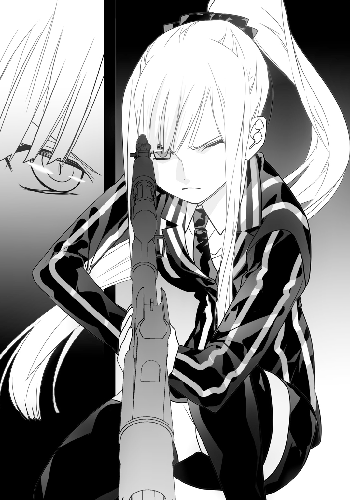
携帯電話の明滅と、マイが引き金を引くのがほぼ同時。
放たれた５・５６ミリＮＡＴＯ弾は、正確に命中し、携帯電話だけを粉砕した。
起爆装置は今度こそ沈黙し、二度と作動することはなかった。
「やった......！」
流壱は今度こそほっとして力を抜いた。
「さすがマイだ......」
呆れたような、感心したような菜菜瀬の声。
「ワンちゃん、射撃上手ねえ」
「狙撃で右に出るやつはいないよ」
「だって。さすが」
マイは、にこりとした菜菜瀬に一瞬だけ目をやったが、すぐにそっぽを向いた。
「出よう」
流壱は二人をうながして走る。
階段を駆け上り、一階の玄関から外に出た。
夜空はひんやりとした空気に満ちており、彼らは久しぶりに息を思いっきり吸い込んだ。
入れっぱなしにしてあるスマートフォンから、リックの音声が流れてきた。
（携帯電話が発信されてるな。さっきのやつの起爆信号だろう）
「間一髪だったか......あっ、それトレースできるか!?」
（もちろん）
「司麻の居場所が分かるぞ！」
流壱の言葉と同時にリックは作業にかかったようだ。すぐに返答がある。
（近くだ。倉庫の向こうから発信されている）
「正確に指示してくれ！」
再び流壱たちは走った。
リックは場所を教え、自らも「そっちへ行く」と告げて電話を切った。
緩やかな下り坂を三人は駆ける。倉庫の付近に、ぼんやりと明かりが見えた。ライトを点けている。その中に人影。
「あれだ！」
向こうも気づいたらしく、人影の動きが慌しくなる。そして発砲音。
流壱達は地面に伏せる。銃弾が頭上を通り越していく。
「マイ、援護してくれ！」
マイは伏せたままＧ36を構える。地面すれすれから一発。続いてもう一発。
人影が二つ、のけぞって転倒した。
流壱は起きあがって駆ける。後ろからは菜菜瀬も走ってくる。
倉庫脇で男二人がうめいていた。どちらも足から血を流している。致命傷ではない。
流壱は落ちていたベレッタＭ92自動拳銃を拾った。男のポケットを探り、予備のマガジンも手に入れる。
菜菜瀬も同じようにしていた。ただ彼女はそれだけではなく、銃口をもう一人の男の頭に突きつけた。
「おい、無地目......」
「任せて。司麻はどこにいるの。答えて」
男は足を押さえ、痛みでうめくだけだ。
「喋んなきゃ一生痛みが分からないようになるよ。早く」
痛みと恐怖で耐えられなくなったかのように、男が喋り出す。
「ふ......船だ......」
男は息も絶え絶えに答える。
「ここでヘリは目立つ......車も追跡される可能性がある......。船が一番だと、言っていた......」
「貨物船ね！」
菜菜瀬と流壱は岸壁を確認する。貨物船は無灯火だったが、人影が動いていることは確認できた。
流壱はスマートフォンを耳に当てる。
「リック、海保に連絡して貨物船を止めろ!?」
（無理だ。警察関係はよほどのことがないと動かない。こっちからも司麻からも鼻薬を効かされている）
舌打ちして、貨物船に走った。
船上の人影の動きが慌しくなる。細長い棒のようなものを手にするのが見えた。
棒の先端が光る。
足下のコンクリートが弾けた。アサルトライフルの射撃だ。流壱は急いで物陰に避難する。
マイが反撃。正確な射撃で、船上の人間を仕留めていく。菜菜瀬もベレッタを撃つが、これはほとんど当たらない。
ライフルを持った人影が引っ込んだ。代わりに少年らしき影が姿を現す。
彼は手を振っていた。
「司麻！」
流壱が叫ぶ。
貨物船に近づいたが、乗船用のラッタルはとうに引き上げられていた。船体はゆっくりと岸壁から離れていく。
「マイ、あいつを狙ってくれ！」
少女は無言でＧ36を構える。照準してから引き金を引いた。
だが発砲を予想していたかのように、直前で人影が動いた。弾丸は惜しいところで命中しない。
「司麻!!」
流壱の絶叫が届いたのかどうか。
司麻らしき人影はもう一度手を振ると船内に引っ込んだ。
ようやくリックがやってくる。その頃にはもう、貨物船は遠くに離れていた。
「畜生め......行っちまいやがった」
流壱は罵った。貨物船が東京湾の彼方に消えていく。衝突防止灯だけが、うっすらと闇夜の彼方に見えている。
四人は港の桟橋に並んで見つめていた。
「ヘリとか戦闘機とかはないの!?」
と菜菜瀬。リックが首を振る。
「フランス製のヘリがあるが修理中。戦闘機はさすがに無茶だ」
「逃げられちゃうわよ」
菜菜瀬もさすがに悔しそうにしていた。
流壱は息を整えている。一回大きく吸ってから言った。
「さて......じゃあ仕上げだ」
菜菜瀬はきょとんとしていたが、リックはにやりとした。
「やはり準備してたんだな」
「貨物船が到着した直後にな」
流壱はスマートフォンを取り出した。今晩の戦闘で落としたり踏まれたりしたため、ぼろぼろになっていた。
電話のアプリケーションを起動する。
「０９０の......」
突然、マイが彼の手からスマートフォンを取り上げた。
「私が」
「いいよ」
「流壱にはやらせない。こういう罪は、私が背負う......」
横から菜菜瀬が口を出した。
「なんだか分かんないけど、あたしがやろっか」
マイは彼女に非友好的な視線を浴びせた。
「いい......」
「冷たいなあ」
「今は私一人で、十分......」
彼女は０９０△×■▽......とダイヤルする。
やがて。
轟音と共に闇夜が真っ赤に染まる。
武器を積んだ貨物船は火を吹き、周囲を煌々と照らしていた。燃えながらゆっくり傾いていく。
その様子は桟橋からもよく見えた。
「いつの間に......」
菜菜瀬が呆れたように言う。流壱が苦笑い。
「お前たちが戦っている中に、俺がちょっとな。量もぴったりだ」
彼は貨物船に、大量の爆薬を仕掛けていたのであった。それをマイが電話で起爆させたのである。
「あんなとこに沈めちゃっていいの？」
「あまりよくないから、沈まない程度に量を調整した。機関室はダメージを受けたはずだから移動もできない。あとは馴染みのサルベージ屋に頼んで、湾外に引っ張ってもらえばいい」
菜菜瀬の疑問にリックが答える。流壱も言った。
「たとえ調査が入っても、出てくる武器は野潟のものだ。西日本で騒ぎになっても俺たちまでは届かねえよ」
そして明日の学校は、何事もなかったかのようにはじまるだろう。流壱がそういう風に作りあげた。闇夜のできごとは、夜明けと共に消えていくのだ。
マイが流壱に、スマートフォンを渡した。
「流壱......」
「ん？」
「司麻は、捕まると思う......？」
彼は燃えている貨物船を眺めた。それから首を振る。
「いいや。もしかしたらもう乗ってないかもしれない。あいつはこれくらいじゃ死んでくれねえし、捕まってもくれねえよ」
「また、追いかける......？」
「まあな。ただ今は、もうあいつの顔は見たくない。そういう気分になった」
流壱はそう答えた。
全員、燃えさかる船をしばらく見つめていた。
「朝になる前に、ひとつ片付けたいんだけど......」
と菜菜瀬。
「信崎君はあたしに一緒に来いって言ったけど、これってチームへのお誘いだよね」
「歓迎するぜ」
流壱だけではなく、リックもにこやかにうなずいていた。マイだけは仏頂面。
「ワンちゃんは喜んでくれないの？」
「......流壱が決めたことだ、拒否はしない」
「大歓迎ってことね」
菜菜瀬は続けて喋った。
「で、給料いくら？ たくさん出してくれるって言ったよね。共に歩くんだから、そっちでも誠意を見せてもらわないと」
「お前ねえ」
流壱は呆れる。マイも穏やかではない目つきで睨んでいた。
菜菜瀬は肩をすくめる。
「だって、持ち合わせが少ないんだもん」
「そこそこ贅沢できる分だけ払うし、寝るところも用意する。でも保険はない。あと世界を自由に飛び回る羽目になる」
「それでいいわよ」
流壱は菜菜瀬の返事にかぶせるよう言った。
「だから、今までみたいに稼ぎを養護施設に寄付しても十分生活できるぜ」
「......知ってたの」
「調べたんだよ」
彼は笑う。
どれだけ爆弾で世界を混乱させても、菜菜瀬は人間らしさを捨てられなかった。それこそが、流壱が彼女を信じた理由でもあった。
どのような武器であろうと、使うのは人なのである。
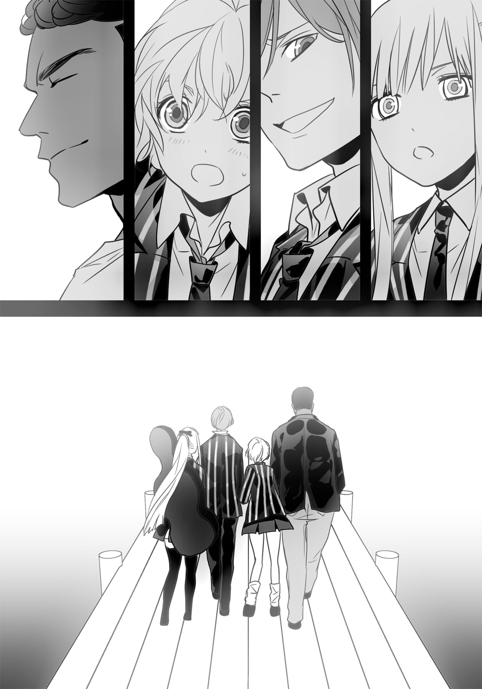
流壱はスマートフォンを海に放り投げた。ぽちゃんと音がして水面に波紋ができる。
夜が明けようとしていた。
○
荷堂学院の岸壁から離れた貨物船は、燃えさかりながら漂っていた。そろそろ空が白んでくるが、そこだけが煌々としている。まるで大掛かりな精霊流しだ。
その光景は湾外地域、××区のビルからでもよく見える。荷堂学院養護教諭の美原冬香は、屋上で双眼鏡を使いながら眺めていた。
「ああん。信崎君ったら、やることが派手なんだから。先生興奮しちゃう」
身体をくねらせている。大きな胸が揺れていた。
「怪我とかしてないかしらー。もししてたら、ちゃんと治療してあげないと。信崎君だけじゃなくて、マイちゃんも診なきゃ駄目ね。可愛い娘は優先的に......」
白衣から音楽が流れた。スマートフォンの着信音だ。彼女はポケットを探る。
「はーい？ あら、珍しいのねー。こんな電話してくるなんて」
冬香は双眼鏡から目を離した。音声に集中する。
「......信崎君の様子？ それはもう、ちゃんと見ているわよー。報告書も出してるでしょう。きちんと書けてると思うけどー？」
垂れ下がり気味の目は、相変らず笑ったままだ。だが瞳の色は、徐々に物騒なものに変化している。
「手は出してないわよー。大事な雇い主さんだもの。お仲間も同じ。どうも一人増えたみたいだけど、そっちはあとで知らせるわねー。......え、人員を増やす？ いらないわー。一人で十分だし、その方が楽に動けるから」
電話の相手はなおも喋っていた。チームを派遣すると言っている。それに対し、冬香はにこやかな笑みを崩さず、台詞には真実味を乗せて言い放つ。
「だからいらない。勝手に送ってもいいけど、全員次の日には行方不明になってるわよー。奥さんや子供たちに、言い訳しながら年金払う？ また中央アジアで事故に巻き込まれたって言うのも嫌よねー」
電話の相手は沈黙した。やがて一言二言、返ってくる。
冬香は口調を戻した。
「分かってくれればいいの。近いうちにあの子たちと仕事することになるんだから。それまで待てばいいのよー。じゃあ大臣によろしくね、局長」
彼女は電話を切った。屋上から放り投げようとするが、ぺろっと舌を出して白衣のポケットにしまう。そこだけが、流壱とは違う仕草であった。
あ と が き
はじめまして。築地俊彦といいます。色々なレーベルで少しずつ書かせてもらっているライトノベル作家です。このたびダッシュエックス文庫で「ブラッディ・ウェポンズ」をスタートさせてもらうことになりました。以後よろしくお願いいたします。
この物語は海外のテレビドラマを結構意識しています。私はその手のファンで、暇さえあれば録画したものを見て、見逃したものはＤＶＤを購入しているのです。内容もどちらかといえば現実を舞台にしたものが好きで、「ＣＳＩシリーズ」「ザ・フォロイング」「パーソン・オブ・インタレスト」なんかは視聴を欠かしたことがありません（一番好きなのは医療ドラマの「グレイズ・アナトミー」）。
あの手のドラマを見ていると、「アメリカってのはしょっちゅう銃撃戦が起こって殺人鬼が町中を闊歩して居るんだなあ」と思えてきます。さすがエンタメの国、テレビであろうと金がかかっており、爆発も家一軒吹っ飛ばしてからが本番です。本作品に爆弾だの自動小銃だのが出てくるのは、そのあたりの影響が強いです。
ただこちらはライトノベルなので、主人公は十代にしました。ヒロインも十代です。三十過ぎのオッサンとオバサンが暴れ回る海外ドラマとはそこが違います。似てる（というか似せた）ところもあって、登場人物が心の中になにかしらの葛藤を抱えています。
本作の主人公、流壱は数年前の強烈な体験によって、「武器を回収する商売」に身を投じました。人生を左右する経験はマイも菜菜瀬も、司麻ですらしています。ネタバレになるので詳しく書けませんが、これらは行動するきっかけであり、一種の強迫観念でもあります。ここに出てくるキャラクターたちは全員過去によって突き動かされているのです。妙に生き急いでいる印象があるのはそのためです。
それらの体験は荒唐無稽なんですが、十代の少年少女が武器を扱うんだから荒唐無稽なくらいがいいだろとの理屈が働きました。海外ドラマも「あり得なくないか」というのがわりと多いです。エンタテインメントということでご容赦を。
まあ、そのような理屈はともかく、流壱たちはこれからも戦い、悩み、後先考えずに走ったりします。やっぱり若いんですから熱さもなければ駄目です。少年たちがひたすら頑張る話でもありますので、そのあたりの活躍をご覧になっていただければ幸いです。
今回は日本国内、それも限定された場所が舞台でしたが、次回はもう少し広いところで活躍してもらおうと思っています。武器を使うんだから、やっぱり距離のあるところでぶっ放したいですよねえ。海外にするかどうかは未定ですが、視野には入れていますので、どうぞお楽しみに。
最後になりましたが、美麗なイラストを描いていただいたさらちよみさんに、最大限の感謝を捧げます。本当にありがとうございました。
二〇一四年 十二月一日
築地俊彦
著者紹介
築地俊彦 つきじ としひこ
深作欣二とデヴィッド・リンチの映画が好きです。あとアーロン・ソーキンの脚本。
現在はＬｏＬとモンハンをやったりやらなかったり。
三月生まれ。代表作は『まぶらほ』（ファンタジア文庫）、『けんぷファー』（ＭＦ文庫Ｊ）、『冥玉のアルメイン』（ファミ通文庫）など。
http://twitter.com/to_tsukiji/
illustration
さらちよみ
11月12日生まれ。三軒茶屋在住。
イラストレーター＆漫画家。
『アルカナ・ファミリア』『POSSESSION MAGENTA』キャラクターデザイン。『STEINS;GATE』コミカライズなど。
鍋がおいしい季節ですね。春菊が一番好きです。
ダッシュエックス文庫DIGITAL
ブラッディ・ウェポンズ
著者 築地俊彦
(C) TOSHIHIKO TSUKIJI 2015
２０１５年１月31日発行
この電子書籍は、ダッシュエックス文庫「ブラッディ・ウェポンズ」
２０１４年12月24日発行の第１刷を底本としています。
発行者 鈴木晴彦
発行所 株式会社 集英社
〒１０１－８０５０
東京都千代田区一ツ橋２丁目５番10号
０３－３２３０－６０８０（読者係）
制作所 株式会社デジタルディレクターズ
本作品の全部また一部を無断で複製、転載、改竄、インターネット上に掲載すること、および有償無償に関わらず、本データを第三者に譲渡することを禁じます。なお個人利用の目的であっても、コピーガードを解除しての複製は、法律で禁じられています。